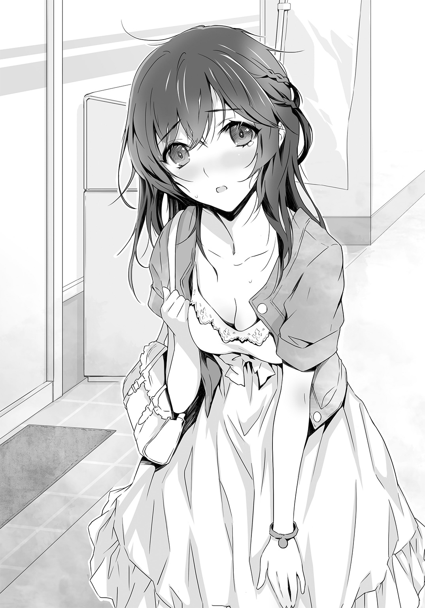
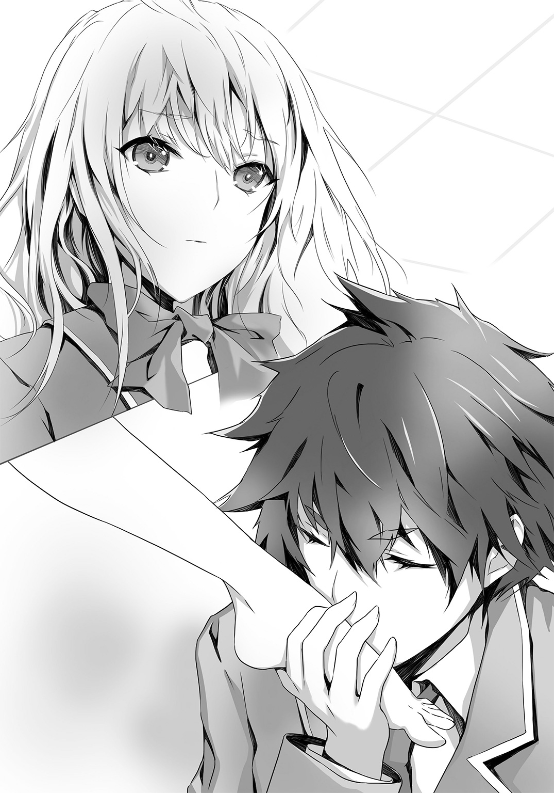

| SとSの不埒な同盟 2 | |
| 野村美月 | |
この本は縦書きでレイアウトされています。
また、ご覧になる機種により、表示の差が認められることがあります。
 ダッシュエックス文庫DIGITAL
ダッシュエックス文庫DIGITAL
ＳとＳの不埒な同盟 ２
野村美月
――わたしは、あなたが嫌いよ、真田くん。
以前、ルチアが笑みを含んだ眼差しで俺を見つめて、そんなことを言っていた。
あれは梅雨になる前の頃。
ルチアがバイオリンの天使と呼び愛でていた小笠原忍に失恋し、俺はフルートの妖精と呼び惚れ込んでいた美園千冬を振った直後で。
俺たちは、放課後の美術室の窓辺で向かい合わせに座り、ルチアは膝に立てたスケッチブックに絵を描き、俺は二人のあいだに置いた机で、粘土をわしわしこねていた。
大きな窓から、やわらかな初夏の光が射し込んでいて、うつむくルチアの豊かな金色の髪と、長い金色のまつげを、あざやかにきらめかせていた。
大理石のように白くすべらかな顔にはめ込まれたラピスラズリの瞳や、形の良い眉や鼻、凜とした唇は、どれも一流の芸術家がノミを振るった彫像のように完璧で、ルチア自身がこの世にたったひとつしかない、貴重な芸術品のようだった。
その完璧な顔をチラ見しながら、
（淡々としているが、こいつも小笠原に失恋した日は、自分の部屋にこもって、一人で失恋ソングなんぞを聴きながら、泣いたりしたのかもしれんな。こいつは強いから、人前では傷ついていないふりをしてみせるんだろうが）
などと考えていたとき、ふいにルチアが俺のほうを見て、クールで辛辣な唇に、理知的な笑みをたたえて言ったのだ。
――わたしは、あなたが嫌いよ、真田くん。だって、あなたは、わたしが見抜いてほしくないことを見抜くから。わたしは誇り高いＳよ。一人でこっそり傷をなめているだなんて、思われたくないわ。
まるでルチアに心を読まれたような気がしてドキリとする俺に、ラピスラズリの瞳をいたずらっぽくきらめかせて、ルチアはさらに言った。
――けど、あなたがわたしに対してエスパーになれるように、あなたも、わたしの前では丸裸なのよ。
それは、俺があれほど理想だと思っていた美園千冬を振った理由も、お見通しということか？ 俺自身にさえ説明のつかない、混沌としていて、曖昧で、いびつな感情の、その根底にあるものを、こいつは説明できるということだろうか？
そう考えて、本当に自分がルチアの前に素っ裸で座り込んで粘土をこねているような気がしてきて、もっとドキッとした。
それは落ち着かないが、決して嫌な気分ではなかった。
多分、ルチアも。
序章的な、なにか 不埒で迷夢な報告会
「くそっ、暑くて寝てられん」
夏休みの真っ只中の、午前九時――。
自室のベッドに全裸で横たわる俺は、熱帯ジャングルに素っ裸で放り出された冒険者の気分を味わっていた。しわの寄ったシーツが、流しまくった大量の汗や、その他もろもろを吸い込んで、しめっぽい。梅雨もしめっぽかったが、夏のしめっぽさもまた異常だ。しかも暑い。
昨日の夕方、ようやくビーチバレー大会が終わり、これまでのように片道一時間半をかけて、エウレカ高校までわざわざ出向いて特訓をする必要もなくなり、家で好きなだけ寝坊して、自堕落に過ごせるようになったというのに、暑さのせいで、ろくに寝てもいられんとは。
一軒家の二階にある俺の部屋は東南角部屋で、冬は快適だが、夏は灼熱地獄だ。クーラーを入れてほしいと親に再三申告しても、夏はもともと暑いものだ、扇風機で我慢しろ、精神修行だと思え、と返される。
なので、夏は窓を開け放し、全裸で就寝する。
目覚めも当然全裸で、うっかりそのまま一階の洗面所までゆき、髪をブローしていた中三の妹と出くわして、ドライヤーで殴られたことがある。朝からわいせつ物を見せるな、変態！ と妹はえらくご立腹で、そのあと一週間、俺と口をきかなかった。
俺が兄として「いいかげんに機嫌を直せ。子供の頃、庭のビニールプールに全裸で入って、お互いの裸体を、つぶさに観察し合った仲なのに、今さら見ても、見られても、どうということはない。そもそも、俺が全裸で洗面所に踏み込んだときの、おまえのリアクションは乱暴すぎて、米粒ほどもそそられなかったぞ、妹よ。ああいう場合は、きゃっ、と悲鳴を上げて、頰を赤らめて手で顔をおおうのが、正しい作法だ。鬼のように眉をつり上げて、いきなり凶器を振り上げるのは、よろしくない」と本音で語ると、そこからさらに二週間、俺と視線すら合わせようとしなかった。
このように、真夏の暑さと不快感は、血の繫がりさえ脆弱にする。
観念して、のっそりと上半身を起こす。
昨日ビーチバレー大会で柄にもなく熱血しすぎた影響か、体のふしぶしが痛む。また頭の中がもやもやして、どうにもすっきりしない。
これも、ゆうべ、暑さで眠れなかったせいか。
いや。
眠れなかったのは、高温多湿ばかりが理由ではない。ビーチバレー大会のあとに起きたことを、ベッドに横になったあとも、延々と考えていたためだ。
――俺とつきあってください。
昨日、夕暮れに染まる静かな海岸で、俺は窓子先輩に、そう告白した。
俺より一学年上で、エウレカ高校三年生の桃ノ沢窓子先輩は、やわらかそうな黒髪と、清楚で女らしい目鼻立ちと、困ったときの下がり眉がどこまでも愛らしい、俺の理想そのままの女性だ。Ｓな俺は、窓子先輩のＭっぽい仕草や表情に、一学期の終わりに学校の庭でたまたま出会ったときからドキドキしっぱなしで、窓子先輩をひそかにガン見しては、不埒な妄想を繰り広げていた。
ルチアの協力で、そこから一歩踏み出し、友達のつきあいで運動音痴なのにビーチバレー大会に出場しなければならなくなった窓子先輩のコーチを引き受け、厳しくしごいたりもした。そんな中で、窓子先輩の心をつかむことに成功したのだ。
窓子先輩は俺の告白を聞いて、頰や耳や首筋を、みるみる赤らめていった。俺が理想に描いたままの可憐なリアクションで、そのあと俺が大会の優勝特典である金色の小さいメダルがついた海色のミサンガを、窓子先輩の右の手首に巻いて、
『俺の彼女になってくれるだろうか』
と、あらためて確認すると、ミサンガを巻いた手を、か弱げに震わせて、うるんだ瞳で俺をおずおずと見つめて、小さな声で答えた。
――はい。
こうして俺は、窓子先輩という理想の彼女を得た。
まさに大勝利で、大成功で。
なのに、いまひとつすっきりしないのは、窓子先輩に告白する直前に見たルチアのことが、気になっているからだろう。
ルチアは、産休代替教員の暮林に告白されていた。
――僕と、おつきあいしてください、藍本さん。
気が弱くて、ビビリで、風が吹けば吹き飛びそうに頼りない暮林が、必死に誠実に伝えた言葉に、ルチアは静かに、「はい」と答えていた。
そうか、ルチアの恋は、今度は実ったのだな。ルチアは、理想の彼氏を手に入れたのだな。
そうか。
そうか......。
二人に背を向けて、離れていったその瞬間は、頭の中はすっきりと、ひえていた。
もうこれで、ルチアに対して、もやもやした気持ちを抱かずにすむのだ。それは悪いことではないと。
なのに、ぽーっとしっぱなしの窓子先輩を自宅の近くまで送り届け、自分も家に帰って、今日は疲れたから、さっさと寝ようと、早めに服を脱ぎ捨てベッドに入るなり、俺の告白に応える窓子先輩の儚げな『はい』と、暮林の告白に応えるルチアの静かな『はい』が、交互に耳によみがえり、その瞬間の二人の顔もまた交互に浮かんできて、眠れなかったのだ。
ルチアは暮林に振られたあとも、暮林を想い続けていたのだろうか？
小笠原忍に失恋したときは、あっというまに暮林に気持ちを移したのに、暮林のことは引きずったのは、暮林への想いが、小笠原のときよりも強かったからだろうか。
それに、ルチアと暮林がつきあいはじめたら、鑑賞部の活動はどうなるのだろう。
俺との関係は？ 俺はこの先、ルチアとどう接すればいい？ ルチアは俺に、どう接するのだろう？
そんなことを、とりとめもなく朝まで考えていたのだった。
「頭が、ぼーっとするはずだな」
やたらと重い頭に手をあてて唸り、ベッドからおりようとしたとき。
サイドテーブルに置いておいた携帯が、メッセージの着信を伝えた。
ルチアからだった。急いで表示する。
『優勝おめでとう。
先に帰ってしまって、ごめんなさい。
報告があるので、部室へ来て。わたしは今日は六時までいるわ』
「報告って、暮林のことか？」
鼻のてっぺんに皺を寄せて、口をムッと閉じたまま、しかめっ面で画面を見おろしていたが、俺もメッセージを返した。
『わかった。朝メシを食ったら行く。俺も報告がある』
そうして舌打ちをして、部屋を出た。
◇ ◇ ◇
「何故、真田くんは、右の頰に痣を作っているの？ 電車で痴漢に間違われて、女の子にショルダーバッグで殴られたのかしら？」
絵の具の匂いのする美術室に足を踏み入れるなり、ルチアは植木鉢に水をやる手を止めて、クールな顔と声で言った。
「よくショルダーバッグで殴られたとわかったな、藍本よ」
苦い顔で答えると、金色の眉根を寄せて、
「あきれた、本当に痴漢行為を働いたの？ あなたはもっと志の高い変態だと思っていたわ」
「誤解をするな。ショルダーバッグで俺の顔を殴打したのは、妹だ。俺が、うっかり全裸で階段を降りていったら、不運にも玄関で靴をはこうとしていた妹に出くわしたのだ」
俺が、「おはよう妹よ、出かけるのか」、と声をかけると、目をむいて、ショルダーバッグを振り上げた。
――変態！
そんな叫びとともに、バッグの角が、俺の右頰を直撃したのだった。
まったく、凶暴な妹だ。
「あなたのように、ゴツくて、デカくて、黒くて、筋肉質な見苦しい裸体を、強制イベントで見せられたのでは、カッとなって凶行に及んだ妹さんの気持ちも、わからないではないわ」
細くて小さくて、すべすべした白い肌を愛するルチアが、淡々と言った。
反論しても無駄なので、しない。サクランボの種を植えた植木鉢に、赤いじょうろで、またちょろちょろと水をやりはじめるルチアに、
「俺が華奢で色白な美少年でも、妹の反応は変わらなかったと思うがな。で、おまえの報告は、なんだ」
と冷静な声で問う。
ルチアがじょうろを置いて、俺のほうを振り向く。窓から降り注ぐ陽射しが、奔流のように流れ落ちるプラチナゴールドの髪をきらめかせ、ラピスラズリの瞳がクールに俺を見つめ返す。夏休みも中盤に入った美術部に、ルチアと俺の他は誰もおらず、彫像やイーゼルが雑多に置かれた静かな部屋に、大人びた声が響いた。
「ビーチバレー大会のあと、純平さんに告白されて、おつきあいすることになったわ」
俺は硬い息をのみ、普通の声で答えた。
「......そうか、おめでとう」
もっと驚いてみせるべきだろうか。だが、それもわざとらしい気がする。
ルチアは、俺がさして驚いていないことに対して疑問を感じている様子はなかった。冷たく見えるほど整った顔を少しもゆがめることなく、
「ありがとう」
と言った。
「真田くんの報告は、なに。だいたい予想はつくけれど」
ラピスラズリの瞳が、じっと俺を見つめている。
「窓子先輩に、メダルを渡して告白をした。答えは、オッケーだ」
「今度は真田くんも、『スマン』なんてバカなことを言ったりしなかったのでしょう」
「ああ。窓子先輩と、つきあうことになった」
「おめでとう」
ルチアの瞳も、声も、ほんの少しも揺るがない。
仲間に対して、ごく普通に祝福の言葉を述べるように、言う。
「おまえの分のメダルは、俺が預かっている。手を出せ」
俺がポケットから、賞品の海色のミサンガを取り出すと、ルチアはそれを俺の手から素早く奪い取り、
「わたしは、いらない」
静かにつぶやいて、奪ったミサンガを、俺の左腕にするりと巻きつけた。
「もう必要のないものだから、真田くんにあげるわ。そうしたら、窓子先輩とペアになるでしょう」
そう言って、ミサンガの端を、細い指で結びあわせる。
金色のメダルが、窓から射し込む光をきらりとはじく。
「メダルのピンで暮林をつつかなくていいのか？ 肌に直接メダルをとめたり、ミサンガで、あちこち縛ったりしなくていいのか？」
メンバーを集めて大会に出場するほど、ルチアはメダルを欲しがっていたのではなかったのか？ 暮林と晴れてつきあえることになったので、いらなくなったということなのだろうか？
ルチアが俺からすっと手を引く。
「ええ。当分のあいだは、純平さんにまた引かれないように、知的で淑やかで清らかな彼女でいる予定だから。近くに、こんな楽しいものがあったら、つい試してみたくなってしまうでしょう」
「暮林は、とっくにおまえの正体を知っているのだから、今さら猫をかぶる必要はないのではないか？」
「甘いわね、真田くん。結婚して一日で離婚する夫婦だって、この世には存在するのよ。ましてや法的拘束のない高校生と教師のカップルなんて、ほんの少しのきっかけで、破局に至る可能性は大よ。特に純平さんは、わたしに対して不安を抱いているから。わたしが少しでもＳな本性を見せれば、やっぱりきみとはやっていけないと逃げ出すわ」
「まぁ、そうかもしれんな」
そんな覚悟の足りない男とはつきあうな、と言ってやりたいところだが、それはルチアにとっては余計なお世話だろう。そういう臆病で繊細な暮林こそ、ルチアは好ましく思っているに違いないから。
「他人事のような顔をしているけれど、真田くん。これは、あなたにもあてはまることよ」
「なに」
聞き返すと、ルチアは重々しく、
「あなたが全裸で家の中を徘徊し、中学生の妹にわいせつ物をさらして平然としているような人間だと窓子先輩が知ったら、どう思うかしら」
「う......」
そいつは確かに、引かれるだろうな。
「しかも、これまでさんざん、この場所から華道部の窓子先輩を視姦して、淫らな妄想を繰り広げていたと知られたら」
「うむむ......」
俺もルチアも、美術部員は隠れ蓑で、その実体は誇り高き鑑賞部員だ。
鑑賞部とは、当時、美術部の向かいの校舎にある合奏部に所属する美園千冬に入れ込んでいた俺がひっそりと立ち上げた秘密団体で、俺は二・〇以上ある驚異の視力で、この部屋の窓から、向かいの部屋の窓越しに、フルートを奏でる美園を眺め回し、Ｓな妄想を全開にしていたのだった。
妄想の対象が美園から窓子先輩へ移ったあとは、同じように向かいの華道部の窓越しに、窓子先輩を、〝鑑賞〟していた。
鑑賞部とは、己にとって好ましく美しいものを、徹底的に眺め、考察し、想像し、味わいつくす部である。
ただし、対象者にその行為を知られないよう、一定の距離を置いて。
それが、自分たちがＳな変態であると自覚している俺たちの、ルールだった。
そのルールが改定され、鑑賞対象者を我がものとし、直接愛で楽しむというふうになってからも、俺の窓子先輩へのＳな妄想は加速する一方だった。
首輪。蠟燭。監禁。薔薇の棘の鞭。
唯一の同志であり、鑑賞部員であるルチアと、窓辺で邪悪な絵や粘土細工を作成しながら、心ゆくまで語り合った不埒なあれこれを、窓子先輩に知られたら......。
逃げられるな、確実に。
その前に卒倒されるかもしれん。
しかめ面で唸る俺に、ルチアがしたり顔で言う。
「告白して鑑賞対象を手に入れて、それで終わりではないのよ。むしろ、ここからが本当のはじまりよ。わたしたちは鑑賞部員として、知的に真摯に、対象者を惹きつけ続けなければならないわ。そうやって、じわじわと相手を自分の虜にして、なにがあっても離れられなくしてから、倫理に著しく外れる行為をするのは、きっととても楽しいわ」
「それもそうだな」
と、俺もうなずく。
ルチアが形のよい唇を、邪悪にクールにゆるめる。
「あなたなら賛同してくれると思ったわ、真田くん。馴れ合いは嫌いだけれど、同じ日に交際がスタートしたというのも、なにかの縁よ。鑑賞部員として、これからも情報を交換し、共闘してゆきましょう」
鑑賞部員として。
これまでどおりに。
ルチアのその言葉は、俺を安堵させた。
お互いにパートナーができたことで、俺たちの関係はどうなってしまうのか、ここへ来るまでずっと気がかりだったから。
俺にとってルチアは、Ｓな性癖を隠すことなく妄想を語りつくし、共感しあえる、大事な同志だ。
以前ルチアが、言っていた。
似すぎている俺たちは、互いに隠し事はできないと。
――あなたがわたしに対してエスパーになれるように、あなたも、わたしの前では丸裸なのよ。
鑑賞部の活動中、俺とルチアは常に裸で語りあっていて、その開放感も心地よさも、他のどんな部でも得られないものだった。
鑑賞部の活動がなくなり、ルチアと疎遠になったら、きっととてつもなく淋しく、物足りない気分になるだろう。想像しただけで胸が暗くなった。
だが、お互いの欲望を、あけすけに語りあえるこの場所は、俺たちがそれぞれ恋人を得ても、残っていると思っていいんだな。
ルチアはラピスラズリの瞳で、知的に俺を見つめている。
この場所で、俺は裸で、ルチアも裸だ。
だから、わかる。ルチアもまたこの場所を必要としていると。そのことを確認するために、俺を呼び出したのだと。
ならばきっと、俺たちの関係はこの先も変わらない。
それは、とても大事なことだ。
俺の答えを待っているルチアに向かって、俺は口を開く。
「おう、よろしくな」
晴れ晴れと笑って、伝える。
ルチアも笑った。
まぶしいものを見るように目を細めて、安心したように頰をほころばせて。
「早速、純平さんとの初デートのコースについて、意見を聞かせてほしいのだけれど」
「俺も、あさっての窓子先輩とのデートで、店をどうするのか迷っていたところだ」
「それなら、女の子に人気のお店を、わたしがピックアップするわ」
「俺も、男がぐっとくるデート中の仕草を伝授しよう」
俺たちは向かい合わせの椅子に座り、これまでのように話しはじめた。
◇ ◇ ◇
二日後。窓子先輩との初デートの日。俺はルチアのアドバイスどおり、待ち合わせの駅前の像の横に、十分前に到着した。
窓子先輩は律儀で心配性なので、約束の時間より少し早く来ているはずだとルチアは読んでおり、それよりも早く俺が待っているのは、女子的にポイントが高いという。
――真田くんは背が高くてガタイが良いから、人混みでも目立つわ。窓子先輩が駅から出てきたときに、真田くんが凜々しい顔で像の横に立っていたら、ときめくはずよ。
決して、そわそわしたりしないこと。頰を引きしめ、一点を見すえ、窓子先輩に横顔を向けて立つのが望ましいと。
そのとおりに、口を引き結んで、ちょうどいい位置にあるローン会社の看板を睨んでいるのだが、窓子先輩は一向に現れない。
約束は今日だったはずだが。
時間も昨日、ＬＩＮＥで確認したので、間違いないはずだ。視線をさりげなくそらし、駅の時計を見ると、すでに約束の時間から十分以上も経過している。
遅刻？ 初デートでか？
ルチアが言うように、窓子先輩は律儀で心配性だ。ビーチバレーの特訓をしていたときも、俺のことが怖くて仕方がないのに、いつもメンバーの中で一番に裏庭へ来て、身を縮めて、泣きそうな顔で待っていた。
だから、うっかり寝坊をして電車に乗り遅れたということはなさそうなのだが、二十分経っても窓子先輩の姿は見えない。なにかトラブルがあったのだろうか。
ポケットから携帯を出してメッセージを確認するが、窓子先輩からの着信はない。
俺のほうから、窓子先輩に連絡を入れようとしたとき。
駅から流れてきた人混みに押され、よろめきながらこちらに向かおうとしている窓子先輩が見えた。
夏物のワンピースの上に、涼しげなジャケットを重ねているが、ワンピースの肩ひもが片方ずり落ちてきているらしく、それをジャケットの上から一生懸命引き上げながら、息を切らして、よろよろ走ってくる。普段はおろしているやわらかな黒髪を、凝った形に結っているが、こちらも乱れて、半分ほどけている。
もともと運動音痴な人ではあるが、足取りがおかしい。
あっちに、ふらり、こっちに、かくりと、体が危なっかしく揺れ、何度もコケそうになってはぎりぎりでこらえ、体勢を立て直し、またおっかなびっくり走り出す。
あ、またコケた！
げっ、今度は盛大に――。
俺が駆け寄って抱きとめると、窓子先輩は真っ赤になって、おろおろし、
「ごめんなさいっ」
と、頭を下げた。
俺から、じりじり後ずさりながら、
「お待たせして、ごめんなさい、ごめんなさい」
と、何度も謝る。
「さ、サンダルのベルトが、途中で切れちゃって。そ、それでうまく歩けなくて......時間が迫って焦っていたら、電車に乗るとき、線路にサンダルを片方落としちゃって、駅員さんを呼んで、長い棒でひっかけて拾ってもらってっ」
見おろせば、右足のサンダルのベルトが、びろんと伸びていて、縁にレースがついた白い靴下のつま先やかかとが、汚れている。
本当に、一生懸命に走ってきたのだろう。
今も息を切らしていて、細い肩を苦しそうに上下させ、半泣きになっている。
「携帯で連絡しようと思ったら、充電が――切れていて。本当に、ごめんなさいっ」
窓子先輩が、また深々と頭を下げる。
俺が気を悪くしているのではないか、怒っているのではないか、大声で叱りつけられるのではないかと、怯えているようだった。

無理もない。窓子先輩に接近するため、ビーチバレーのコーチをしていた頃、俺が演じていた女嫌いの硬派な男のイメージが、今も窓子先輩の頭に染みついているのだろう。
俺に怯えまくる窓子先輩は、たいそう可憐で、俺のＳ心をたまらなくかきたてたが、そこをぐっとこらえて、細い腕をつかみ、駅の近くのショップへ連れてゆく。
折れそうに華奢な手首に巻かれた海色のミサンガの、金色のメダルが、窓子先輩の歩みに合わせて小さく揺れる。
俺に腕を握られた瞬間、窓子先輩は、びくっと身を縮め、ますます怯えている表情で俺に引っ張られていたが、靴が並ぶ店内で、
「サンダルが壊れたんだ。歩きやすい靴を見つくろってくれ」
と店員に声をかけると、ぼーっとした顔で俺を見上げて、そのあと頰を染めた。俺の手首にも自分とまったく同じ海色のミサンガがあるのを見て、何故俺がそれを巻いているのか訊きたそうだったが、タイミングを逸して、もじもじしている。
店員が、かかとが低くて見た目も可愛い靴をいくつか並べて、窓子先輩が椅子に座って履き心地を試す。
その様子を、俺は横に立って無言で見ていた。
窓子先輩が新しい靴を履くたび、おずおずと俺を見上げる。そのときだけ、
「いいんじゃないか」とか、「さっきのほうが歩きやすそうだ」とか、「先輩的には、どうなんだ」と短く言葉を述べる。
そのたび窓子先輩は、緊張気味に小さくうなずいたり、小声で「そうね」「わたしは......」などとつぶやいたりした。
やがて靴が決まり、窓子先輩が汚れた靴下を脱いで素足にそれを履くと、俺は店員に精算を申し出た。
店員が告げた料金を、財布から出す。
窓子先輩が慌てて、
「わ、わたしが払うわ」
と自分もバッグから財布を出そうとしたが、それを止めて、
「いい。俺に払わせてくれ」
と言って、支払いをすませてしまった。
それほど高い店ではないし、夏のバーゲン中でさらに五十パーセント引きだ。デート資金にお年玉をおろしてきたし、彼氏としてこれくらい格好をつけさせてもらってもよいだろう。
窓子先輩はまた目を見張って、ぼーっとしていた。
店員が、窓子先輩が履いていたサンダルを店のロゴを印字した袋に入れてくれて、それを持って表に出る。
「あ、あの、真田くん。やっぱりわたし、お金を」
「足は平気か？ 途中でひねったり、転んだりしなかったか？」
俺が尋ねると、声をつまらせて、
「ちょ......ちょっとだけ」
恥ずかしそうに答えた。
「でも、平気――」
途中でまた声をつまらせたのは、俺が手を繫いだからだろう。
「なら、ゆっくり歩こう」
「......！」
小さく息をのみ、みるみる赤くなり、か弱げな声で言った。
「さ、真田くんは......女の子にさわると、蕁麻疹が出るんじゃないの？」
「すまん、あれは噓だ」
俺が前を見たまま、きっぱり答えると、窓子先輩は、
「え」
と、また戸惑いの声を漏らした。
俺は窓子先輩の手を握ってゆっくり歩きながら、女嫌いの硬派のふりをしたわけを語った。
「先輩が、男が苦手だと聞いてたから、女嫌いということにしておけば警戒されないと思ったんだ」
窓子先輩が、ますます目を見張る。
「なのに、逆に怒鳴りつけて怖がらせてしまって、すまなかった。本当は、先輩が校庭で水浸しになっているのを見たときから気になっていて、どうにか近づけないかと、藍本に協力してもらったんだ」
つきあいはじめたばかりでＳな本性を全開にしてはいけないと、ルチアは言った。そんなことをすれば、引かれて逃げられると。
その意見には同意する。
だが、女嫌いの硬派のままつきあうのも難しいし、親密になるほどボロが出るだろう。なので今日のデートで打ち明けようと決めていた。
窓子先輩は、俺の告白を驚きの表情で聞いている。
あんまり長いこと窓子先輩が足を止めて固まっているので、マズイ、ここで打ち明けたのは早計だったか？ 下心のある男だと思われたか？ と、やや心配になったが、窓子先輩は目を伏せ、ゆっくりうつむくと――俺の手を、きゅっと握り返してきた。
ぎゅーっと強く握りしめるのではなく、あくまで儚く、しとやかに、きゅっ......と。
見おろした俺の目に、恥じらいに染まった小さな白い顔が映って、心臓が派手に高鳴る。
うおっ......この表情。
唇をかすかにほころばせて、さらに恥ずかしげな愛らしい表情になると、窓子先輩は目を伏せたままつぶやいた。
「びっくりしたけれど......嬉しい......」
その声や、伏せたまつげや、うるんだ瞳や、清楚な唇に、さらに鼓動が速さを増して、頭が熱くなる。ああ、この人が俺の彼女になったのだなと自覚して、胸が強くとどろいた。
窓子先輩は、まつげを少し上げたものの、まだ俺と目を合わせるのは恥ずかしいようで、俺の手首のあたりに視線をさまよわせた。
そこには金色のメダルがついた海色のミサンガがある。
窓子先輩が小さな声で、
「このミサンガ、どうしたの？」
と、尋ねた。
「ああ、藍本がくれたんだ。藍本も意中の男とつきあいはじめて、もう自分は必要ないからと言って」
俺がルチアの名前を出すと、窓子先輩は少しだけ心配そうに瞳を曇らせたが、ルチアに相愛の恋人がいると知って安心したようで、
「そう」
と、つぶやいて、
「おそろいね」
俺の腕の横に、自分の手首をそっと並べた。
金色のメダルが二つ、海色のミサンガの上に並んで浮かんでいる。まるでさんさんと輝く夏の太陽のようだ。
俺のごつくて黒い手と並べると、窓子先輩の小さな白い手は、いっそう可憐に見える。
「ルチアさんに、お礼を言わなくちゃ。真田くんを、わたしのコーチとして紹介してくれて。メダルまで譲ってくれて」
「ああ、そうだな」
ほんの一瞬、ルチアの顔が頭の中に浮かんで、奔流のような金色の髪が目の裏でちかっと輝いて、落ち着かない気持ちになった。
が――。
窓子先輩が俺を見上げて嬉しそうに笑ったとたん、その笑顔に釘付けになり、心臓がまた高鳴り出す。
「真田くんのこと、大輝くんって呼んでも、いい？」
恥ずかしそうな、甘い声で、窓子先輩が尋ねる。
俺は窓子先輩の手を握ったまま、答えた。
「そうしてくれ。俺も、窓子先輩と呼ぶから」
心の中では、とっくにそう呼んでいたのだけれどな。
「......『先輩』は、とってくれないの？」
先輩と敬称がついているほうが萌えるとは言わず、そこは好青年を装って、真面目な口調で告げる。
「一度に距離を縮めるよりも、先々に楽しみがあるほうがよいだろう」
すると窓子先輩は、くすりとして。
「うん」
俺の手を、また、きゅっと......握り返した。
手のひらがたいそうあたたかく、くすぐったく、その未知の感触に戸惑い、興奮しながら、俺はこの愛らしい彼女と一日過ごせる幸福に、胸を熱くしたのだった。
こんなに浮かれて、ぞくぞくして、甘くて、嬉しいのだから、きっとこれでよかったのだ。
さぁ、楽しいデートのはじまりだ。
第一話 鑑賞部推奨、不埒なデート。またはお似合いの二人。
「困ったわ」
と、いきなり夏休み明けの最初の部活動で、藍本ルチアは俺に向かって沈痛なおももちで、つぶやいてみせた。
「ああ、困ったな」
と、俺――真田大輝も、眉根を寄せて眉間に手をあてたりしてみる。
俺たちが座っているのは、窓のほうへ向けられた学校のパイプ椅子で、俺の椅子とルチアの椅子のあいだにおいた机が、ちょうど美術部の向かいの校舎の、華道部と合奏部のあいだの壁にあたる位置にある。
はじめは、俺の椅子は華道部の窓の真正面に。ルチアの椅子は合奏部の窓の真正面に置かれており、そこで、おのおのの恋人の〝鑑賞〟を楽しんでいたのだが、そうすると俺とルチアの距離が空きすぎて、これまでのように不埒な内緒話をするには都合が悪い。
「このくらいなら、聞こえる？」
「いや、このくらいで、どうだ？」
「もう少し寄せてみましょう」
「ああ、そうだな」
と、何度もやりとりしながら、じりじりと寄せてゆくうちに、結局この位置が一番良いという結論に達したのだった。
俺たちが椅子に腰かけて、クールな顔でぼそぼそ話し合っているのを、他の美術部員たちが離れた場所からちらりと眺めたあと、スルーして自分たちの作業に没頭する。
版画を彫っている三年生の土居さんと、投稿用の漫画を描いている一年生の高島平とは、ビーチバレー大会で一緒に戦い優勝した仲で、二学期に入ってから再会し、それなりに挨拶をしたり言葉を交わしたりもしたが、基本美術部の部員たちはマイペースで、他人のことに干渉しない。それは、美術部員を隠れ蓑にして鑑賞部の活動を続ける俺とルチアには、ぴったりだった。
夏休みのあいだも俺たちは何度か登校し、美術室でそれぞれの活動を報告しあった。
〝それぞれの活動〟というのは、おのおのの鑑賞対象とのつきあいかたについて――つまり、男女交際についてである。
ルチアが暮林の告白を受け入れた直後に、俺もまた窓子先輩に告白し、交際をスタートさせた。そのことによってルチアと疎遠になり、鑑賞部も解散となるのではないかと案じていたが、そうはならなかった。
俺たちは、お互いのつきあいについて、初デートはどこへ行くのだとか、当日はなにを着ていけばいいかとか、食事はどこの店でなにをオーダーするのが正しいかといったことを、鑑賞部員として真面目に議論し合った。
なにしろ俺たちは、世間では変態と呼ばれる特殊嗜好を、理知の衣でくるんだ難儀な者同士なので、まずは交際相手を引かせず、いかに高校生らしい交際をしてゆくかということを、常に考えなければならない。
それがマイノリティのたしなみであり、交際相手に対する誠意というものだ。
また、そんなお題目を抜きにしても、俺は女子とつきあうのははじめてなので、女子が好みそうな店やデートスポットをルチアに教えてもらえるのは、ありがたかった。
お返しに俺も、男がデートのとき女子に着てきてほしい服や、オーダーしてほしい飲み物などをレクチャーした。
足や胸を見せすぎる服よりも、丈がやや長いスカートや、ボタンをしっかりとめたブラウスを着用して、かがんだり座ったりしたときにチラ見させたほうがドキリとするとか、珈琲をブラックで頼むよりは紅茶やハーブティーを頼めとか、そういうことを。
デートが終われば、ＬＩＮＥや電話でその内容を報告し合い、ときには美術室で待ち合わせ、Ｓな者だけに通じる悩みや妄想をあけすけに語りあい、その合間に、ルチアはサクランボの鉢の土が干からびないよう、赤いじょうろで水をじょぼじょぼかけた。
ある意味、恋人を持つ前よりも、俺たちの仲間意識は強まり、鑑賞部の活動も濃くなったと言えよう。
そして、二学期がスタートした現在。
俺とルチアはＳであるがゆえの悩みに直面し、打開策を話し合っているのだった。
「純平さんが可愛すぎるのよ」
と、ルチアは真顔で言い切った。
「昨日は、純平さんが子供の頃から好きだったという絵本作家の絵画展へ行ったのだけれど、ペンギンや、らくだの絵の前で立ち止まって、『うわー、なつかしいなー。この絵本、子供の頃、持ってたよ。うわー、こっちも覚えてるよー』なんて目をきらきら輝かせて、両手を握りしめて、全身で喜びを表現している姿が小学生の男の子に見えてしまって。その絵画展が開催されている場所が、たまたまデパートの子供用品売り場だったものだから、純平さんに『半ズボンを買ってゆかない？ きっと似合うと思うからはいてみせて』と言いかけて、慌てて『半ズボンの男の子には魔性の魅力があるわね』と誤魔化したら、それはそれで思いきり引かれてしまったわ」
「成人の暮林に、子供服売り場の半ズボンはサイズ的に無理だろう。そこは『わたしも、半ズボンの似合う男の子が欲しいわ』くらいにしておけ」
「それはまた別の意味で、引かれそうよ」
「そうか、難しいな。俺もこの前、窓子先輩が見たがっていた感動ものの映画を観に行ったのだが」
「半ズボンの男の子が、意地悪な親方に、鞭で打たれるシーンがでてきたの？」
「いや、おまえは半ズボンから離れろ」
ルチアに苦い顔で忠告したあと、映画館でのデートのことを思い出し、いっそう眉間に皺が寄る。
「いわゆる闘病もので、恋人同士の女のほうが、不治の病で死ぬわけだ。ありきたりなストーリーなのだが、窓子先輩は俺と違って優しく純粋なので、はじまって五分でぽろぽろ泣き出して、こう洟をすすったり、しゃくりあげたり、声を必死に嚙み殺したりするわけだ」
「まぁ、それはエロいわね」
ルチアがすかさず言う。俺も身を乗り出して、
「だろう！ 映画館の暗がりの中、隣でシャンプーの甘い香りをさせた恋人が、エロく泣いている。もっと泣いてくれ、どんどん泣いてくれ、声も漏らしてくれと、最初は闘病生活をおくるヒロインが、さらに不幸のどん底に落ちて、窓子先輩からより多くの涙を絞り出してくれないものかと、期待してエールを送る程度だったが、だんだんそれだけではおさまらなくなってきて――」
「わかるわ。恋人と二人で映画館に入ったら、相手の股間をまさぐったり、服をハサミで切ったり、下着だけ抜き取ったり、椅子の下に犬のように這いつくばらせてなめさせたりしたくなってしまうものよね」
「そうなんだ！ なまじ暗くて身動きができないから、妄想が肥大化する一方で、最後の手術のシーンでは、あの手術台に横たわって、なめらかな白い腹を裂かれているのが窓子先輩で、腹を裂いているのが俺で、途中で窓子先輩が目を覚まして、苦痛に顔をゆがめる様子を妄想して、実際の窓子先輩のほうへ手が伸びそうになるのを、必死にこらえていたのだ。カフェで映画の感想を訊かれて、ようやく密室から解放された安心感から、つい手術シーンで血がどばっと飛び散って綺麗だった、あれは芸術だ、あのシーンだけ十回はリピートしたいと口走ったら、窓子先輩はアップルミントティーのカップを持ったまま、三秒くらい固まっていた」
あれは失敗だった。
慌てて、自分は映画の美術効果に前々から興味があり、ついそうしたものを中心に見てしまうのだと言い訳したが、窓子先輩は、
『そ、そう、大輝くんて個性的......ね』
と言いつつ、頰をこわばらせていた。
ルチアが溜息をつく。
「わたしは動物園でのデートの最中に、猿の群れに放り込まれて服をはがれて蹂躙される純平さんを妄想して、猿山の前から離れられなかったわ。そのときのわたしの顔が、とっても邪悪だったらしくて、隣を見たら純平さんが青ざめていたわ」
「植物園も危険がいっぱいだ。巨大な蔦や、うねる蔓を見たら、当然触手責めを妄想してしまうだろう」
「ええ、基本よ。触手はロマンよ」
「だが、そんなことを口にしたら、引かれるし、怯えられる」
「ドン引きのガタブルよ」
「行動に移したら、確実に振られる」
「変態を見る目で見られて、魔よけのお札を投げつけられるでしょうね。わたしは動物園で、病魔退散のお守りをプレゼントされたわ。そんなものが、動物園のお土産コーナーに売っているのね」
ルチアがまた溜息を漏らす。
どうやら俺の同志も、苦戦しているようだ。
暮林を最初に攻略した際、ルチアは事前に相手の心理を把握した巧みなシナリオを練り上げ、オスカー女優並みの演技力で演じきってみせた。
あの〝内気で病弱なお嬢様〟は、完璧だった。なのに、いざ想いが叶ってつきあいはじめてみると、欲望が強すぎて冷静な判断ができなくなるらしい。
それは俺も同じで、
「妄想は止められんし、いつかは行動にも移したい」
と本音をつぶやく。
ルチアもうなずいて、
「ええ。せっかく恋人同士になったのに、突いたり、刺したり、ねじったり、丸めたりできないなんて、生き地獄よ」
「俺は誇り高き変態で、誇り高きＳだ。そのことを、どうしたら恋人に自然に受け入れてもらえるのか」
「それはわたしたち鑑賞部の、大きな課題よ。特に、わたしのように最初にカミングアウトしてしまうと、レストランでステーキの焼き加減を訊かれて、血がしたたるほどのレアでお願いと言っただけで、身を震わせて警戒されてしまうわ。夏休みのあいだ何度もデートしたけれど、純平さんは、わたしと二人きりでは絶対に夜道を歩かないのよ。デートをしても夕方の五時には、お別れなの」
それは辛い。今時は中学生のカップルだって、もっと遅くまで一緒に過ごすだろう。
「Ｓである俺たちが、Ｍの素質を持った相手に、警戒心を抱かせないようつきあううまい方法があったら、教えてもらいたいものだ」
俺もルチアも、意中の相手との交際はこれがはじめてで、経験が少なすぎる。
ルチアも俺の言葉にさらに深くうなずき、
「想像力に限界があるとは、認めたくはないけれど......経験者の助言が必要ね」
とつぶやいたあと、ラピスラズリの瞳を、ちかりと光らせた。
「そうだわ、彼に訊いてみましょう」
◇ ◇ ◇
「え、僕と清衣さんの初デートのこと？」
昼休み。
俺たちに美術室に呼び出された小笠原忍は、膝をきちんとそろえて椅子に座り、小犬のような丸い目をしばたかせた。
「ああ、ぜひ参考に教えてほしい」
「忍くんの助けが、今のわたしたちには必要なの」
俺とルチアは小笠原の正面に立ち、やつのほうへそれぞれ真剣な顔つきで身を乗り出している。
「えっと......二人がデートするときの参考にってこと？ それならあの、真田くんと藍本さんの二人で話し合って、行きたいところに行けばいいと思うけど」
どうやら小笠原は、俺とルチアがつきあっていて、デートプランのアドバイスを求めていると誤解しているらしい。
それを細かく正すのは面倒だし、ルチアの彼氏は、小笠原が所属する合奏部の顧問教師でもあるので、うかつに説明するわけにもいかない。なので、そのへんは俺もルチアも特に否定も肯定もせずにおく。
「いや、経験者の体験というやつを聞きたいんだ」
「そうよ、先達の教えは尊いものよ。話して、忍くん」
俺たちと同じ二年生でありながら、小柄で女顔で、年齢よりも幼く頼りなく見える小笠原は、美園千冬の姉である女子大生と交際している。
彼女の部屋でキスしているところを美園に目撃されて気まずくなったりと、幼く見えても、やることはしっかりやっているのだ。
しかも、美園や小笠原の言葉を繫ぎあわせると、美園の姉は、俺とルチアの同類である可能性が非常に高い。
小笠原は、以前にルチアが惚れていたくらいＭの資質満点の男だから、Ｓである美園の姉も、合奏部の発表会でたまたま見かけた小笠原に一目惚れし、手練手管でモノにしたのだろうと推察できる。
そんなＳな彼女に疑いを持つことなく、交際を続けている天然Ｍな小笠原なら、俺たちの道しるべになるはずだ。
「僕の体験でいいのかなぁ......」
小笠原は恥ずかしそうにもじもじしていたが、やがて話しはじめた。
「えっと、最初のデートは、映画だったよ」
「映画だと」
あの耐えに耐えた密室での苦闘の二時間が、俺の脳裏に浮かぶ。
「動物の映画で」
「動物ですって」
動物園で痛い失敗をしたルチアも、ぴくりと眉を上げる。
「チーターの子供が、お母さんと別れ別れになっちゃうんだ。それで、人間の男の子と冒険をするんだけど、やっと再会したお母さんチーターが、子供たちを庇ってハンターに撃たれて、死んじゃって、僕は我慢できず泣いちゃったんだ」
「なんだと？ それで？」
女子大生の彼女は、隣で可愛い彼氏が泣いているのを聞いて、どう反応したんだ。ええい、恥じらってないで早く言うんだ！
「僕の膝に手を置いて」
「膝ですって？」
手ではなく膝か！ と俺も唸る。
手では物足りない。だが、いきなり股間をまさぐったら逃げられる。膝は、うまい選択だ。この場合、太ももも膝の範囲に含まれるのだろうか。
「それで、そのまま優しく膝を撫でてくれて」
小笠原の頰が、ほんのりと染まる。目もとろんとし、年上の彼女のそうした行為に嬉しさを感じたことがうかがえる。
「耳元で、『大丈夫よ』って、ささやいてくれて」
映画が終わるまでずっと、彼女は膝を撫でてくれたのだという。大丈夫よと、耳に甘い吐息を吹きかけながら。
「参考になるわ」
ルチアは目が真剣だ。
俺も、同じくらいマジな顔をしているだろう。
「そのあと映画館のグッズコーナーへ行ったら、チーターのぬいぐるみが置いてあって、チーターの耳の、ヘアバンドもあったんだ」
「獣耳のヘアバンドですって」
「そいつは、たまらん」
俺とルチアは、同時に食いつく。
表向きはあくまでもクールに、平静に――なので、俺たちの頭を駆け抜けた不埒な妄想を小笠原は知るよしもなく、警戒心もなくにこにこ笑いながら、
「清衣さんが『可愛いー』って、そのコーナーから離れられなくなっちゃって。はじめは自分の頭にヘアバンドをつけて喜んでたんだけど、そのあと、僕の頭につけて『やっぱり、可愛いーっ。ねぇ、忍くん、チーター可愛い、超可愛いーっ。もうもう、これ買っちゃうー』って、よほどチーターが気に入ったみたいで。僕はチーターのヘアバンドなんて恥ずかしかったんだけど、清衣さんがプレゼントするって」
それから、ランチを兼ねてカラオケボックスに誘われ、
『ね、ね、忍くん、さっき買ったヘアバンドつけて歌って！ チーターさんになって！ やーん、可愛いー。超超可愛いー。歌の途中で、ニャアって言ってみて、可愛いー！ そのまま、猫語で、ニャアニャアって歌ってみて。あ、チーターだから、チーター語だね。子供のチーターだから、ミューミューで、やだやだ可愛すぎる 。手をくいっと曲げて、腰をひねって、チーターのポーズをしてみて』
。手をくいっと曲げて、腰をひねって、チーターのポーズをしてみて』
と、可愛いを連発しながら、要求をどんどんエスカレートさせてゆき、最後はヘアバンドをつけたまま、彼女の手から小さく千切ったパンケーキや、カットしたパイナップルや、オレンジを、
『ほぉら、餌をあげるわー。イイコねー』
と食べさせられ、チーター語で、
『ミューン（おいしい、もっと）』
と、おねだりさせられたという。
「僕はすっごく恥ずかしかったんだけど、清衣さんが帰り道に、『今日はとっても楽しかったわ。チーター可愛かった。ありがとう、忍くん』って、うんと爽やかな笑顔で言ってくれたから、よかったなって」
女子大生の彼女はそのあと、ほっぺにキスしてくれて、
『やだ、恥ずかしー』
と照れていたのだと、自分も目を伏せてはにかみながら、幸せそうに語る。
俺もルチアも、すっかり感嘆していた。
『可愛い』というありふれた言葉で、本来の目的を悟らせず、また相手を褒めまくることで、恥ずかしいけど、ちょっと嬉しいかもと、いい気分にさせる一方で、徐々にハードルを上げてゆくやりかたが、巧妙すぎる！
最後に、しっかりフォローも入れて、僕も今日は楽しかったと相手に思わせ、なおかつ、邪悪な下心などまるでないという恥じらいの演出も、忘れない。
これが、Ｓ女子大生の実力か！
「素晴らしいわ。人生の師匠と仰ぎたいわ」
と、ルチアが尊敬の念を込めてつぶやく。
「まったくだぜ。小笠原、その調子で、師匠の芸術的な手口をどんどん語ってくれ」
「え、手口......って？ それに、あの、こんなので本当に、真田くんたちの参考になるの？」
「すごくなるわ！」
「なりまくりだ！」
また同時に答える。
小笠原は俺たちの勢いに目を丸くしたものの、頼りにされていること自体は嬉しいらしく、
「えっと、じゃあ、二回目のデートで、清衣さんと植物園に行ったとき」
おおっ、触手のフルコースな場所だな！ こいつも参考になりそうだ！ 一発濃いのを頼むぞ、小笠原よ。
目を邪悪に光らせるルチアと二人で、さらに身を乗り出したとき。
「そこまでよ！ 小笠原くん！」
美術室のドアが、大きな音を立てて開いて、外見だけは内気で可憐な少女――美園千冬が眉をつり上げ、真っ赤な顔をして飛び込んできた。
「これ以上、わたしの身内の恥を他人にぶちまけるのは、やめてー！ 妹のわたしまで変態だと思われるでしょう」
息も絶え絶えに叫び、小笠原の腕をつかんで、椅子から立たせる。
どうやら合奏部の誰かから、小笠原が俺たちに呼び出されたと聞いて、心配になって様子を見に来たようだ。おそらく美術室のドア越しに、Ｓな姉の行いを、その彼氏が赤裸々に語るのが聞こえたのだろう。これ以上しゃべらせてはならないという気迫を、華奢な体にみなぎらせている。
「え？ 美園さん？ え？ え？ どうして怒ってるの？」
美園は、おろおろする小笠原の手をぐいぐい引っ張って、ドアのほうへ進みながら、
「じ、自分たちのデートのことなんて、他人に話すものじゃないでしょう。二人の大切な秘密なんだから。彼氏が、デートの内容を、よそでぺらぺらしゃべってたなんて、女の子は全然嬉しくないからね」
「え！ 清衣さんも？」
「そうよ。お姉さんのことは、特に秘密にしなくちゃ！ もう絶対に、よその人にしゃべっちゃダメ」
「う、うん......。清衣さんが嫌なら、話さないよ。ごめんね、真田くん、藍本さん」
小笠原が俺とルチアに、ぺこりと頭を下げる。
まぁ、仕方ないだろう。
美園はＳな姉のことで、いろいろと苦労があるようだし。
ルチアも、今日はこれ以上は無理ね。あきらめましょう、とラピスラズリの瞳を、すっと細めて俺に合図してくる。
そんなふうに鑑賞部員同士でアイコンタクトしていたら、小笠原を廊下へ引っ張り出そうとしていた美園がふいに足を止めて、俺のほうを見た。
「真田くん、窓子先輩とつきあっているって、本当？」
表情と声が硬い。
唇を引き結んで、怒っているような、さぐるような眼差しで、俺を見すえている。
よく知ってるな、と思いながら、
「本当だ」
と答えると、眉を下げて哀しそうな顔になった。
そうすると美園は完璧なまでに儚げでか弱げな、フルートの妖精だった。バックに雪の結晶とかが舞い散りそうな。
繊細なまつげと、清楚な唇が、今にもとけ落ちそうに淡く震える様子は、心を引きよせられるほど魅力的だったが、美園はすぐに落ちた眉をぐっと持ち上げ、
「そう、やっぱり、あんたって大バカ」
と、俺をなじり、小笠原を連れて去っていった。
うむむ......バカと言われてしまった。
が、何故、俺がバカなのだ？
「美園さんは、真田くんが窓子先輩とつきあいはじめて、悔しいのよ。わたしのことは振ったのにって」
ルチアが冷たく言う。
夏休みのビーチバレー大会でも、美園とルチアはネット越しに罵り合いをしていたが、二人は仲が悪いようだ。
「まぁ、俺は美園には恨まれても仕方がないからなぁ。小笠原に、姉さんの話題を禁止させたのは痛いが」
「そうね。でも、あれだけでも、じゅうぶん参考になったわ」
「おう、そうだな」
大丈夫よと耳元でささやきながら、膝を撫でくりまわすあたりは、最高だった。俺も、いずれ試してみよう。
「提案なのだけれど、来週の日曜日にＷデートをしない？ わたしと純平さんと、あなたと窓子先輩の四人で」
好きな相手と二人きりだと、どうしても妄想がふくらみすぎて、冷静な判断ができなくなる。四人ならば、気持ちが一点に集中しすぎることもないだろうし、万が一のときは、鑑賞部の部員同士フォローしあえる。
「あなたが妄想をはじめたら、わたしがあなたの背中にカッターを突き刺して、正気に戻してあげるわ」
「いや、カッターは流血沙汰になって窓子先輩が気絶しそうだから、安全ピンで頼む。まぁ、そうやってグループ交際しながら、徐々に慣れてゆくのも有りだな」
悪くない提案だと、俺も賛同した。
「で、日曜日は、どこへ行く」
「そうね、遊園地なんてどうかしら」
◇ ◇ ◇
九月の前半の日曜日は、すっきりと晴れていた。
まだ半袖でも平気なくらいの陽気で、ルチアは襟ぐりの広く開いた、あざやかなブルーのチュニックに、白のパンツ。窓子先輩は淡いピンクの半袖のニットに、裾にレースをあしらったロングスカートという格好だった。
窓子先輩の右の手首には、金色のメダルのついた海色のミサンガが巻いてある。校内では、みんなにいろいろ訊かれたら恥ずかしいと、はずしているが、俺とデートするときは、かかさずつけてきてくれる。
「さ、三年二組の桃ノ沢窓子です。今日はよろしくお願いします」
「音楽を教えている暮林です。こ、こちらこそ、よろしくお願いします」
待ち合わせ場所の遊園地の入場口付近で、窓子先輩と暮林が、律儀に頭を下げあう。
二人とも、こうした複数でのデートははじめてらしく、またお互い顔は知っているが、産休代替教員と生徒で、本来ならばプライベートで出かける相手ではないということや、まともに話すのははじめてということもあり、普段よりも緊張しているようだった。
暮林がルチアのほうを、窓子先輩が俺のほうを、それぞれ心細そうに見る。
おおっ、この表情は頼りなげで、なかなかいいな。暮林と窓子先輩の二人で並ぶと、相乗効果でますますＭっぽいぞ、と胸をとどろかせながら、
「先生と藍本がつきあっていることは、みんなには内緒だからな、窓子先輩」
と伝えると、窓子先輩は緊張しながら、
「は、はい」
とうなずいた。
暮林も、ぺこぺこ頭を下げる。
「すみません、僕、教師なのに、生徒とおつきあいしたりして、すみません」
「いいえ、わたしこそ、せっかく学校の外で、お二人が恋人同士でいられる貴重な時間を邪魔してしまって、申し訳ありません」
「いえ、とんでもない、すみません」
放っておいたら、二人でいつまでも謝り続けていそうだ。
ルチアがクールに遮る。
「そろそろいいかしら。それに、恋人同士のいちゃいちゃをしたいときはそうさせてもらうから、気にすることはないわ。もちろん、そちらも、わたしたちのことは無視して、いちゃついてもらってかまわないわ。ねぇ、真田くん」
「無論だ」
「あああ藍本さん！」
「真田くん！」
暮林と窓子先輩が、真っ赤になる。
てか、暮林はつきあいはじめてもまだ、ルチアを『藍本さん』と呼んでいるのだな。
まぁ、俺が『窓子先輩』と、先輩付けで呼ぶことにエロさを感じているように、彼氏に苗字呼びされるのが、ルチアのツボなのかもしれんが。
それはひとまず置いておいて、俺たちはそれぞれのパートナーと並んで、遊園地のゲートをくぐった。
ルチアがさっそく、俺に目配せしてくる。
俺もパチパチと目配せで返す。
そして、直後に声を張り上げた。
「おっ！ あそこの売店で、遊園地のキャラグッズを販売しているぞ。動物の耳のヘアバンドを買えるようだぞ」
ルチアもすかさず反応する。
「まぁ、可愛らしい。ちょっと見ていきましょう、純平さん」
「えっ、藍本さん」
戸惑う暮林の手を、ルチアがさりげなく引き（暮林は、手を握られた程度で赤くなっていた）、俺も窓子先輩を誘導する。
店の中には、大量のうさ耳のヘアバンドがあった。この遊園地のマスコットキャラは、ペアのうさぎなのだ。他にうさぎの友達の、クマや狐のヘアバンドもある。
「おお、なかなか可愛いな」
「ええ、とっても可愛いわ」
「このふわふわが、いい味出してる。うぉ、そちらのもふもふも可愛いぞ」
「わたしも、たまらなく可愛すぎて、つい手が伸びてしまうわ」
俺とルチアは『可愛い』を連発し、まずは自分たちの頭に、ルチアは狐、俺はクマのヘアバンドをつけ、
「気に入ったわ。このままつけてゆきましょう」
「ああ、俺もそうしよう。遊園地へ来たら、まずはキャラクターのかぶりものだ」
「純平さんも、つけてみて」
「窓子先輩も、俺とおそろいということでどうだろう」
それぞれの手に、うさぎの耳のヘアバンドをしっかりと握り、このうえなく爽やかな笑顔で自分のパートナーに差し出す。
「え！ ぼ、僕？」
「あ、あの......大輝くん、でも」
暮林も窓子先輩も、ためらいの表情を浮かべたが、ここは遊園地で、園内のそこいらじゅうに動物の耳をつけた来場客が歩いている。
なにより、つきあいはじめたばかりの恋人の頭には、すでに尖った狐の耳と、雄々しいクマの耳が乗っていて、嬉しそうに勧めてくる。
気の弱い二人に、断れるわけがない状況だ。
はじめに暮林がおずおずと、
「えっと......じゃあ」
次に窓子先輩が頰を染めて、
「大輝くんが、そう言うなら......」
と、了承する。
俺とルチアはガッツポーズをするように、ぐっと手を握り、
「わたしがつけてあげるわ」
「俺につけさせてくれ」
と、はやる気持ちを抑えながら申し出て、恥ずかしそうにうつむくパートナーの頭に、うさぎの耳のヘアバンドをセットした。
暮林は純白で、窓子先輩は桃色だ。長く伸びた白い耳と桃色の耳が、可憐に、清楚に、ふるりと揺れる。
思ったとおり、めちゃくちゃエロい。
目を伏せて、瞳をちょっとうるませて、恥ずかしくてたまらないけれど、彼氏のために我慢しなきゃと唇を結んで耐えている感じの表情が、絶品すぎる。
ルチアのほうも、眼鏡にうさぎの耳で小さく身をすくめて、もじもじしている暮林の姿に感動しているようで、肩をかすかに震わせている。俺たちがいなかったら、暮林に食いついて頭を撫でくりまわしていそうだ。
そういう俺も、ルチアたちが一緒でなければ、うさ耳の窓子先輩の口に人参を突っ込んで泣かせたいという妄想を展開させて、辛抱たまらなくなっていただろう。
「素敵よ、純平さん」
「窓子先輩、最高に可愛い」
暮林と窓子先輩が真っ赤になってしまう。恥ずかしいのだろうが、褒められるとやっぱり嬉しそうだ。
会計をすませ、そのまま売店をあとにする。
歩くたびに窓子先輩の頭の上で、桃色の耳がふわふわ揺れるのが、恥じらう窓子先輩の表情とグッドマッチで、エロすぎる。
ルチアがさりげなく提案する。
「どうせだから遊園地にいるあいだ、語尾に動物の鳴き声をつけましょう。わたしは狐だから、コンというわ、コン」
「おう、それが遊園地で楽しく過ごすルールというものだな。俺はクマだから、語尾にクマとつけよう、クマ」
「え、えっと......僕は」
「わ、わたしは、その」
口ごもる暮林と窓子先輩に、俺たちはまた爽やかな笑顔で、
「純平さんはうさぎだから、ぴょん、ね。コン」
「窓子先輩は、みゅん、はどうだろう、クマ」
二人とも困り切っている様子で頰を染めてもじもじしていたが、俺たちが期待にみちみちた目をしているのを見て、嫌とは言い出せないようで、首筋まで赤くして、小さな声で、
「......ぴょん」
「......みゅん」
と、つぶやいた。
そのまま、さらにカァァァッと赤くなる。
その見事なＭっぷりに、俺は心の中で勝利の雄叫びを上げた。
やった！ やったぞ！ うさ耳の窓子先輩に、みゅん、と言わせたぞ！ おおおお、世界一愛らしい鳴き声なのではなかろうか。
恥ずかしさに完全にうつむいてしまった二人をあいだに挟んで、ルチアと両脇から、こっそり親指を立て合う。
「さぁ、どこから攻めようかしら、コン」
ルチアがＳっぽい笑みを浮かべて言う。
「まずは絶叫系を制覇だろう、クマ」
俺も、もっともらしく答える。
「そうね、背面落下コースターから行きましょう、コン」
「バックで三回転するという噂のコースターだな。よし、そいつにしよう、クマ」
頰を赤らめてうつむいていた暮林と窓子先輩が、即座に顔を上げて青ざめる。一緒に白と桃色のうさ耳が、ふるんと揺れる。
「あ、あああ藍本さんっ。僕は、絶叫系はその苦手で......ぴょん」
「わ、わたしも......みゅん」
「大丈夫、わたしが手を握っていてあげるわ、コン」
「窓子先輩がジェットコースターから放り出されそうになったら、俺が引っ張って戻してやる、クマ」
ルチアが聖女のように慈悲深く、俺も司祭のように誠実に、言う。
「で、でも......ぴょん」
「そ、そんな、放り出されるだなんて――いいいい言わないで、みゅん」
ああ、追いつめられた、か弱げな表情が、たまらん。
「行きましょう、純平さん、コン」
「行こうぜ、窓子先輩、クマ」
もしこれが俺と二人きりのデートだったら、窓子先輩は拒み通したかもしれない。それくらい怖そうに躊躇していた。
だが、ルチアたちも一緒なので、我が儘を言ってみんなに迷惑をかけてはいけないと、思ったのだろう。
シチュー鍋に放り込まれようとしている子うさぎのような顔で、俺に手を引かれて背面落下コースターの列に加わった。
俺たちの後ろから、暮林も窓子先輩と同じ顔で、ルチアに引かれてくる。
「楽しみねー、コン」
「そうだな、クマ」
俺たちの笑みが地獄の悪魔のように邪悪なことに、恐怖で頭がいっぱいの二人は、きっと気づいていない。
やがて順番が回ってきた。
暮林も窓子先輩も、青ざめきっている。
俺の隣に座り、震える白い手で安全バーの端をつかみ、残る片手で俺の手をしっかりと握っている窓子先輩の恐怖に怯える小さな顔の、なんと愛らしいことか。華奢な手首に巻いた、愛の印のミサンガとメダルも、ぷるぷる震えている。
コースターが後ろに移動をはじめる。
最初はゆっくりと。
まるでギロチンが落ちてくる瞬間を待つように、窓子先輩の肩も、うさ耳も震えている。
そんな魅力的な表情を、すぐ隣でつぶさに鑑賞している俺の心臓も、興奮に高鳴る。
じりじりと移動していたコースターが、いきなり後ろに向かって急降下した。
「きゃあああああああああ」
窓子先輩の悲鳴が、俺の五感のすべてを刺激し、全身の血が沸き立ち、エンドルフィンが増大し、エクスタシーが爆発する。
「きゃあああ、いやぁぁぁぁ！」
おお！ いいぞ！ いいぞ！
「やめてぇぇぇぇ！」
もっと、もっとだ！
もっと泣き叫べ。そら、みゅんを忘れているぞ！
「いやああああああ、助けてぇ！」
まだまだ、いけるだろう！
「もうダメぇぇぇぇぇ！」
悲痛な叫びが俺の背筋を、ぞくぞくするような快感とともに幾度も貫いてゆく。
後ろで、似たような悲鳴が聞こえる。
苦痛に満ちた青年の声。あれは暮林の声に違いない。ルチアも、俺が感じているこの甘美な快感を味わっていることだろう。
コースターから降りたあと、俺にもたれかかる窓子先輩は、口もきけないくらい、ぐったりしていた。
暮林のほうも足がふらついていて、ルチアに支えられている。そのルチアの手は、暮林の背中から腰のあたりを、介助するふりをして、しきりに撫で回している。
あれは師匠の技だな。やるな、ルチア。
「次はなににしましょう、コン」
「この高速回転カプセルはどうだ、クマ」
と、作戦を立案する軍師のごとく園内の地図を広げて、『絶叫度Ｓ』と表示されたアトラクションを、重々しく指さす。
「いい選択ね、コン」
邪悪な喜びに目をきらめかせて相談し合う俺たち鑑賞部員の後ろで、窓子先輩と暮林が青ざめていた。
二人は、高速回転カプセルに乗るのを拒んだが、もちろん俺とルチアであれこれ理由をつけて、乗せてしまった。
そうして俺は、窓子先輩の恐怖にゆがんだ顔や、可憐な叫びや、思わずなめとりたくなるような涙目を、またもや堪能した。
そんな調子で絶叫系の乗り物に乗りまくり、そのあいだにお化け屋敷にも行った。
昨今のお化け屋敷はなかなかリアルで、客の心臓を飛び跳ねさせる仕掛けが随所にほどこされており、窓子先輩は俺の腕にしがみついて悲鳴を上げっぱなしだった。
俺はそんな窓子先輩を、
「大丈夫だ、俺がついている、クマ」
と抱きしめ、しっとりした黒髪から香る甘い匂いや、折れそうに華奢な体の感触や、なめらかな肌のあたたかさを、楽しんだのだった。
後ろでは、暮林が、
「うわ！ 今、僕のお尻に手が！ 今度は、こ、股間に！ ひっ......！ ふ、服の中にまで入ってきた！ ぴょぴょぴょぴょん」
と、半泣きで叫んでいて、
「大丈夫よ、純平さん、コン」
と、ルチアに励まされていた。
ふっ、ルチアめ、暗がりをいいことに、やりたい放題だな。
暮林も、よもや幽霊よりも危険なＳが、すぐ隣にいるとは思うまい。
俺も、窓子先輩の首筋に息を吹きかけてみたり、スカートをぺろりとめくってみたくなったが、俺にしがみついてがたがた震えているだけでも、じゅうぶん萌えるし、あまり一度に刺激を与えすぎるのも、よろしくないだろうから、やめておこう。
園内のオープンカフェで、かなり遅めのランチをとるあいだ、窓子先輩と暮林は、まだまだ半泣き状態だった。
「こ、怖かった......すごく怖かった」
「僕、今日......十回くらい死んだかも」
と、すっかり『ぴょん』も『みゅん』も忘れて、自分の世界に閉じこもっている。まぁ、俺たちも、『コン』だの『クマ』だの面倒になってきたので、そこは大目にみよう。
「さて、次はこの、レベルＳＳのスペシャルトレインだな」
「ええ、最後の楽しみにとっておいたのよ」
俺とルチアが、よこしまなオーラをにじませ相談をはじめると、心を閉ざしていた暮林と窓子先輩が、とたんにびくんっとする。
「あ、藍本さん......っ！ 僕はここで休んでいるから、僕にかまわないで、みんなで楽しんできて」
それを聞いて、窓子先輩も、
「だ、大輝くん！ わ、わたしも......っ。ちょっと具合が......悪くて。暮林先生と待ってるから、二人で行って」
二人で、だと？
思わぬ申し出に、あっけにとられる俺とルチアに、弱い者同士、うさ耳同士、Ｍ同士、タッグを組んだ暮林と窓子先輩は、必死にこくこくうなずきながら口々に、
「そうだよ、真田くんと行っておいでよ、藍本さん」
「ルチアさんと大輝くんなら、趣味もぴったりだから、絶叫マシーンも乗り放題だと思うの」
「僕らに遠慮しないで」
「いってらっしゃい、大輝くん、ルチアさん」
暮林と窓子先輩が、遊園地に来てはじめて見せる晴れ晴れとした顔で手を振った。
◇ ◇ ◇
「......何故、わたしとあなたが、絶叫マシーンのカップルシートに座っているのかしら、真田くん」
「そういう運命だったんだろうよ、藍本よ」
「嫌な運命ね」
「こちらの台詞だ」
絶叫度ＳＳ級を誇るスペシャルトレインのカップルシートに並んで、クマ耳の俺と狐耳のルチアは、どちらも、むっつりしていた。
透明なカプセルがすさまじい速さで、左右に揺れながら上昇と下降を繰り返し、そのあと三六〇度回転する。
が、俺もルチアも、ひと言の悲鳴を上げることも、恐怖に震えることも、それどころか身じろぎひとつすることもなく、口をへの字に曲げている。
ルチアがラピスラズリの瞳に、ひんやりした光をたたえて、
「悲鳴が聞こえない絶叫マシーンがこんなに味気ないものだと、十七年生きてきてはじめて知ったわ」
と、つぶやく。
「意見が合うな、俺もだ」
「試しに『ひぃー』と叫んでみて」
棒読みで「ひぃー」と言ってやると、真顔で、
「今、人生を、はかなんでしまったわ」
と返された。
「おまえこそ、『きゃー』と言ってみろ――いや、やはり、いい。だいたい想像はつく」
「そうね、お互い虚しくなるだけだわ」
ルチアは最後まで『きゃー』と叫ぶことはなかったが、俺もルチアも最高に虚しい気分で、シートを降りた。
そうして、
「ヨウくーん、とっても怖かったよー」
「よしよし、まだ手を繫いでてやるから」
などといちゃつくカップルの声を聞きながら、さらに虚しさマックスでオープンカフェに戻ってみると、
「わたしも、その作家さん、大好きなんです」
「本当に？ じゃあ、あれは読んだ？ 『明日のまほうつかい』」
「はい、何度も読み返しました。なのに同じところで、いつも泣いてしまうんです。クライマックスでマースさんの奥さんが」
「そうそう、願いごとを言うシーンが」
「それに、そのあとの」
「マードックが、明日のまほうつかいのほうを振り返って」
「そうです。やだ、また涙が」
「僕も」
お互いハンカチを取り出し、
「使ってください」
「これを使って」
と、同時に差し出し、それからぷっと吹き出し、自分のハンカチを自分の目元にあてて涙の粒をぬぐいながら、なごやかに笑いあう。
「ふふ、おかしいですね」
「はは、そうだね」
おそろいのうさ耳のヘアバンドをつけた二人は、そのままほのぼのとした表情で、見つめあっていた。
最初に足を止めたのは、ルチアだった。
気弱な恋人のほうへ向けられた、ひんやりしたラピスラズリの瞳に、淡い戸惑いが浮かんでいて。
ルチアにつられて立ち止まった俺も同じ気持ちで、はにかみ屋の彼女が、彼氏であるはずの自分と一緒にいるときよりもリラックスしたおだやかな表情で、他の男と話している光景を見ていた。
窓子先輩も暮林も、えらくまったりしていて、気が合っているようで、声をかけていいものかどうかためらっていると、俺の隣で、豊かなプラチナゴールドの髪と、ピンと立った狐の耳が動いた。
降り注ぐ陽光をはじいて、ルチアが機械人形のような無表情で歩き出す。
俺も慌てて、それに並ぶ。
俺たちに気づいた二人が、
「あ」
「真田くん」
小さくつぶやき、それからみるみる赤くなって、お互いのほうへ向けていた顔を、微妙にそむける。それはうしろめたそうな仕草に見えた。
「ただいま」
ルチアが微笑んで声をかける。
凪いだ海のように静かな表情で、今、見たものについて特になんとも思ってはいないような、普段と変わらない知的な表情だった。
ラピスラズリの瞳は揺るぎのない光をたたえ、形のよい唇は凜と結ばれ、顔を上げたその姿は尊大で美しい。だから俺も、俺たちの恋人がほのぼのと語り合っていた光景など見なかったふりをして、言う。
「ただいま、窓子先輩」
暮林と藍本先輩が、もじもじしながら、
「お、おかえり」
「おかえり......なさい」
と、つぶやく。
「えっと......藍本さん、スペシャルトレインはどうだった」
暮林がおずおずとした上目遣いで尋ねると、ルチアがクールに答える。
「ええ、とっても楽しかったわ、ねぇ、真田くん」
「ああ、さすがレベルＳＳだ。あれは絶叫好きなら、死ぬまでに一度は乗るべきだな」
俺とルチアが普通に話しているので、暮林と窓子先輩もようやく安堵したように、
「藍本さんが楽しかったのなら、よかった」
「わたしも、大輝くんが楽しめたのなら、嬉しい」
と、小さく笑った。
「失敗したわ、わたしたちは調子に乗って浮かれすぎたわね」
窓子先輩たちと合流し、次のアトラクションへ移動中、ルチアが憂鬱な表情で、俺に素早くささやいた。
「まったくだ」
「ここからは別行動にしましょう」
「おう」
と、ささやき返して、ルチアとすっと離れる。
俺たち四人が向かったのは、二人一組のペアで参加する、ダンジョン攻略ゲームだった。
進路を妨害するモンスターを倒しながら、謎を解き、進んでゆく。参加者の中で一番先に勇者の間に辿り着き、光の剣を抜いたペアが、その回の優勝者となる。
モンスターを倒す武器は、ダンジョンの入り口で渡されるおもちゃの剣で、その先からレーザーが出る仕組みになっていて、それがモンスターの首輪にうまくヒットすると、首輪が赤く輝き、モンスターが倒れる。
モンスターは映像の他に、キャストが演じている生身のやつらもいて、特撮ヒーロー番組の下っ端戦闘員のような扮装をした連中が、もーん！ ももーん！ と奇声を発しながら、襲いかかってくる。
こちらの進路を妨害する程度のアクションではあるのだが、いきなり思わぬ方向から飛び出してこられると、驚く。
そんなんで、お化け屋敷と同様に、あちこちで悲鳴が上がっていた。
「どちらが先に勇者の間で光の剣を抜くか、勝負しましょう」
「望むところだ」
「わたしたちは、こちらの道をゆくわ」
「俺たちは、あっちだ」
と、俺とルチアは事前の打ち合わせ通り、それぞれのパートナーと一緒に、別の道を進んでいった。
「だ、大輝くん、前からモンスターがいっぱい」
「任せろ、窓子先輩は俺が守る」
思いきりヒーローっぽい台詞を、なりきって堂々と吐く。
感受性が豊かで雰囲気に酔いやすい窓子先輩は、そんな俺にときめいたようだった。俺の腕に、きゅっとしがみついて、
「う、うん」
と、恥ずかしそうに答えた。
よし、先ほどの失態を挽回するぞ！
俺は二・〇以上ある奇跡の視力と、己の世界に没入することで鍛えた集中力と、運動部で培った反射神経を生かして、剣を振るって次々とモンスターをやっつけていった。
レーザーが放たれ、モンスターの首輪が赤く染まり、「ももーん！」と叫んで倒れてゆく。
一体一体は手応えがないが、アホみたいに数が多く、映像のモンスターも、生身のモンスターも、絶え間なくわいて出る。
それを倒しながら、枝分かれした迷路の中を、窓子先輩のやわらかな手をしっかりと握って進んでいった。
「大輝くんは、なんでもできちゃうのね」
窓子先輩が、うっとりしている声で言う。
「そういうわけでもない。手先が不器用で、図画工作はいつも二だった」
「美術部なのに？」
「ああ。それに料理も苦手で、これまでカレーと肉じゃがと味噌汁を、それぞれ二回ずつ焦がしている」
モンスターをまた二体立て続けに倒して、そう言うと、
「わ、わたしはお料理は得意だから、わたしが大輝くんに、カレーも肉じゃがも、お味噌汁も作ってあげる」
恥ずかしそうに言った直後、脇からモンスターが出てきて、
「きゃっ」
と窓子先輩が叫ぶ。
足がよろめいて転びかけるのを、華奢な腰に腕を回して支えながら、片手でモンスターに剣を向け、首輪を赤くして撃退する。
「大丈夫か？ 足をひねったりしなかったか？」
「うん......。ちょっと、ぐきっとしたけど、平気」
そう答えたあと、ちょっともじもじして、
「もし、わたしが足をくじいて歩けなかったら、大輝くん、ビーチバレー大会で、ルチアさんを運んだときみたいに、わたしのことも、運んでくれた？」
そう尋ねる声には、恥じらいの中に、どこかドキリとするような真剣な響きがあった。
ビーチバレー大会とは、俺が捻挫したルチアを抱き上げて、医務室へ連れていったことを言っているのか？
あのとき、白いビキニを着たルチアが俺に抱かれて、憂鬱そうにうつむいていたことや、医務室で二人きりになって、ルチアが俺のほうへ長い足を差し出して、
――なめて。
と、ひんやりした声で言ったことを思い出してしまって、またドキリとする。
窓子先輩が、あのときの俺とルチアのやりとりを知るはずはないのだが。
ひょっとして......ルチアにヤキモチを妬いている？
そう思ったら、恥ずかしそうに目を伏せて唇を引き結んでいる窓子先輩が、普段以上に可愛く思えた。
窓子先輩のウエストを両手でつかんで抱き上げると、小さな足が宙に浮き、「きゃっ」と可憐な声がする。
「だ、だだだ大輝くん......っ」
「なんなら、今、ダッコしてゴールまで行くか？」
俺の視線と窓子先輩の視線が合う高さまで持ち上げて、目を細めてみせると、窓子先輩は真っ赤になり、首をぷるぷる横に振った。
「ううん、わ、わたし、ちゃんと自分で歩けるから。そ、それは、わたしが足を怪我したときに、お願い。い、今は、おろして......っ」
恥じらう様子が本当に愛らしくて、俺は少し意地悪をしてみたい気持ちにかられたが、無粋なモンスターどもが、「ももーん！」「もーん！」と、憤りの声を上げて迫ってきたため、窓子先輩をおろして、そいつらを倒さなければならなかった。
窓子先輩と手を握り直して、先へ進む。
このまま勇者の間に辿り着いて、窓子先輩と二人で光の剣を抜いて記念撮影だな。そのとき窓子先輩にキスをしたら、また可愛い表情が見られるだろう。
そんな妄想に胸をはずませつつ、別行動しているルチアたちは、うまくやっているのだろうかと考えたとき。
「なぁなぁ、そんなしょぼい男、放っておいて、俺たちと一緒に行こうぜ」
ちゃらちゃらした声がした。
こんなところでナンパかとあきれて、声のするほうを見ると、なんと、ナンパされていたのはルチアだった。
俺たちよりも、少し先を進んでいたらしいルチアと暮林のペアが、髪を金髪に染めた男と、赤に染めた男のペアに、からまれている。
ルチアは彼らを、ひんやりした目で見ていて、その前に暮林がルチアを庇うように立っている。
窓子先輩も、ルチアたちに気づいて、
「大輝くん、ルチアさんたちを助けてあげて」
と俺の服をつかむ。
「いや、待て」
俺が岩の後ろに身を隠したまま動きを止めると、窓子先輩は、どうして？ というような目で見上げてきた。
「大輝く......」
「しっ」
窓子先輩の口に、手のひらを軽く押しつけると、目を丸くする。
そのあいだも金髪と赤髪の男どもは、ルチアたちに絡み続けており、暮林がおどおどと対応している。
あんな頭の悪そうな二人組を撃退することなど、ルチアならたやすいはずだ。校内でも、札つきの不良たちがルチアに睨まれただけで、その女王然とした迫力におそれをなし、気がついたら床に膝をついて放心していたという逸話があるくらいだ。
Ｓっ気たっぷりの言葉の矢に胸をぐさりと刺されて、涙目で退散したやつも数え切れない。
また運動神経抜群でもあるルチアは、子供の頃から変質者対策に護身術を身につけているとも聞いている。自分の倍の重さの男を、投げ飛ばしたとかどうとか......。
なのに暮林の後ろで、身じろぎもせずにいる。
それはルチアが暮林に、彼氏として自信をつけさせようとしているからではないか。自分が出ればすぐに追い払える連中を、あえて暮林を立てて、任せる。
俺はそんなふうに推察した。
なので助けに入ることはせず、様子を見守ることにしたのだ。
窓子先輩は納得できないようで、口をふさいでいた俺の手をどけて、
「どうして、大輝くん。あのひとたち怖そうだし、暮林先生もルチアさんも困っているわ」
と小声で訴えてくる。
俺はルチアたちのほうへ視線を向けたまま、真剣な声で言った。
「いいんだ」
「そんな――」
「女は、自分の恋人に守られたいものだろう」
なにか言いかけていた窓子先輩が、ハッとしたように口をつぐむ。
暮林が、ちゃらい男たちに青ざめながら、ルチアは自分の彼女であることを伝えている。ただでさえひょろりとした足も、薄い肩も、遠目でもはっきりわかるほど震えているが、気の弱い暮林が、精一杯頑張ってルチアを守ろうとしている。
嬉しくないはずがないよな。
たとえ、おまえが俺と同じ根っからのＳでも。恋人が全力で、自分を背中に庇ってくれているのだから。
クールな表情を浮かべていても、俺にはお見通しだ。
窓子先輩も、すっかり静かになり、俺の隣で息をひそめている。
ちゃらい二人組は立ち去る気配はなく、赤髪のほうが暮林の肩を乱暴に押して、よろけさせ、金髪のほうがルチアへ手を伸ばし、豊かな金髪に、
「おそろいじゃん。仲良くしようぜ」
と言ってふれようとした。
その瞬間――。
俺は自分が口にしたのと、正反対の行動をとっていた。
窓子先輩を置いて、大きく足を踏み出し、ちゃらい金髪の男の後ろまで移動し、ルチアの髪にふれるその手をつかみ上げると、金髪の男が慌てたように俺を見上げた。
「な、なんだ......！ おまえは」
俺が自分よりも背が高くて、がっしりしていて、強面だったからだろう。金髪の目に焦りが浮かぶ。
暮林を押しやった赤髪の男も、同じように俺を見上げる。
暮林は、安堵と不安がまぜこぜになったような顔で、俺を見た。
金髪の男を威嚇したまま、思いきり不機嫌そうな低い声で告げる。
「俺のツレに、なにか用か」
金髪の男は、ぐっと声をつまらせ、赤髪の男と落ち着かなげに視線を交わし合ったが、チッと舌打ちし、離れていった。
「あ、ありがとう、真田くん......助かったよ」
暮林が赤い顔で礼を言う。
窓子先輩がやってきて、
「よかった......」
と、つぶやくが、その表情は複雑そうで。
ルチアのほうへ目を向けると、無表情に俺を見ていた。
ほんの一瞬視線が合ったあと、すぐにラピスラズリの瞳から目をそらしたのは、俺がルチアの本心を見抜けるように、ルチアもまた俺の本心を見抜くことを知っていたからだ。
気まずい空気を破ったのは、大量に出現したモンスターだった。
わらわらと現れ行く手を塞ぐモンスターに、俺は、
「ゴールはすぐそこだ。一気に行くぞ！」
と勇ましい声を上げ、突進した。
モンスターの首輪に、剣をぶんぶん振るって光線をあてて倒しながら、血路を開く。
左右から襲ってきたモンスターの左のやつを倒し、右へ剣を向けたら、俺がレーザーを放つ前に横からレーザーがあたって、首輪がカッ！ と赤くなり、モンスターが倒れた。
気がつけばルチアが俺の隣で、しなやかに剣を振るっている。
プラチナゴールドの髪が、きらめきながらひるがえり、それと一緒に剣が鋭く舞い、そこからレーザーが放たれる。
俺と併走しながら、ルチアが形のよい唇を動かして、淡々とささやいた。
「お節介」
俺も、ぼそりと答える。
「まったくだ」
右からやってきたモンスターを一撃で倒すと、ルチアも左から来たモンスターにレーザーをあてて、やっつけて、
「震えながら、わたしを庇おうとする健気な純平さんを、もう少し堪能したかったのに」
「そいつは無理だな。俺が割って入らなかったら、おまえが先に、あの金髪野郎の手をねじり上げて、赤髪野郎に足払いをかけて転ばしていたことに、千円かけてもいい」
「安い賭けね」
「暮林にも手を出されて、あのへんが限界だっただろう」
「ええ、そうね。他人に自分のものを傷つけられるのは、我慢ができないわ。純平さんを怯えさせていいのは、わたしだけよ。でも――」
前から来たモンスターを、ルチアがいっきに三体やっつける。
「見透かされるのは、ムカツクわ」
「あきらめろ、俺たちのあいだで隠し事は無意味だ」
先ほどのちゃらい赤髪と金髪が、モンスターに取り囲まれて剣を振り回している。その横を、俺とルチアはモンスターを連続で倒しながら、いっきに駆け抜けた。
「そうね、無意味ね。でもムカツクから、あなたにだけは負けたくないわ、真田くん」
「同感だ。俺も、おまえにだけは勝ちは譲れん」
それがたとえ遊園地のアトラクションであっても、こいつに遅れをとるのはゴメンだ。
俺たちは同志であると同時に、誇り高いＳであることを常に競い合う、ライバルでもあるのだから。
ばたばたと倒れてゆくモンスターの向こうにステージが見え、そこに仰々しい紋様をまとった輪が描かれていて、その中央に白く輝く大振りの剣が突き刺さっている。
俺とルチアはステージへの階段を無心で駆け上がると、手を思いきり伸ばし、きらきらした石で飾られた剣の柄をつかんだ。
俺の手とルチアの手が、ひんやりした柄の上で絡み合い、剣を引っ張った瞬間、そこからまばゆい光があふれ出た。
目を突きさすまぶしさに顔をしかめながら、剣を高々とかかげる。
俺が、このゲームの勇者であり、勝者であると宣言するために。
が、同じようにルチアの手もまた、剣を強く握りしめていて、気がつけば、俺とルチアと二人で一緒に剣を持ち上げていた。
ファンファーレが高らかに鳴り響き、神官の衣装を身につけた遊園地のキャストが、
「おめでとう！ 一番新しい勇者にして、恋人たちよ！」
と声を張り上げる。
「愛の力が、勝利をもたらしたのだ！」
愛の――力だと？
それに、今、恋人たちよ、と言わなかったか？
ひょっとして俺とルチアがペアだと思われているのか？
俺もルチアも剣を握りあったまま、顔を見合わせた。
どちらも平静を装っているが、内心困惑していることを、お互いだけが知っている。
俺たちはＳ同士ではあるが、恋人同士ではなく、愛の力で勝利したわけでもないことを、うかつな神官に説明する間もなく、カメラのフラッシュが向けられ、記念撮影がはじまってしまう。
勇者が誕生し、モンスターが消えたため、他の参加者たちが、ぞくぞくと広間に集まってきて、その中に窓子先輩と暮林の姿もあった。
二人とも眉をちょっと下げて、淋しそうに俺たちを見ている。
失敗だ。
モンスターを倒すことに、すっかり夢中になってしまって、本当の恋人を置き去りにしてしまった。
あげくに別の相手と恋人同士としてステージに立ち、
「抜群のコンビネーションであったぞ、これ以上ないほどお似合いの二人だ」
などと神官にコメントされている。
他の参加者からもあたたかな拍手を浴び、さすがにこの盛り上がりの中、誤解だと叫ぶほどに、俺もルチアも空気の読めないＳではない。
勇者にはなれたが、恋人失格の俺たちは、本当の恋人の眉がさらに下がってゆくのを、後悔とともに見おろしていた。
◇ ◇ ◇
多分、この日が分岐点だった。
俺と窓子先輩の。
ルチアと暮林の。
そして、俺と――ルチアの。
第二話 不埒な誘惑、不埒な告白、不埒な......
週明けの月曜日は、俺の十七年の人生の中で、もっとも他人から注目され、祝福の言葉を多く浴びた日だった。
「おめでとう、大輝」
「遊園地の勇者ゲームのアトラクション画像見たぜ、やっぱり真田と藍本って、つきあってたんだな」
「あの藍本と、息がぴったりだったな。十年来のカップルみたいにお似合いだったぜ！ ちくしょー」
「告白はどっちからしたの？ 真田くんから？ それとも藍本さんから？ 夏のビーチバレー大会も二人で出場してたよねー」
「あのとき真田くんが、足をくじいた藍本さんをお姫様ダッコで運んだんだよね。ひょっとして、あれがきっかけ？」
「優勝メダルは、藍本さんのためにとったの？ ロマンチックー」
「あの藍本ルチアが、同学年の男とつきあうなんて驚きだったけど、おまえみたいに物事に動じなくて得体の知れないやつなら、納得っつーか、藍本に合ってたんだろうなぁ」
「うんうん、藍本さんも、異星人ぽいってゆーか、なに考えてるのかわからないところ、あるしねー。真田くんとなら、うまくいきそう」
今朝登校してから、廊下でも教室でも、この調子だ。
どうやら、昨日、俺とルチアがペアで（いや、実際はペアではないのだが）勇者になった際の動画が、遊園地のホームページにアップされたらしい。
ご丁寧に、〝最強カップル！〟〝愛の勝利！〟などと見出しがついていたというのだから、遊園地の関係者を、問いつめたいところである。
それを見たエウレカ高校の生徒が他の生徒に知らせ、その生徒がまた別の生徒に知らせ、あっというまに拡散し、一晩のうちに動画の存在が広まってしまったのだった。
一学期に、俺とルチアが手を繫いで下校していたと噂になったことがあるが、今回は証拠の画像があるため、あのときの騒ぎの比ではない。もはや俺とルチアが交際中なのは確定とばかりに、祝福や、やっかみや、驚きの声が飛んでくる。
俺がいくら冷静に否定しても、
「照れるなよー」
「そうよ、もう全校生徒が知っているんだから」
と、微笑ましそうに見守られる始末だった。
俺とルチアが交際宣言（！）をしたと聞いた小笠原忍も、休み時間にわざわざ俺のクラスまでやってきて、よそのクラスにいるのが落ち着かないのか、もじもじと恥じらいながら、
「早速、藍本さんとデートしたんだね。僕も動画を見たけれど、とってもお似合いで仲がよさそうだったよ」
と、自分のことのように嬉しそうに言った。
また、暮林のことでルチアと確執があり、ビーチバレー大会では美園と組んで俺たちの前に立ちはだかった合奏部の雛崎弓華も、小さなこぶしを握りしめ、眉をつり上げて、廊下の向こうから歩いてきて、俺の前でぴたりと立ち止まり、カールした髪を振り乱す勢いで、顎をぐいっと上げた。
そのままぱっちりした大きな瞳で俺を睨みつけ、いきなりつっけんどんに言う。
「あ、藍本さんと、つきあっているなんて、最悪っ。やっぱり、あなたと藍本さんは、同類なのね。本当に、あなたなんか、藍本さんと、おおおお似合いすぎよっ」
雛崎がなにを言わんとしているのか、よくわからん。
俺とルチアが似合いだと、祝福しているのか？
それにしては表情がこわばっているわ、涙目だわ、頰も赤いわで、祝いを言いに来たようには見えない。
「藍本さんは、メスカマキリなんだからっ。オスを頭からばりばり食べちゃうんだからっ。あなたも、食べられちゃえばいいんだわ」
俺が顔をしかめたのは、雛崎の発言が不快だったわけではなく、その意図が謎だったからなのだが、雛崎はますます頰を紅潮させると、
「そ、それだけ、言いにきたのよっ」
と叫んで、俺の横を大股歩きの早歩きで通り過ぎていった。
一体なんだったのだ？
ルチアがメスカマキリだなんてわかりきったことを、わざわざ伝えにきたのだろうか。
もっとも、俺とルチアがつがいになることはないので、ルチアに頭からばりばり囓られる男は別にいるわけだが。
そして俺にも、つがいになる相手がいる。
その相手を思い浮かべたとき、廊下の曲がり角の向こうにひっそりと立っている、哀しそうな眼差しの彼女が視界に入った。
窓子先輩......！
細い肩をすぼめ、黒い瞳をうるませて、遠慮がちに、自信なさげに、おずおずと俺を見つめている、俺の恋人。
窓子先輩には朝のうちにＬＩＮＥで、今の騒ぎはいずれおさまるので、気にしないようにと伝えておいた。
『うん......』
『本当はルチアさんは暮林先生とつきあっていること、言えないものね』
『大輝くんのこと、信じてる』
窓子先輩から届いたメッセージには、そう記されていた。
だが、窓子先輩がそうしたことを、どうしても気にしてしまう女性であることを俺は理解していたし、実際心細い気持ちでいるであろうと推察していた。
昨日遊園地で、俺とルチアが勇者の間の剣を一緒に抜いてカップルに間違えられたときも、そうだった。俺とルチアが解放され、しかめっ面でステージから戻ってくると、窓子先輩は暮林と一緒に、おめでとうと言った。
すごかったね、大輝くん。
ルチアさんと、息がぴったりだったわね。
二人がカップルに見えちゃっても仕方がないし、ステージの上で否定したら、みんな白けちゃうものね。
暮林とうなずきあいながら、そんなふうに、明るく。
それでいて声も笑顔もぎこちなくて、無理をしているのが見え見えだった。
だから今度も、信じているとメッセージを返してくれても、本当はそんなことはなくて、不安で揺れているに違いなくて......。
俺が窓子先輩のほうへ足を踏み出そうとしたとき、後ろで他の女子生徒の声が聞こえた。
「見て、藍本さんよ」
その瞬間、俺の心臓はドキリと跳ね上がり、背中がこわばるような感覚がした。
後ろからルチアが？ 今、振り返ったら、奔流のような金色の髪と、ラピスラズリの瞳が、窓子先輩の可憐な黒い髪と黒い瞳の代わりに、視界に飛び込んでくるのだろうか。
「やだ、藍本さんが真田くんのほうへ近づいてゆくわよ」
「噂のカップルに遭遇しちゃった？」
と、ささやく声のテンションが上がる。
俺は振り向くことができずにいた。
窓子先輩が哀しそうに気弱そうに目を伏せ、曲がり角の向こうへ早足で行ってしまう。
その直後に、厳しい声がした。
「なにしているの。彼氏なら、彼女を追いかけなくてどうするのよ」
声の主はルチアではなく、美園千冬だった。
外見は内気で可憐な――けど、中身は勝ち気で、はっきりものを言う美園が、いつのまにか俺の傍らに立っていて、頰を少々ふくらませて、俺を下から睨み上げていた。
「それとも、窓子先輩のことも、泣かせるの？」
窓子先輩と知り合う前、Ｓである俺の鑑賞と妄想の対象は美園だった。俺から美園に告白して、美園が自分も好きだと告げた直後に、すまん、と頭を下げて、結果的に美園を振った。
そのときのことを言ってるのだろう。
美園に好意を返されたあのとき、俺の頭に浮かんだのはルチアの顔だった。
今、俺の後ろにはルチアがいる。
姿を見なくても、ルチアが俺のほうへ近づいていることを、他の生徒たちのささやきや、美園の険しい眼差しから感じる。
俺は、窓子先輩を追いかけるべきか？ それとも、この場に立ち止まったままルチアを待つべきか？
考えるまでもないことだ。
「おまえは案外お節介だな」
美園に向かってつぶやき、俺は窓子先輩が消えたほうへ駆け出した。
廊下を曲がると、やわらかな黒髪と華奢な後ろ姿が見えた。
ときどきコケそうになりながら、小走りで危なっかしく廊下を進んでゆく窓子先輩を追いかけ、腕をつかむ。
窓子先輩がびくっとして、泣きそうな瞳を俺のほうへ向ける。
俺がいかめしい顔をしているように見えたからだろう、ますます身を縮めるのを、
「ちょっと、来てくれ」
と、細い腕をつかんだまま歩いてゆく。
「だ、大輝くん、どこへ行くの」
震える声で尋ねるのに答えず、口をむっつりとつぐんだまま、ドアのノブを回して入っていったのは、放送室だった。
中は防音で、放送のための機材がそろっている。
校内とはいえ、剣呑な雰囲気をただよわせたデカイ男に、完全防音の密室に連れ込まれた窓子先輩は、すっかり怯えている。
ひんやりとした機材の前で、青ざめている。
そんな窓子先輩に向かって、俺は大きく頭を下げた。
「すまなかった！」
窓子先輩が口を小さく開けて、驚きの表情になる。
「予期せぬ事態とはいえ、窓子先輩という彼女がいながら、他の女と噂を立てられて、嫌な思いをさせてしまった」
「そ、そんな、大輝くんのせいじゃ、ないし」
「いいや、俺が短慮で隙があったから招いたことだ。その後の対応にしても、窓子先輩から見て、もどかしく感じただろう」
「わ、わたしは......大輝くんを、信じて......いるから」
窓子先輩が、おどおどとつぶやく。
「それに......大輝くんとつきあっていることを、学校では内緒にしておいてほしいってお願いしたのは、わたしのほうだし......」
と、目をうるませて、しゅんとしてしまった。
華道部の友達が片想いを叶えようと頑張っていて、みんなで応援している最中なのに、自分に先に彼氏ができたと伝えるのは気まずい。また単純に恥ずかしいからというのが、窓子先輩が俺との交際を秘密にする理由で、つきあいはじめたその日に、頰を真っ赤に染めて、懇願されたのだった。
「......大輝くんがせっかくくれたミサンガも......学校では一度も......つけていないし......」
恋が叶うというメダルつきのミサンガは、エウレカ高校では恋愛成就のレアアイテムとして広く知られている。窓子先輩がそれを巻いていれば、当然、誰から贈られたのかと注目されるし、問いつめられるだろう。
それもまた、メダルを獲得するためにビーチバレーのチームを作って頑張っていた友人には言いにくいことだ。
恥ずかしがる気持ちも、窓子先輩の性格ならばと納得していたし、なによりも特別な相手とのあいだに共通の秘密があることは、俺にとってぞくぞくすることでもあったので、不満に思うことはなかった。
だが窓子先輩は、俺との関係を秘密にしたいと申し出たことにずっと後ろめたさを感じていたらしく、今は後悔もしているようだった。
もし、俺に贈られたメダルを常に身につけていたら、俺とルチアの仲がこんなふうに噂になることはなかったのではないかと。
だから俺は真顔で言った。
「なら、公表するか？」
「え」
「俺の恋人は、窓子先輩だって」
窓子先輩が小さく息をのむ。
俺は機材のほうを向き、放送に必要な電源を、ひとつずつ入れていった。
「なにしているの、大輝くん」
窓子先輩が、うろたえている声で尋ねる。俺は冷静に答えた。
「窓子先輩がかまわなければ、今から全校放送で、交際宣言する」
「！」
後ろで、先ほどより大きく息をのむ気配がした。
「俺の彼女は窓子先輩だし、彼女を不安にさせることはしたくない」
マイクの位置を調整し、音声のボリュームを上げる。
「俺がメダルつきのミサンガを渡したのも、俺がつきあっているのも、窓子先輩だけだ。そう叫んでやる」
最後のスイッチに指をかけ、それをオンにしようとしたとき。
背中に、やわらかなものがぶつかってきた。
「ダメっ、やめて、やめて、大輝くん」
窓子先輩が俺の背中に抱きつき、両手を回して俺の腕をぎゅっとつかみ、半泣きの必死な声で言う。
「ごめんなさい、大輝くん......！ だ、大輝くんの気持ちはわかったからっ、だから、お願い、やめて」
窓子先輩の腕も手も、冷たく震えている。窓子先輩の心臓が激しく高鳴る音が、背中越しに聞こえてくるようだ。
「も......もう、暗い顔したり、落ち込んだり......し、しない、から」
弱々しく掠れる声が、俺の胸を愛おしさと罪悪感と、二重の意味でしめつける。
結局、窓子先輩の不安をぬぐいさることはできないだろうという後ろめたさと、そのことを喜んでいる己のＳっぷりに、軽い目眩を覚えて――ああ、俺は残酷な人間なのだと自覚しながら、腰に絡みつく細い腕をほどいて、窓子先輩のほうへ向き直った。
俺が怒っているのではないか、あきれているのではないかと、体をまたびくっと揺らして、不安そうな瞳でおずおずと見上げてくる窓子先輩を抱きしめて、俺なりに精一杯誠実な声で、誠実な気持ちで――伝えた。
「俺が好きなのは、窓子先輩だから」
全校生徒にではなく、窓子先輩一人に、はっきりと言う。
壁にかかった時計は、とうに授業開始の時間を過ぎている。
俺の腕にがんじがらめに拘束されて、もはや身じろぎひとつせず、ひたすら息を殺す窓子先輩に、告げる。
「わからないなら、わかってもらう」
◇ ◇ ◇
授業を丸ごとサボり、その時間の終了のベルが鳴るなり、窓子先輩は俺より先に放送室を出ていった。
「ひ、一人で、帰る、ね」
と、視線を落ち着かなく泳がせて、頰や首筋を赤く染めて、ふらふらした頼りない足取りで。
一コマ分、まるまる睦言を聞かされたのだから、無理もない。
俺は窓子先輩を抱きしめたまま、窓子先輩の髪が好きだ、黒くて、やわらかくて、いい匂いがする。窓子先輩の細くて真っ白な首筋が好きだ。窓子先輩のすぐ染まる可愛い耳が好きだ。窓子先輩の唇が好きだ、目が好きだ、まつげも、眉も好きだ、鎖骨も好きだ、細い肩も、意外とある胸も、折れそうな腰も、ほっそりした足も、危なっかしい歩き方も、好きだとひたすら言い続けた。
最初は口もきけずに恥じらっていた窓子先輩が、途中から、
「も、もう、いい......っ。もう、ダメ、これ以上はもう。あああああ、ダメ」
と身悶え、俺から離れて、顔に両手をあてて、床にしゃがみ込んでしまったあとも、俺は容赦せず、
「窓子先輩の声が好きだ。特に恥じらいに震えている声は最高だ。おずおずと言葉をのみ込んでは、一生懸命につぶやこうとするのも、ときめく。なごんでいるときの、おっとりした話しかたも背筋が震える。大好きだ」
と真剣に語り続け、窓子先輩を息もたえだえにさせたのだった。
窓子先輩がいなくなると、放送室の中は、シンと静まり返った。
俺は口をひっそりと引き結び、その淋しくて空っぽな静けさを味わいながら、心の中で、やれやれとつぶやいた。
きっとまた、この先も同じことが起こるのだろうな。
窓子先輩が不安になって、俺が慰めて、励まして......。
恋人同士には、そういうささいなトラブルは、きっとよくあることなのだろう。
そして、もし窓子先輩が俺を止めずに、俺の交際宣言が校内に流れていたら、どうなっていたのだろうな、とも考えた。
窓子先輩が抱きついてこなかったら、俺は躊躇なくそうしていた。なのに、そのあとに続く騒動のあれこれを頭の中に思い浮かべても、心も頭も、えらく冷めていた。
その一方で、急に体が鉛をつめたように重くなったような気がして、もう一時間サボりたいものだと思いながら、かったるそうな緩慢な足運びでドアを開けて、廊下へ出ると――。
「三分前に――窓子先輩が真っ赤な顔で、出ていったわ」
抑制のきいたクールな声が、耳にすっと飛び込んできて、奔流のように豊かな金色の髪が俺の視界できらめいた。深みのあるラピスラズリの瞳を、まっすぐに俺に向けて、形のよい唇をかすかに開いて。
「中で、お楽しみだったのかしら」
ルチアの教室からここまで、授業が終わってから移動したのでは、放送室から出て行く窓子先輩を目撃するのは、無理だ。
つまりルチアも授業をサボって、放送室の近くで、俺たちが出てくるのを待っていたということだ。
廊下で俺に声をかけようとしたら俺が窓子先輩を追って駆け出したので、そのあとを追ってきたのだろう。
「暇なやつだな」
あきれ声で言ってやったあと、
「ああ、楽しかった」
と、堂々と答えた。
ルチアも普段通りのクールな口調で、
「そう、わたしが心配する必要はなかったわね。トラブルをひとつ乗り越えて、恋人同士の絆が一段階強まったということね」
「まぁ、そうだ。おまえたちはどうなんだ、藍本よ。彼氏とうまくいかなくて、俺に相談しに来たのではないのか」
もし本当に暮林との仲が思わしくなく、そのことで悩んでいたのなら、ルチアは絶対に、それを俺に打ち明けたりせず、悩みなどないように振る舞うだろうと確信した上での、問いかけだった。
ルチアが整った眉をぴくりとも動かさず、クールに答える。
「もちろん、わたしたちも順調よ。わたしと真田くんが遊園地でデートして、そのあといかがわしいホテルで濃密な時間を過ごして、真田くんの子供をわたしが妊娠していて三カ月目に入ったところだと聞かされて、涙目でおろおろする純平さんの純粋さと愛くるしさを、じっくり鑑賞する余裕があるくらいに」
「って、ホテルに妊娠だと？ そんな噂まであるのか？」
「そこまでゆくと、さすがにネタね。誰も本気にはしないわ」
「だろうな」
俺もいちいち腹を立てる気もせず、つぶやく。
金色にきらめく髪を揺らして、ルチアが俺に背を向けた。ステージに立つファッションモデルのように凜としたオーラをまとい、美しく歩き出す。
「真田くんが、いつもどおりふてぶてしくて憎たらしい人で、よかったわ。この騒ぎで気持ちが挫けて、鑑賞部をやめると言い出すのではないかしらと、少しだけ予想していたのだけれど......」
俺は足を大きく踏み出して、ルチアの前に回り込んだ。
床をダン！ と踏みならす音がして、その音と、俺がいきなり自分の前に出現したことに、目を丸くするルチアを、強い気持ちで睨みつけ、言った。
「それは、絶対に、ない」
身を乗り出し、顔を近づけ、はっきりと、断言する。
この程度のことで俺が鑑賞部を退部することはないし、この先も放課後になれば、美術部という名の鑑賞部に足を運び続ける。不埒な眼差しを自重することなく、いかがわしい妄想を抑え込むことなく、ひそかに、けど堂々と、誇りを持って活動をする。
鑑賞部員であり続ける。
あの部は俺にとって欠かすことのできない場所であることを、短い言葉にめいっぱい込めて伝えると、ルチアは目と唇を甘くほころばせた。
まるで雪解けの頃に広がる、やわらかな、清らかな、早春の景色のように。
「そう」
ただ小さく、つぶやいて。
言葉は短くても、ルチアが俺の言葉に安堵していることがわかった。
ルチアが俺に会いに来たのも、授業がはじまったあとも放送室から出てこない俺たちを、廊下でひっそりと待っていたのも、きっとそのことが気になっていて確かめたかったのだと、気づいていた。
俺たちが考えていることは、いつも一緒だから。
同じことを恐れ、同じことを歓び、同じものを見つめ、同じ方向へ歩いてゆく。
今までも、これからも、ずっとだ。
ルチアが足を踏み出す。その隣に俺も並ぶ。二人で歩き出す。
「それにしても、窓子先輩を連れ込んだ先が放送室だなんてさすがね。Ｓ的に放送室プレイははずせないわ」
「ああ、俺もそこ以外に考えられなかった」
「密室の上に防音だなんて、最高の環境だわ」
「機材がひんやりしているのも、いいぞ」
「電源をオンにして、声を出したら聞こえてしまうぞ、と追いつめるのも素敵だし」
「あれは、よいものだ。いずれまた試してみたい」
「わたしも、ぜひ実現させたいわ」
不埒な俺たちは、不埒な会話を軽やかに続ける。それは俺たちにとって、ごくあたりまえのことで。
だから、油断していた。
大きなミスを犯していたことに、俺も、ルチアも、気づかなかった。
恋人以上の親密さで語らう俺たちを見て、泣いている人がいたことを......。
◇ ◇ ◇
俺とルチアの動画が遊園地のホームページにアップされてから一カ月が過ぎ、十月に突入した。
俺たちがつきあっているという噂も下火になり、校内を歩いていて名も知らぬ生徒から、動画見たぞ、と話しかけられることもなくなった。
雛崎が涙目で睨んできたり、美園が嫌みを言ってくるのは相変わらずだったが、まずまずの平和を享受している。
放課後は美術室へ行き、窓際に向かって椅子を置き、そこで粘土をわしわしこねながらルチアと語る。
またＷデートをしようとは、俺もルチアも言い出さない。
そろそろ中間試験がはじまる頃で、その準備でばたばたしていたが、それぞれデートは何度かしていて、美術室で会うと報告し合った。
「最近はどうだ、藍本よ」
「ブリキのおもちゃ展に行ったわ。純平さんはケースに顔を近づけて、半ズボンの男の子のように目を輝かせていたわ。真田くんたちは」
「ぬいぐるみ展へ行った。窓子先輩が販売用のオカピのぬいぐるみを抱きしめて、とろけそうな顔をしていた」
それから、自分のパートナーがいかに愛らしいかという話がはじまる。
ルチアはその合間に、サクランボの鉢に水をやっていた。彫像のように整った横顔をこちらに向けて、赤いじょうろでとぽとぽと水をそそぐルチアに、
「さっき、かけたばかりじゃないか」
と言うと、
「そうだったかしら」
と、淡々と答える。
そうして帰り際にまた、
「土が乾いてきたわ」
と、水をかけてゆく。
そんなに何度も水をかけても、肝心の芽は、土の中から先っぽほども姿を見せない。
どうやら土日の授業がない日も、ルチアは登校して、わざわざ美術室に水をかけに行っているようだった。
ある日の昼休み、俺がなにげなくのぞいてみると、ルチアがまたサクランボの鉢に水をやっていた。芽ひとつ出ていない植木鉢を見おろすラピスラズリの瞳が暗い翳りを帯びていて、ドキリとして息をのんだ。
なんだ？ 何故、あんな浮かない顔をしているのだ？
俺はその胸をざわめかせる光景を見なかったふりをして、美術室に入っていった。
「なんだ、来ていたのか、藍本」
声をかけると、ルチアははっとしたように顔を上げ、すぐに理知と意志に彩られた女王のようなルチアに戻った。
「ええ。サクランボに水をあげに」
「水をやりすぎるのも、よくないらしいぞ」
「わかっているわ。ご褒美をあげるバランスもタイミングも冷静に見極めなくてはね。今度、塩水をかけてみようかしら」
「サクランボの栽培をするのに、そういうやりかたがあるのか？」
「いいえ、ただの冗談よ」
俺は、わかりにくい冗談だな、と言っておいた。
ルチアも、そうね、いまいちだわねと、おかしそうにつぶやき、
「日曜日は、純平さんとルネサンスの美術展へ行くのよ。裸体画や裸身像に囲まれて、不埒なひとときを過ごす予定よ。そちらは？」
と、いつものように尋ねた。
「俺は、日曜日は窓子先輩と映画だ。貴族の令嬢が幼なじみの馬番の男と身分差の恋に悩む、べたべたのラブストーリーらしい。内容をチェックしたところ、中盤で馬小屋でいたすシーンがあるらしい」
「それは窓子先輩の反応が楽しみね」
「ああ」
俺が先ほど目撃したルチアの暗い表情は、見間違いだったのだろうか......。そう錯覚するほど、ルチアも俺たちの会話も普段通りだった。
だが、ルチアには打ち明けていなかったが、俺はこの時点で窓子先輩とのあいだに、すでに問題を抱えていた。
◇ ◇ ◇
日曜日。待ち合わせの映画館のロビーに、窓子先輩は、秋ものの清楚なワンピースに身を包んで、やわらかな笑みとともに現れた。
華奢な右の手首には、金色のメダルのアクセントがついた、あざやかな海色のミサンガを巻いてくれている。
校内で巻けない代わりに、外でデートするときや二人で下校するとき、窓子先輩は必ずミサンガを巻いて、恥ずかしそうに微笑みながら俺に見せるようになった。
――手に巻いていないときも、いつも持っているのよ。
――ミサンガにお願いごとをして、それが切れると、願いが叶うんですって。だから早くミサンガが切れるように、いっぱい巻かないと。
と、頰を染めて言っていた。
どんな願いごとをしたのかと俺が尋ねると、もっと赤くなって、うつむいて、もじもじしながら、
――それは内緒よ。叶ったら、教えるわ。
と、小さな声で答えた。
大輝くんもなにかお願いごとをして、と可憐にせがまれて、そうだな、窓子先輩とずっと一緒にいられたらいいな、と言ったら、嬉しそうに、恥ずかしそうに、わたわた、もじもじしていた。
「お待たせしました、大輝くん」
窓子先輩が丁寧に頭を下げる。
「俺も今来たところだから」
事前予約で購入したチケットは二人分発券済みだったので、そのまま劇場に入った。
映画は評判通りの、べたべたの身分差ラブストーリーで、評判以上にラブシーンがエロくて長かった。
どうせ雰囲気重視で、朝チュンに毛が生えた程度だろう、肝心なところでフェードアウトするのだろうとナメていたら、馬小屋の干し草の上で全裸の恋人たちが延々と絡みあい、キスの音が、せわしない吐息に混じってチュパチュパ響く。
俺の隣に座っている窓子先輩は、目線を上げたり下げたりしながら、膝をぎゅっと合わせて身を縮めていた。きっと明かりがついたら窓子先輩の頰は真っ赤だろう。
映画が終わったあとも恥ずかしそうに、
「あ、あの......わたし、デートにぴったりなロマンチックな映画としか聞いていなくて......。ご、ごめんなさい」
と、小声で謝っていた。
「いや、おもしろかったし興味深かったぞ（性的な意味で）」
と俺が言うと、
「そ、そう？ な、なら、よかったわ」
と少しばかり動揺していた。
ちょうど昼メシの時刻だったので、窓子先輩が気に入っているオーガニックなレストランでランチをとることにした。
席に着き、映画の感想を語ったり（といっても、窓子先輩は赤い顔でもじもじしたり、え？ とか、そう？ とか、びっくりした目になるばかりで、ほとんど俺がしゃべっていたが）、中間試験のことや、窓子先輩の進路のことなどを話す。
窓子先輩は理系志望だという。
てっきり文系志望だと思っていたので、意外だった。食品関係の研究職につきたいのだという。あまり難しい学校は狙わず、行きたい学科があるところを、いくつか受験するということで、
「今の調子なら、大丈夫そう」
と話していた。
まぁ、普段から真面目にこつこつ勉強するタイプだし、俺と毎週デートをする余裕があるくらいだから、心配する必要もないのだろう。
「大輝くんは、来年はどのコースへ進むの？」
「国立文系コースだ」
「理系じゃないんだ」
窓子先輩が、ぽつりとつぶやく。
俺が窓子先輩を文系志望だと思っていたように、窓子先輩の俺のイメージは理系なのかと考えたとき、
「ルチアさんは、国立理系コースでしょう」
口にした直後に、窓子先輩は失言だったというように顔を曇らせたあと、えらくぎこちない笑顔で、
「あ、あの、大輝くんとルチアさん、仲がいいから、一緒のコースをとるのかしらって、ちょっと思っただけで......深い意味はないのよ」
と言い訳した。
窓子先輩は遊園地の一件以来ルチアのことを気にしていて、こんなふうにルチアのことを訊いてきたりする。
そうして口にしたあと、必ず落ち込む。
本人は隠しているつもりのようだが、顔にすぐ出るので、ばればれだ。今日も、しゅんと肩を落とす窓子先輩に、普通の声で、
「藍本とは確かに趣味や嗜好が合うが、まるきり一緒というわけではないし、相談して同じコースをとるほど仲良しこよしでもない」
と伝える。
「そもそも進路は、そんなふうに決めるものではないだろう」
「そ、そうね。わたしのほうが年上なのに、大輝くんに教えられてばかりね」
と窓子先輩が恥ずかしそうに言い、この話は終わりになった。
ルチアにも話していない、俺と窓子先輩の問題その一が、これだった。
窓子先輩が、ルチアを気にしすぎていること。
まぁ、まだ騒ぎから一カ月ほどしか経っていないし、窓子先輩の性格では仕方がない。
それに、もうひとつの問題のほうが、やっかいで......。
微妙に気まずいランチのあと、窓子先輩の買い物につきあって、ショッピングモールをぷらぷらと歩く。
最近は窓子先輩と二人でいても、不埒な妄想に翻弄されることは、めっきり減った。
商品を見るために窓子先輩が棚のほうへ身を乗り出したとき、ブラウスの胸元から白い肌がちらっと見えたり、しっとりした黒髪からシャンプーの香りがただよってきたりすると、やはりドキリとするが、そこから妄想が怒濤のようにあふれ出し止まらなくなるということはなく、おだやかな気持ちで接することができるようになった。
そしてそれこそが、俺の二つめの――最大の悩みだった。
こんなに理想通りのＭの素質満点の彼女がすぐ隣にいて、彼氏として鑑賞し放題、妄想し放題、いじり放題だというのに、いまひとつリビドーがわいてこない。
以前は窓子先輩がちょっと眉根を寄せたり、襟元を直したりするだけで、ドキドキして、むらむらして、体がカッカと熱くなって大変だった。
表向きはあくまで平静を装いつつ、内側で不埒な妄想をたぎらせているという背徳感に、いっそうぞくぞくしたものだ。
なのに、よわい十七にして、俺は枯れてしまったのか？ それは困る！
Ｍな異性を見て、よこしまな気持ちにならないＳなんて、もはやＳではない。牙を抜かれたＳの脱落者だ。
俺は、まだまだＳをやめる気はない。
そうだ、窓子先輩に不埒な妄想をいだきにくくなっているのは、窓子先輩を彼女として大切に思うようになったからではないか。
つきあいはじめの頃は、あんなに妄想があふれて、それを隠すのに苦慮していたのは、男女交際初心者で、焦っていたからだろう。
どうしたら窓子先輩が楽しいかを考える余裕がなかった。今ならばきっと遊園地へ行っても、窓子先輩を絶叫マシーンに無理矢理乗せたりはしない。最初からメリーゴーラウンドやティーカップにエスコートして、おだやかに園内を見て回るだろう。
それは決して悪いことではないし、俺のリビドーが枯れたわけでもない。
窓子先輩との交際が安定し、窓子先輩への想いがさらにステップアップすれば、そこから新たな妄想が生まれるはずだ。そう、今は修道女と司祭のように清らかな交際を進めてゆくべき時期というだけなのだ。
心の中で、そんなふうに自分を納得させながら、ルチアは暮林とはどうなのだろうと、ふと思った。
鑑賞部でデート報告を訊くかぎりでは、順調そうに見える。
が、昼休みにたまたま見かけた、ルチアの憂いのにじむ暗い横顔が、俺はひそかに気になっていた。
サクランボの鉢に赤いじょうろで水をかけながら、芽の出ないそれをじっと見おろしている眼差しが、淋しそうで。
前にルチアがそんな顔をしていたのは、暮林に振られた頃だった。
あのときも、ルチアがえらく孤独に見えた。
ルチアも暮林とのあいだに今現在、問題を抱えているのではないか......。
そんなふうにルチアのことを考えて、ぼーっとしていると、
「大輝くん」
窓子先輩に呼ばれた。
俺はドキリとし、
「なんだ？」
と、窓子先輩のほうを見た。
「わたしの話、聞いてなかったでしょう」
眉根を寄せて、しょんぼりした顔で見つめられて、とっさに平静に振る舞うことができず、焦りながら謝る。
「いや、聞いてはいたが、よく聞こえなかったというか......すまん。なんの話だ」
「......お洋服、どっちがいいかしらって」
見れば窓子先輩は、左右の手にそれぞれ、ハンガーにかけたブラウスを持っている。俺たちが立っているのは女性向けの服を販売しているショップで、店頭に並ぶお買い得品から、窓子先輩はそれを手にしたようだ。
「大輝くんは......どっちが好き、かな？」
やけに真剣な表情で尋ねる。
一枚はレースのついた清楚で可愛らしいデザインで、もう一枚は襟元がシャープな形に開いている大人っぽくセクシーなデザインだ。
「こっちかな」
あまり深く考えずにセクシーなほうをさすと、俺の答えを息をひそめるようにして待っていた窓子先輩の眉が、さらに下がった。
「そうなんだ」
と、哀しそうな声でつぶやく。
何故うつむく？
セクシーなほうを選んではいけなかったのか？
清楚なデザインのブラウスは、確かに窓子先輩のイメージにぴったりで、窓子先輩が着たら似合うだろう。
だからこそ、普段と違うアダルトな服を着てもらい、恥ずかしがる姿を見てみたいと思うのは、不純だっただろうか？
そうした下心が透けて見えてしまい、それで窓子先輩は、こんなに哀しそうにうつむいてしまったのか？
どうも俺もまた混乱しているようで、思考がうまくまとまらない。
落ち着け。
俺が清楚なブラウスではなくセクシーなブラウスを選んで、窓子先輩が落ち込むとしたら、その理由はおそらく――。
ルチアの顔が頭に浮かんだとき、ずっとうつむいていた窓子先輩が、掠れた声で、ぽつりと言った。
「あのね......暮林先生がね」
暮林......？
ルチアのことを思い浮かべたタイミングで暮林の名前を出されて、心臓が高く、跳ね上がった。
「暮林先生が......」
窓子先輩が、もう一度つぶやいて、そのまま沈黙が続いて。
胃をしめつけられながら待っていると、
「ごめんなさい。なんでもない......わ」
と言って、ぎくしゃくとブラウスを戻した。
「やっぱり、お洋服は、またにするわね......。せっかく大輝くんに選んでもらったのに、ごめんなさい」
眉を下げ目を伏せたまま、言う。
俺は強めの口調で言った。
「暮林が、どうしたんだ」
そんなところで止められたら、気になる。
俺の顔つきや声が険しかったからか、窓子先輩はびくっと身を縮め、
「あ、あの......男の人は自分が選んだお洋服を、女の人に着てもらいたいものだって、暮林先生が言っていたような気がして。そ、それだけなの」
と、そわそわしながら答えたが、女性に慣れていないあの暮林が、そんなことを言うだろうか？ もし言ったとしたら、いつ？ どんなシチュエーションで？
もしかしたら窓子先輩は、暮林とよく話すのか？
暮林と親しくなったのか？
そんな疑惑がむくむくとわいてきて、休日に四人で遊園地でＷデートをしたとき、窓子先輩が暮林と二人でほのぼのと語らっていたことや、そのあと俺とルチアが戻って来たのを見て、うしろめたそうに視線をそらしあったことを思い出して――みぞおちのあたりが、ぎゅっとしめつけられた。
窓子先輩が、よりによってルチアの彼氏である暮林と浮気をするとは、考えられない。
だが、俺の知らないところで、二人が親交を深め言葉を交わしているのは、気分が良いものではない。ルチアも同じだろう。
「暮林と、いつそんな話をしたんだ。遊園地で、暮林と二人で待っていたときか」
執拗に尋ねる声が、ひんやりと聞こえたのだろう。窓子先輩はますます身を縮めて、
「が、学校の廊下で会って......ご挨拶をしたときだったかも......。でも、ほんの少ししかお話ししなかったし、違ったかもしれないわ」
と、曖昧に答えた。
少ししか話していないのなら、会話の内容くらい覚えているのではないかと疑念はふくらんだが、窓子先輩があんまり怖そうに身をすくめているので、それ以上追及できなかった。
考えてみれば俺も、美術部という名の鑑賞部で、放課後いつもルチアと話している。なのに窓子先輩が暮林と話したからといって腹を立てたり不快に感じたりするのは、男として器が小さすぎるし、窓子先輩を信じていないことになる。
小さく息を吐いて、頭の中を冷静にし、
「本屋へ行きたいんだが、いいか」
と話を変えると、窓子先輩はホッとしたように、
「う、うん。わたしも、欲しい本があるから」
と、ようやく顔を上げて、おずおずと笑った。
海色のミサンガを巻いた手と手を握りあって、爽やかな秋の陽射しの下を並んで歩きながら、けど、黒い霧が体の中に広がってゆくような感覚は去らない。
もし窓子先輩が、暮林と会っているとしたら。
ルチアは、そのことを知っているのだろうか？
ルチアが暗い顔でサクランボの鉢に水をやっていたのは、ひょっとしたら、それが原因なのでは？
だとしたら、暮林のやつはなにをやっているんだともやもやして、怒りがわいて仕方がなかった。
◇ ◇ ◇
翌日の放課後。
美術室へ向かう俺は、ルチアに、暮林と窓子先輩のことを訊いてみようか迷っていた。
眉根を寄せて、うむむ......と唸る。
訊いてみれば、ルチアが暗い顔でサクランボに水をやっていた原因が、はっきりする可能性はある。そうすれば、あいつの力にもなれる。
だが、ルチアが暮林と窓子先輩が親交を持っていることを知らなかった場合、余計な心配をかけてしまうことになるかもしれん。
「言うべきか、言わざるべきか......」
そのとき、通学鞄を持って階段を降りてゆくルチアが見えた。
ん？ 部活には出ないのか？
普段なら、用事があるのだろうと見過ごすところだが、うつむきかげんの横顔が、先日サクランボに水をやっていたときと同様に翳りを帯びて暗かったため、俺はすぐに踵を返し、ルチアのあとを追った。
昇降口に繫がる廊下で追いつき、
「部活はサボりか、藍本」
と声をかけると、ルチアはどこか疲れているような表情で振り向いた。
「真田くん。ちょうどよかったわ。わたしの代わりに、サクランボに水をやっておいてもらえる」
「おまえは帰るのか」
「ええ......そういう気分なの」
「なら、俺もちょうどよかった」
去ろうとするルチアのほうへ立ちふさがるように回り込んで、むっとした顔で身を乗り出し、言った。
「おまえに話がある。これからつきあえ」
そうしてルチアの返事を待たずに、ずんずん歩いていった。
その二十分後。
「おい、藍本よ」
「なぁに、真田くん」
渋い声を出す俺に、ルチアがクールに応じる。
「確かに、おまえの好きな店でいいと言ったが」
「気に入らなかった？」
「そういう問題ではない。俺は話ができる場所ならどこでもいい、という意味で言ったんだ」
不満を押し殺して主張する。
俺とルチアのあいだには喫茶店のテーブルではなく、緑の卓球台が置かれている。レトロな卓球道場で、俺たちは手にレンタルのラケットを持ち、いましもプレイをはじめようとしていた。
「卓球をしながら話せばいいでしょう」
ルチアがオレンジの球を、ラケットでカツンと鳴らして打って寄こす。俺はそれをラケットの裏面にあてて、打ち返しながら訊く。
「そんなに卓球がしたいのか」
「そういう気分だったのよ」
一体どんな気分だ。
俺とルチアのあいだをオレンジ色の球が、かっつん、かっつん、飛び交う。
「ここへはよく来るのか」
「年に一度か二度、無性にピンポン球を追いかけて、力のかぎり台に叩きつけたくなることってない」
「その衝動は少数派だろうな、うぉっ！」
ルチアが長い腕を鋭く振った直後、弾丸のように俺のほうへ飛んできた球が台の端に大きな音を立ててあたり、高く跳ね上がる。
ちっ、年に一度か二度にしては、いい球をよこすじゃないか。
俺は球に向かって素早くラケットをあげ、それをとらえ、ルチアのほうへ返した。
今度はあちらの台の角で、オレンジの球が高く跳ねる。
「やるわね、真田くん」
「家族と温泉旅行でするピンポン大会では、小学生の頃から負けナシだ」
といっても、両親も妹も、特別運動神経が優れているわけではない。なのに俺が強い球をがつがつ打ってくるので、家族に対する思いやりがない、ちょっとは空気を読め、と妹によく文句を言われる。
が、ルチアも金色の髪を豪勢に揺らしながら、俺に負けないほど速く鋭い球を、嫌な位置に返してくる。
「プレイにも、Ｓの気質は出るものなのだな」
「それはあなたもでしょう。ところで話ってなに」
「このラリーの最中に、するのか。まぁ、いい......ヘンに深刻になるのもあれだろう」
俺は球を大きくカットし、尋ねた。
「おまえ、暮林のことで、なにか悩んでいるのではないのか」
ラピスラズリの瞳に、一瞬、戸惑いが走り、カツン！ とルチアが台に飛びつくようにして球をとらえ、そのまますくうように高く打ち上げた。
「おかしなことを訊くのね。わたしと純平さんは熱々よ」
「最近、おまえの口から、暮林に関するエロい妄想を聞くことが、めっきり減ったような気がしてな」
ボールが台に当たって跳ね上がるのを、パシリ！ と返す。
ルチアがそれも拾う。
「それを言うなら、あなたこそ、このごろ窓子先輩を見つめる視線に、まがまがしさが減ったように感じるわ」
踏み込みが遅れて、かろうじて打ち返したゆるい球を、ルチアがここぞとばかりに強く叩きつけてくる。
「あなたのほうこそ、窓子先輩とのおつきあいで悩んでいるのではない？」
ハッとしたときには球は台にあたり、俺の耳元を風を切って通り過ぎていった。
「わたしのポイントね」
「くそー」
本気で悔しいぞ、これは。
「動揺したということは、正解ということね」
「ああ、その通りだ」
俺はルチアに向かって渾身のサーブを放ちながら、認めた。
どのみち、こいつにはお見通しなのだ。似たもの同士の俺たちは、裸で向かい合っているようなものなのだから。
ルチアは淡々と球を返しながら、
「窓子先輩が、わたしとのことで不安がっているのでしょう。そのせいで真田くんは窓子先輩を妄想で辱めることに罪悪感を覚えていて、エロいことを考えにくくなっている。そうでしょう」
「そいつも正解だ」
と、俺も冷静に球を返してゆく。
ラリーと一緒に、ルチアとの会話も続く。
「だが、おまえがそれを見抜いたのは、おまえ自身も、同じ悩みを抱えているからだと俺は見ているんだがな」
ルチアの動きが鈍る。
俺が打ち込んだ球が、台の角にあたって床に落ちた。
「動揺したということは、正解ということか」
ルチアがひややかに眉根を寄せる。
「真田くんは、本当に嫌な人ね」
それから腰を優雅にかがめて、床に落ちた球を拾い上げ、クールな表情で、刃物のようなサーブをよこした。
「ええ、そうよ。純平さんは真田くんに引け目を感じて、わたしの相手が本当に自分でいいのか悩んでいるわ。真田くんのほうが、わたしとお似合いなんじゃないかって。そんな純平さんを、わたしは妄想の中でいじめきれずにいる」
「俺も窓子先輩に、来年の進路をおまえと合わせてとるのかと訊かれた。おまえと俺は仲良しだからと」
「笑えるわね。わたしと真田くんを繫いでいるのは友愛ではなく、ただ鑑賞部員の絆だけだというのに」
「まったくだ」
相づちを打つ俺に、ルチアが繰り返す。
「ありえないわ」
さめた瞳で。
「わたしと真田くんは、同類すぎる」
冷静な声で。
「自分と同じものに、わたしたちは惹かれない」
球が俺たちのあいだを、何度も行き交う。
ラケットを振る俺たちは、どちらも冷静で――けど、ルチアがつぶやくたび、心の深いところで暗く重いものがざわめく感覚があり、それがしだいにはっきりして、もどかしくなっていった。
俺は一体なにをしている？
卓球をしている場合ではないのではないか？
俺はルチアに、ルチアは俺に、他に告白しなければならないことがあるのではないのか？ それは俺たちにとって、とても大事なことなのではないのか？
ルチアは俺にそれを言わせまいとして、予防線を張っているのではないのか？
ざわざわと胸が震える感覚が、強まる。
だが俺たちは球を打ち合いながら、どうでもいい言葉を交わし合うばかりで、その先へ進めない。鋭い球が、何度も、何度も、行き交う。
ルチアがわずかに目を伏せた。
「結局わたしたちは、純平さんと窓子先輩の気持ちが安定するのを、注意深くフォローしながら待つしかないわ。その頃にはサクランボも実って、わたしたちの不埒な鑑賞部魂も、輝かしい復活をとげるはずよ」
「サクランボだぁ？」
おまえ、サクランボにこだわりすぎだろう。
そう突っ込もうとしたら、それよりも先に、ルチアが俺に向かって球を返しながら、強い願いを込めるように、つぶやいた。
「そう、サクランボの芽が出て......鈴なりの実がなれば、そのときは......」
何故だかこのとき、卓球台の向こうに立つルチアが、遠く儚く見えた。
まるで俺から、どんどん遠ざかってゆき、消えてしまいそうに。
だから、わざとノリのよい声で言った。
「ああ、そのときは念願のサクランボプレイだな」
「ええ。思いきりサクランボまみれになりましょう」
Ｓで不埒な俺たちは、そのあとサクランボに関する不埒な妄想を、たっぷり語りあったが、いまだ芽さえ出ていないサクランボがいつ枝葉を広げた木に育ち、鈴なりの実をつけるのかは、まったくわからなかった。
そして、サクランボの鉢に赤いじょうろで水をかけるルチアの暗い横顔も、俺の頭の中から消えることはなかった。
翌日、ルチアは学校に来なかった。
その次の日も。
また次の日も。
◇ ◇ ◇
「むむ、メッセージを送っても返信のひとつもよこさないなんて、よほどの重病なのか？」
ルチアの欠席から三日目の放課後。
俺は美術室の窓際で、椅子に座り、しかめっ面で携帯を見おろしていた。
ルチアのクラスメイトに尋ねたところによると、風邪だという。三日前の昼から顔色が冴えず、調子が悪かったと。
三日前といえば、ルチアと卓球道場で打ち合った日だ。調子が悪いどころか、びしびしラケットを振るっていたぞ。
だが、あの日ルチアは部活を休んで帰宅しようとしていた。階段で見かけたとき、あんまり暗い顔をしていたので、追いかけて呼び止めたら、何故か卓球をしながら恋バナをすることになったのだった。
そう、あの日、ルチアは様子がおかしかった。
見舞いに行ってみようか......しかし異性の部活仲間が一人で見舞いに行くのは、不自然ではないか。それに俺とルチアのことがまた噂になれば、暮林も窓子先輩も気にするだろう。それはルチアも本意ではないはずだ。
粘土をこねる俺の傍らの席は空っぽで、窓際にぽつりと置かれた植木鉢も、えらく寒々しく見える。
一人で部活をするというのは、虚しいものだな。
窓子先輩は一学期で部を引退し、最近は華道部へはたまに顔を出す程度だ。合奏部の美園は、俺を見るとえらいしかめ面でガンを飛ばしてくるため、俺が萌えるような儚げで可憐な少女からはほど遠い。そもそも美園には、いろいろ申し訳ないことをしており、すでに鑑賞対象からはずれているし。
「つまり俺は、放課後ここへ来る必要は、なかったということか？」
今さらながら根本的なことに気づいて、軽くショックを受ける。
何故、鑑賞対象が存在しないのに、俺はあたりまえのように毎日部室へやってきたのか。窓際で粘土をこね続けたのか。
それは俺の向かいに、知的なラピスラズリの瞳と、奔流のようなプラチナゴールドの髪のあいつがいたからで......。
そのとき、美術部の一年に呼ばれた。
「真田さん、お客さんです」
俺に声をかけたのは、ビーチバレー大会でメンバーを組んだあとは、まったく交流のなかった高島平だった。かったるそうにそう言って、自分の席に座り直し、投稿作の漫画を描く作業に戻ってしまう。
客？ 誰だ？
廊下へ出てみると、美園千冬がこわばった顔で、所在なく立っていた。
「ちょっと......いい？ ここじゃ......その、できない話なんだけど」
頰を赤らめて、小さな声で、ぽそぽそと言う。
最近は、しかめっ面しか見ていなかったが、そうしてうつむいていると、いじめてやりたくなるような、しとやかで可憐な少女で、
「三度目の告白をするつもりなら、答えは『すまん』だが」
と言ったとたん、足を踏まれた。
「痛っ」
「しないわよ。いつまでも、わたしが真田くんのことを好きでいるだなんて、うぬぼれないで。それに、好きになったのだって、真田くんのそのストーカーまがいの視線に騙されて、ちょっとだけ、その気になっちゃっただけなんだから。真田くんの本性を知ったら、たちまち大嫌いになったわよ」
その大嫌いな男に二度も告白したのは誰だとは、また足を踏まれると困るので、口を閉じていた。
「とにかく、来てっ」
と、ひとけのない被服室に引っ張り込みドアを閉めたあと、
「本当は、こんなのお節介焼きのオバさんみたいで、わたしだって嫌なのよ。でも、たまたま通りかかったら、聞こえちゃって......。黙ってるつもりだったんだけど、真田くん知らないみたいだし、なんかムカムカして」
顔を赤くしたまま、つっけんどんに、そう言う。
「美園はなにを言いたいんだ」
俺が眉根を寄せると、キッと睨みつけてきて、
「藍本さんと暮林先生、別れたわよ。三日前の昼休みの十二時二十三分に、裏庭のうさぎ小屋の前でっ」
と、鋭く告げた。
俺の息が、喉で止まる。
ルチアと教師である暮林の交際は、学校では秘密だ。本人たち以外では、俺と窓子先輩しか知らないはずだ。
「美園、おまえ――藍本と暮林がつきあってたこと」
「そんなの注意して見てたら、気づくわよっ。ちょっと前まで暮林先生は藍本さんのこと避けてたし、藍本さんも暮林先生を無視してたのに、二学期に入ったら普通に廊下で挨拶してるし、それ見ている真田くんも普通にスルーしてるから、おかしいって思うでしょう。藍本さんが暮林先生に失恋したあとだったら、暮林先生が藍本さんに声をかけたら、真田くん、藍本さんの気持ちを考えて、絶対に割って入ったでしょう。それをしないってことは、暮林さんと藍本さんが一緒にいるのを認めてるってことよ。それってつまり二人がつきあってるということでしょう。それに......真田くんも、窓子先輩とつきあっていたし......」
美園の声が少し小さくなり、きつかった目つきが弱々しくなる。
雛崎の騒ぎのときも、美園の観察力には感心させられたものだが、今度も驚いた。見た目の可憐さとは裏腹に、こいつは鋭く、知恵が回る。
もっとも俺の反応や、俺が窓子先輩とつきあいはじめたことで、ルチアと暮林の交際を確信したというのは、複雑な気持ちだったが。
美園はまたキッと表情を引きしめ、
「言っとくけど、藍本さんと暮林先生が別れたのは、推測じゃなくて事実だからね。うさぎ小屋の前で別れ話をしているのを、この耳でしっかり聞いたんだから。なんの因果で、あの二人の別れの場面に出くわさなきゃならないのかと、神様に文句を言いたかったわよ。しかも、それを真田くんに教えることになるなんて」
「藍本と暮林は、具体的にどういう話をしていたんだ」
俺が顔をこわばらせたまま低い声で尋ねると、美園はふいっと視線をそらして、ぶっきらぼうに、
「......『僕たちは、やっぱり合わなかったみたいだね』って、暮林先生が」
なんだと。
体の正面を、鋭いものが切りつけていったような気がした。
「『すみません、お別れするなら早いほうがいいから、そうしよう』って......」
心臓をじくじくと抉るこの痛みは、暮林にその台詞を告げられたときルチアの心が感じたものと、同じものなのだろうか。
すぐにはなにも考えられなかった。
心臓がじくじくして、頭の中はひんやりしていて。
俺はまたぼそりと尋ねた。
「藍本は......どんな様子だった」
美園が眉を少し下げたのは、俺が苦しそうな顔をしていたからだろう。
「藍本さんは、冷静な顔してた。暮林先生が話し終えたあと、静かな声で『そうね』って」
――そうね。
淋しい秋風にプラチナゴールドの髪を揺らして、さめたラピスラズリの瞳で相手を見つめて淡々とつぶやくルチアの姿が、くっきりと脳裏に浮かんだ。
あいつがどんな顔でその言葉を口にしたのか、見なくてもわかるような気がする。
きっと美園の言うように、冷静に――答えているように見えたのだろう。
内面は決してそうではなくとも。
「『これで、わたしとあなたはもう、彼女と彼氏ではなく、生徒と教師ですね、暮林先生――』って、藍本さんは言ってたわ」
暮林は、『すみません、すみません』と何度も謝っていたという。きっとルチアを最初に振ったときと同じ、罪悪感でいっぱいの情けない顔で。
それが美園が目撃したすべてだった。
俺と卓球をしながら互いの恋愛について語り合ったあの日、ルチアはすでに暮林と別れていたのだ。
俺が階段で見かけたとき暗い顔をしていたのも、部活を休んで帰宅しようとしていたのも、全部そのせいだった。
なのになにもなかったふりをして、どこまでもクールな顔で、ラケットでピンポンの球を打ち返していた。
またか......またなのか、藍本よ。
俺は心の中で、苦い気持ちでつぶやく。
おまえは、いつもそうだ。
小笠原に失恋したときも、俺にそのことを言わなかった。
いつもいつも、本当に哀しいことがあったとき、おまえは一人でその傷を癒そうとする。ぬるい同情を拒む。
――慰めたりしないでね。真田くんはわたしと同じＳだから、そういうの似合わないわ。
強く微笑んで、そう言うのだ。
俺とルチアは似ていて、お互いが考えていることはお見通しで、だから、ルチアが傷ついていることも、慰めを望んでいないことも、わかりすぎるほどわかっている。
俺も同じだから。
しんどいときこそ誇りが必要な――そんな可愛げのない人種だから、俺たちは。
だが、
だが、藍本よ。
今回も、俺は、手を差し出してはいかんのか？
口をむっつりと引き結んだまま黙ってしまった俺に、美園が迷うような目をしたあと、口を尖らせて言った。
「真田くんは、なんで窓子先輩とつきあっているの？」
いきなり俺自身のことを問われて、驚く。
今までルチアと暮林の話をしていたのではなかったか？
美園は、俺の心の最奥までのぞきこもうとするような真剣な眼差しで、見上げてきた。
「俺が窓子先輩とつきあっているのは......好きだからだ。普通はそうだろう」
今する話なのだろうかと、美園の眼差しの真剣さに、少し気おされながら答えると、
「本当に？ 真田くんの好きって、どういう気持ち？」
と、美園がさらに俺の目を、しっかり見つめて、突っ込んでくる。
「真田くんは、わたしのことも好きだったんだよね？ なのに、わたしを振ったよね」
「それは......」
美園のことを、理想の少女だと思っていた。
窓越しに、一方的に鑑賞しているだけの存在だった美園は、恥じらう仕草や表情が可憐な、控え目な少女で、目を伏せてピンク色の唇をフルートに、そっと押しあてる姿に、妄想をふくらませまくって、胸を熱くときめかせた。
美園が本当に好きで――だから想いだけでも伝えようと告白して、なのに美園のほうも、俺を好きだと言ってくれたとき、頭の中に、プラチナゴールドの髪とラピスラズリの瞳の、およそ儚さや可憐さとは無縁の部活仲間が、浮かんだ。
その部活仲間が、そのとき失恋したばかりで淋しそうだったから。
――すまん。
あれほど好きだった美園に、頭を下げていた。
「誤解しないでほしいんだけど、わたしが真田くんにつきまとって、睨んだりしているのは、振られたことを根に持っているわけじゃなくて、真田くんがふらふらしていて、わたしにしたようなことを、他の人にもするんじゃないかって、心配しているからよ。相手の人のことだけじゃなくて、真田くんのことも」
美園の口調は多少つっけんどんだったが、どこまでも真面目だった。
だからこそ、胸に突き刺さった。
ふらふらして見えるのか？ 俺は。
今も、その前も？
窓子先輩が好きだから告白して、つきあいはじめたはずだった。だが美園を好きだった気持ちと、窓子先輩を好きだった気持ちに、違いはあったのか？
美園を振って、窓子先輩とはつきあったのは、その直前にルチアが暮林の告白を受け入れるのを見てしまったからではないか？ その違いだけだったのでは。
そう考えたら、確かだと思っていたものが土台からぼろぼろ崩れていって、窓子先輩への気持ちまであやふやに思えてきた。
俺が窓子先輩に対して以前ほど妄想を抱けなくなったのは、俺がルチアと噂になって落ち込んでいる窓子先輩に対して、申し訳なさを感じているから――本当にそうか？
別の理由もあったんじゃないのか？
罪悪感はきっかけにすぎなくて、単に俺の心が、窓子先輩から離れてしまっていたのでは。
言葉を失ったまま奥歯を嚙みしめていると、俺の様子がよほど情けなく見えて同情心がわいたのか、美園がふっと優しい表情になった。
「ねぇ、真田くん」
声から刺々しさが消え、本気とも冗談ともつかない口調で言った。
「やっぱり、わたしとつきあわない？ そうしたら、そばにいて矯正してあげる」
俺を元気づけようとして、わざと言ったのかもしれない。
「断る。ここでつきあうと答えたら、俺は最低のダメ男だろう」
俺が硬い声で告げても、美園は怒ったりしなかった。
ただ、淋しそうに、
「変態の上にダメ男じゃ、矯正しきれないわね。わたしでもお手上げよ」
と、つぶやいた。
◇ ◇ ◇
引っかかってたこと全部ぶちまけて、すっきりしたわ。あとはもう真田くん個人の問題だから好きにして、と言って美園が去ったあと――。
美術室に戻った俺は、中庭に面した窓辺で一人粘土をこねながら、ルチアと暮林が別れたことについて延々と考えていた。
暮林はルチアの性癖を理解した上で、つきあったのではなかったのか？
なのに、やはり合わないので別れようとは、どういうことだ。二カ月足らずでそんなことを言い出すくらいなら、最初からつきあうな。
あの夕暮れの海辺での告白は、なんだったんだ。
あのとき暮林が、僕とつきあってくださいと誠実な口調で告げて、ルチアが静かに『はい』と答えたときの、心の中が空っぽになってゆくような気持ちを思い出し、胸がむかついて仕方なかった。
が、暮林を殴りに行くことはできない。
そんな資格、俺にはないからだ。
美園に、ふらふらしていると指摘された俺も、意気地のない暮林と、たいして変わらないのではないか。
実際、美園にはひどいことをしたし、窓子先輩という彼女がいながら、ルチアのことばかり考えている。
この前デートをしたときも、ルチアのことを延々と考えていて、窓子先輩に淋しそうな顔をさせてしまった。
そうして今も、ルチアと暮林が別れたと知り、動揺している。
ルチアがまた一人になったということと、窓子先輩のことは、関係がないはずなのに。
関係がない――本当に？
いや、違う。
関係がないと思うのは、逃げであり、誤魔化しだ。
ビーチバレー大会のあと、窓子先輩の手首に優勝メダルのついた海色のミサンガを巻いて、つきあってほしいと告げたとき。その直前に、暮林の告白に『はい』と答えるルチアを見ていなければ、きっと窓子先輩に告白していなかった。あのとき俺はルチアのためにメダルを獲得し、ルチアにそれを渡して告白しようとしていたから。
それが純然たる事実で、そのことが今、俺を打ち据える。
暮林を不誠実で頼りない最低男だなどと言えない。俺はもっと最低だ。
きっかけはどうであれ、俺がつきあっているのは窓子先輩なのに。
――真田くんのこと、大輝くんって呼んでも、いい？
はじめてのデートの日、恥ずかしそうな甘い声で尋ねた顔が浮かぶ。清らかで、ふんわりした、俺の好きな顔。俺の好きな眼差し。俺の好きな声。
その上に、ルチアのひんやりした白い顔や、意志と知性にあふれるラピスラズリの瞳や、プラチナゴールドの髪がかぶさって。
サクランボの植木鉢が目に入った瞬間、頭の奥でなにかがはじけた。
やっぱり、俺は、ルチアを放っておけない！
息が止まりそうなほどの衝動が込み上げる。今すぐ、ルチアの自宅に押しかけて、どうして暮林と別れたことを俺に黙っていたんだ、どうしてまだつきあっているふりをしていたんだ、俺たちのあいだに隠し事なんて必要ないはずだろう、これまでさんざん恥ずかしいことを語りあってきただろう、不埒なやりとりをしてきただろうと責め立てたい。
心の堰が決壊したように、激情が止まらなかった。
今、ルチアに会ったら、きっともっと止まらなくなる。ルチアの誇りを傷つけることや、窓子先輩を裏切ることをしてしまうかもしれない。
それでも――。
俺が椅子を蹴倒さんばかりにして立ち上がると、その音に驚いた美術部員たちが、俺のほうを見た。
俺は粘土で汚れた手を、ばしゃばしゃ洗い、鞄を持って部室を出た。頰の筋肉が、自分でもはっきりわかるほど、こわばっている。目の奥で火が燃えているみたいに熱い。
感情の塊になって階段を降り、大股で昇降口に向かう。
靴を履き替えていたとき、切羽詰まった口調で名前を呼ばれた。
「大輝くん......」
振り向くと、窓子先輩が、今にも泣き出しそうな顔で立っていた。
窓子先輩はここまで急いで走ってきたのか、息を乱している。
「だ、大輝くんが、帰るの......華道部の部室から......見えたから」
それで走って追いかけて来たらしい。
窓子先輩は部活はとうに引退しているが、ときどき華道部に顔を出して、気分転換に花を活けることがある。今日もそうだったのだろう。
窓子先輩がますます眉根を寄せて、必死な眼差しで言う。
「あ、あのね、今日、このあと映画を観に行かない？ 大輝くんが観たがっていた怖い映画があるでしょう。わたし、それはダメって言ったけど、やっぱり観たくなっちゃって......だから、これから......」
部活のあとに待ち合わせてデートすることは、これまでもあった。だが俺と窓子先輩はつきあっていないことになっているので、待ち合わせ場所はいつも学校の外だった。
なのに他人に見られる可能性が高い昇降口で声をかけてくるなんて。それに、こんなにすがるような眼差しで見上げてくるのもおかしい。
「すまない。今日は行けない」
窓子先輩の様子が平常ではないことを認識しながら、そう答えると、窓子先輩はまた必死な声で、
「どこか行くの？」
と尋ねた。
俺が声をつまらせると、
「ルチアさんのお見舞い？」
弱々しく指摘してきた。
心臓を、ぎゅっと握りしめられたような気がした。
窓子先輩が俺を追いかけてきたのは、部活の途中で俺が美術室から出てゆくのを、向かいの華道部の窓から見ていて、俺の行動とルチアを結びつけたためだったのだ。いや、俺のどんな言葉も行動もルチアと関連づけてしまうほど、窓子先輩は不安だったのかもしれない。
窓子先輩の瞳がますます曇り、目のふちに涙がたまってゆく。
「やっぱり......ルチアさんのところへ、行くんだ」
「......」
答えられずにいると、さらに消え入りそうな声で、
「......し先生と......ルチアさんが......お別れしたって......わかっ......ちゃ......から、もう、わたしはいらないの？」
暮林先生とルチアさんがお別れしたって、わかっちゃったから――そう言ったのだろう。
二人が別れたことを、窓子先輩は知っている。
「外で話そう」
俺は窓子先輩を連れて、昇降口を出た。
人目を避けて裏庭へゆき、そこで立ち止まる。窓子先輩はうつむいたまま震えていた。
「藍本と暮林が別れたことを、窓子先輩は知ってたんだな」
俺が尋ねると、うつむいたまま力なくうなずく。
「く、暮林先生から......聞いたの......。わたし、暮林先生に、ルチアさんのことを相談されていたから......。暮林先生は、ルチアさんと自分は合わないんじゃないかって、悩んでいて......。わ、わたしも......大輝くんのこと......暮林先生に、相談していて......」
声が切れ切れなのは、怯えているからではなく泣いているためだった。白い頰から透明な雫が、ぽろりとこぼれ落ちる。
やはり窓子先輩は、暮林と連絡を取り合っていたのだな。
美園に己の愚かさを指摘されたあとでは、もうそのことを責められなかった。そこまで窓子先輩を追いつめていたことをすまなく思うばかりだ。
「わたしもっ、暮林先生と、同じことが不安だったから......っ」
窓子先輩が、いつもよりも感情的な声で訴える。
胸が、またしめつけられる。
「大輝くんには、わたしよりルチアさんのほうが、お似合いなんじゃないかしらって、ずっと思ってた。よ、四人で、遊園地へ行ったときも、大輝くんとルチアさんは、好きな乗り物も同じで、最後の勇者ゲームでも、本当のパートナーみたいに息がぴったりで......っ。普段だって、二人で話しているときのほうが、会話のテンポが早くて、楽しそうだったわ。わたしは、大輝くんが、好きなものを......好きになれなくて......淋しかった。それでも、大輝くんの彼女は、わたしだから......ルチアさんは友達で、大輝くんが好きなのは、わたしなんだから、頑張ろうって......思ってた」
頰からまた、ぽとりと涙が落ちる。
俺はズキズキと疼くような胸の痛みをこらえながら、窓子先輩の言葉を聞いている。窓子先輩が自分の気持ちをこんなにたくさん語るのも、それに対して俺がこんなに真剣に耳を傾けるのも、これがはじめてだったかもしれない。
「大輝くんは、ルチアさんと校内で噂になったとき、わたしを放送室で抱きしめて、俺が好きなのは窓子先輩だって、言ってくれたよね。あのときも、わたし、嬉しかったけど、不安だった。大輝くんの本心じゃないような気がして......。放送室を出たあと、大輝くんの気持ちをもう一度確かめたくて、戻ったの。そしたら大輝くんは、ルチアさんと話していたわ」
「！」
俺は息をのんだ。
窓子先輩は、俺とルチアの話を聞いていたのか？ どこから？
あのとき俺たちが話していたのは、いつもの不埒な妄想話と――それから、鑑賞部をやめるのかと尋ねられて、それは絶対にないと俺が強く断言して、それに対してルチアが春の雪解けのように嬉しそうに唇をほころばせて、
――そう。
と、つぶやいたことと、ああ、それから、放送室プレイがどうとか――。
どれを見聞きしても、窓子先輩はショックだっただろう。そのときの自分をぶん殴ってやりたい気持ちでいる俺に、窓子先輩がしゃくりあげながら続ける。
「大輝くんとルチアさん、すごく自然で......おだやかな表情をしていて、二人で話していると、誰も割り込めない感じで......。もうわたし一人じゃ抱えきれなくて、暮林先生に相談したの。それで、ときどき悩みを打ち明け合うようになって、そうしていたら、大輝くんは......本当に、わたしのことが、好きなのかしらって......ますます......心配になって......。大輝くんが、本当に好きなのは、ルチアさんなんじゃないかしらって......」
メダルのついた海色のミサンガを手首に巻いた窓子先輩と手を繫いで、ショッピングモールを歩いたのは、ほんの数日前だ。
あのときすでに、窓子先輩はいっぱいいっぱいだったのだ。
なのに俺は、ルチアのことを考えていて......。
――大輝くんは......どっちが好き、かな？
窓子先輩が、清楚で可愛らしいブラウスと、大人っぽくてセクシーなブラウスと。左右の手に持って、小さな声でおずおずと尋ねたときも、深く考えもせずにセクシーなほうを選んでしまった。
その答えが、窓子先輩をどれだけ傷つけるかも知らずに。
――こっちかな。
――そうなんだ。
あのとき窓子先輩が浮かべた哀しそうな表情が、いまさらながらに目の裏に浮かんできて、後悔でいっぱいになる。
「あのデートの前の日に、暮林先生からルチアさんと別れるつもりだって聞いていて、それで、もしルチアさんが一人になったら、大輝くんはルチアさんのほうへ行っちゃうんじゃないかって、怖くて」
――あのね......暮林先生がね。
あのとき窓子先輩は、ルチアが暮林と別れることを、俺に告げようとしていた。
俺が、その言葉に動じないことを確認したくて。
俺が好きなのは、ルチアではなく窓子先輩だと確認したくて。
途中で窓子先輩が口をつぐんでしまったのは、自信がなかったからだ。俺が窓子先輩と別れて、ルチアとつきあうと思ったからだ。
実際、美園からその話を聞いたとき、俺はルチアのことしか考えられなかった。
窓子先輩の不安は、当たっていたのだ。
「わたし、大輝くんと別れたくない」
窓子先輩が泣きじゃくりながら、制服のポケットから、金色のメダルのついた海色のミサンガを出す。
「これからは、学校でもずっと手に巻いているから。誰の目も、き、気にしないから。だから、ルチアさんのところへは、行かないで......っ」
震える手で必死にミサンガを巻いて、細い紐を結ぼうとする。けれど焦っているせいか、うまくいかないようで、
「ど、どうして。どうして......結べないの。ま、待って、大輝くん。もうすぐだから。お願い、待って」
力加減を誤って、無理矢理紐を引っ張ったせいだろう。
ぷち......と、かすかな音がして、ミサンガが切れた。
足元に、千切れた半分が、メダルと一緒に落ちる。
窓子先輩は、それを茫然と見おろした。
それから、その上にぽたぽたと涙が落ちて......。しばらくしゃくり上げていたが、やがて掠れた声で、
「切れちゃった......」
と、つぶやいた。
「ミサンガは......願いが叶うとき、切れるんでしょう......。だとしたら......わたしのお願いは、叶うのね......」
ミサンガに込めた願いを、窓子先輩は俺に内緒にしていた。
――叶ったら、教えるわ。
と頰を染めて、もじもじして。
窓子先輩がゆっくりと顔を上げ、俺を見つめる。
内緒の願いごとを、切ない声で、つぶやく。
「わたし......大輝くんのことで、二度と不安になりませんようにって、お願いしていたの」
憑きものが落ちてゆくように、窓子先輩の表情が静かになってゆく。けれど瞳に浮かぶ切なさと哀しさは変わらず、それが俺の心をしめつけた。
「ずっと......ロマンス小説みたいな恋に、憧れていたけど、男の子が怖くて......一生恋ができないと......思ってた。だから、大輝くんを好きになれて嬉しかった......。大輝くんが、つきあってくださいって言って、わたしの手にメダルのついたミサンガを結んでくれたとき......小説のヒロインみたいな気持ちだった......」
窓子先輩の言葉は、すでに過去形だ。
「つきあってみたら......小説みたいには、全然いかなかった......わ。ロマンス小説のヒーローは、主人公のことしか見ていないけれど、現実はそうじゃなかった......。ヒーローが他の女の子を好きになってしまったら、不安にならないためには、お別れするしかない......のね」
やっとそのことに気づいて、自分がすべきことを理解し、勇気を持って実行しようとしている表情で、落ちたミサンガとメダルを拾い、自分の手元に残っていたミサンガの切れ端と一緒に、俺のほうへ差し出す。
首をもたげ、涙で濡れたか弱げな顔で俺を見上げ、頰からまたぽろぽろと涙の粒を落としながら、うるんだ声で言う。
「返すね。今から、わたしと大輝くんは、彼女と彼氏じゃなくて、ただの先輩と後輩よ」
――『これで、わたしとあなたはもう、彼女と彼氏ではなく、生徒と教師ですね、暮林先生――』って、藍本さんは言ってたわ
美園から聞いたルチアたちの別れのシーンと似かよっているのは、偶然なのか。
ルチアに、すみません、すみませんと謝り続けていたという暮林のように、俺も情けない顔で、窓子先輩から切れたミサンガとメダルを受け取る。
「すまない。今までありがとう」
そんな陳腐な言葉しか出てこない。
不安がらせて、傷つけて、すまなかった。窓子先輩の気持ちを推し量って、そのつどフォローを入れているつもりで、その実、自分のことしか考えられないガキで、すまなかった。
こんなバカと、今までつきあってくれて、感謝しかない。
窓子先輩が、また顔をくしゃりとさせたあと、俺に背中を向ける。
やわらかな黒髪を揺らし、小走りに校舎のほうへ駆けてゆく。
華道部に戻るのだろうか、それとも一人になれる場所で泣くのだろうか。足取りが危うく、またコケるのではないかと、はらはらした。が、そんなことはなく、華奢な背中が遠ざかり、見えなくなり、足音も聞こえなくなったあと――。
俺は手のひらに残されたミサンガの残骸を、握りしめた。
その場に腰を落として座り込み、膝に顔を押しつける。
まるで石になったみたいに動けなかった。足がじんじんと痺れ、そのまま感覚がなくなり、冷たい秋風が、丸めた背中の上を幾度も吹きすぎていって――。
やがて、のろのろと顔を上げた俺は、ルチアの自宅を訪ねることはせず、携帯でメッセージを送った。
『明日の朝七時に、鑑賞部の部室へ来てくれ。大事な話がある。藍本が来られない場合は、俺がそちらへ行く』
一晩待っても、ルチアからの返事はなかった。
◇ ◇ ◇
翌朝。七時十分前。俺は美術室へ続く廊下を、険しい顔で歩いていた。
この時間に到着するためには、家を五時に出なければならず、寝不足で目がひりひりしている。もっとも起床時間が何時でも、ゆうべは眠れなかっただろうが。
携帯の受信を何度も確認しながら、これまでのことを思い返していた。
美園に恋をし、一人で鑑賞部の活動に励む俺の隣に、プラチナゴールドの髪をなびかせた華やかでふてぶてしい――およそ好みでない女が割り込んできたこと。
その女――藍本ルチアが、鑑賞部の部員二号になり、二人で毎日、不埒な会話を繰り広げたこと。
ルチアが小笠原忍に失恋したと知ったとき、心がルチアに向かって、大きく傾いたこと。
けじめをつけるため美園に告白したら、オッケーされて、混乱したあげくに振ってしまったこと。
ルチアと新しい関係をはじめるのだと思っていたとき、ルチア自身の口から、新しい恋をしていると聞かされて、啞然としたこと。
あのときから感じていた、もやもやした気持ち。
俺は藍本ルチアに、惚れかけていると思っていた。
想いはまだ育ちきる前で、いつでも方向転換できる、抑えることができる、消し去ることができると。
けど、もうとっくに惚れていたのだ！
まったく萌えないあの女が――いじりがいもない、困ったときに頼ってもこない可愛げのないあの女が――俺は何故だか好きなのだ。
覚悟を決めよう。
夏の海辺でできなかった告白を、しよう。
朝の透明な光が射し込むシンとした廊下を、ペタペタと足音を響かせて進んでゆく。
ルチアから返事は来ていない。
だが、ルチアは必ず来るという確信があった。
美術室に辿り着き、ドアを開けると、陽射しが目に刺さった。カーテンが全開で、光にあふれた窓辺に、プラチナゴールドの髪を奔流のようにたらし、美しく整った白い横顔を向けて立つルチアの姿が目に飛び込んでくる。
ルチアは手に赤いじょうろを持ち、サクランボの鉢に水をやっていた。
さめたラピスラズリの瞳で俺のほうを見て――。それからすぐに視線をそらして、またサクランボの鉢に、水をかけはじめる。
「話ってなに」
普段と変わらない落ち着いた静かな声が、絵の具の香りがする、がらんとした部屋の中に流れてゆく。
長いまつげを伏せた横顔は、華やかなのに孤独で。
俺が口を引き結んだまま立っていると、
「わたし、暮林先生に振られてしまったわ」
と、自分から告げた。
小笠原に失恋したときと同じ、毅然とした口調だった。
一切の同情や哀れみを受けつけない。自分はなにも傷ついてはいないと宣言するような、揺るがない声と、姿。
「俺も振られた」
じょうろを持つ手が、わずかに止まった。金色のまつげが少し震えて。
「そう......」
俺のほうを見ずに、感情のこもらない声で、ささやいた。
だが、ルチアがそうやって抑揚のない声で話しているときは、逆に心の中でなにかしらの感情の波が立っているときだ。決してなにも感じていないわけではない。素っ気なく振る舞うときほど、本当は気になっている。
五月のファーストコンタクトから数カ月間、この部屋でルチアと一緒に過ごしてきて、ルチアについて多くのことを知った。
毎日、毎日、窓際に椅子を並べて、ルチアは膝に立てたスケッチブックに絵を描き、俺は二人のあいだに置いた机で、粘土をこねていた。
ルチアが小笠原に失恋し、俺が美園を振り、鑑賞部を中断していた頃、ルチアが俺のほうを見て微笑みながら、こんなことを言った。
――わたしは、あなたが嫌いよ、真田くん。だって、あなたは、わたしが見抜いてほしくないことを見抜くから。わたしは誇り高いＳよ。一人でこっそり傷をなめているだなんて、思われたくないわ。
そうして、ラピスラズリの瞳を、いたずらっぽくきらめかせた。
――けど、あなたがわたしに対してエスパーになれるように、あなたもわたしの前で丸裸なのよ。
今の俺は、ルチアの前に、丸裸で立っている。
窓子先輩から返されたメダルのついたミサンガは、窓子先輩の願いを叶えて、切れてしまった。
俺が手に握っているのは、ルチアが俺に託したミサンガだ。自分には必要ないから俺にやると言った。
それを握る手に力を込め、ルチアのほうへ歩き出す。
ビーチバレーの大会で優勝したあと、メダルを渡すため、ルチアを捜して人混みの中を夢中で走った。ルチアが暮林に告白されなかったらきっと、メダルのついたミサンガを、ルチアの手首に結んでいた。
それで――。
「つきあってみないか、俺たち」
ルチアのすぐ前で立ち止まり、はっきりした声で、告げる。
「今までは、部活仲間だったが、これからは彼氏と彼女になってみないか」
ルチアは目を伏せたまま、動かない。
じょうろから水が静かに流れ落ちている。
俺がルチアの手首をとろうとしたとき。
伸ばしたその手を、すっとかわされた。
「真田くん。あなたとだけは、恋人にはなれないわ」
ひんやりとしたラピスラズリの瞳を俺に向け、ルチアはそう答えた。
かけすぎた水が鉢の下から漏れ出て、受け皿からあふれそうになっている。
カタン......と、軽い音を立てて、ルチアが赤いじょうろを置く。受け皿の水が揺れる。
そのまま俺のかたわらを通り過ぎ、美術室から出て行った。顔を上げ、理知的な表情で。
俺は廊下から登校した生徒たちの声が聞こえる時刻まで、一人で――ルチアの拒絶の言葉を耳の奥で繰り返していた。
俺がルチアの前で裸であるように、ルチアも俺の前では裸だ。
だから、わかった。
ルチアは、本気で言ったのだと。
俺とだけは、恋人になれない。
それがルチアの出した結論なのだと。
ルチアが美術部に退部届を提出したことを俺が知るのは、この日の放課後だった。
第三話 俺たちは、今日も不埒だ
秋も半ばの空は、ますます高く青い。
美術室の窓から射し込む陽射しを浴びて、サクランボの植木鉢の土は乾きぎみだ。たまに美術部の誰かが後かたづけのついでに水をやっているようだが、ただの土がしきつめられているようにしか見えない鉢に水をやってもおもしろくないのは当然で、ここ最近は完全に忘れ去られており、表面がぱさぱさしてきた。
それを横目で眺めながら、窓際でほけーっとひなたぼっこをしている俺の隣で、
「いい加減に、しゃきっとしなさいよ」
と美園千冬が怒っている。
今は、放課後の部活動の最中で、ここは美術室で、美園は合奏部の部員のはずだが、何故か部活中に憤慨して美術室へやってきて、先ほどから耳元でうるさくわめいている。
「毎日毎日、向かいの窓のど真ん中でデカい男に虚ろな目でぼーっとされたら、ゾンビみたいで気になって、練習に集中できないじゃない」
美園だけでなく、同じ合奏部の雛崎弓華まで、
「そうよっ！ あんなお間抜けなお顔を放課後ずっと見せられる、こちらの身にもなってほしいわ。栄養が足りないからぼーっとするのよ。こ、これでも食べて、体力をつけなさい」
と、ピンクの水玉模様のリボンで可愛くラッピングしたカップケーキが並んだ箱を、俺の前に突き出す。
「キャロットケーキよ。上のチーズクリームがちょっと美味しくできたから、部のみんなにわけてあげようと思って持ってきたのだけど、ああああなたが、あんまり情けなくて、迷惑だから、あ、あげるわ」
と、真っ赤な顔で、つっかえながら言う。
「俺の顔を見たくないのなら、カーテンを引けばいいし、そもそも美園よ、おまえの視力では、俺が虚ろな目をしてるかどうかまでは、わからんのではないか」
淡々と指摘すると、美園はムキになって、
「わかるわよっ。なんか、真田くんの周りがよどんでるのも、ドス黒ぉぉぉい空気が渦巻いているのも」
「おまえは霊能者か」
「それにカーテンをしめたら、部屋の中が暗くなるでしょ。なんで真田くんのために、うちの部が暗い部屋で過ごさなきゃいけないのよ」
「電気をつければいいだろう」
「昼間から電気をつけるのは、エコじゃないわ」
「きゃ、キャロットケーキは、生地に混ぜた胡桃のざくざくした食感と、やっぱりこの甘酸っぱいチーズクリームがポイントだと思うのっ。絶対美味しいから、食べないと、こここ後悔するんだから」
俺に無視されていると思ったのか、雛崎がちょっぴり涙目で、口を尖らせて主張する。
昔の俺なら、いじめがいのある可愛い表情だと、こっそり萌えたのだろうな。昔といってもほんの数日前だが。
ルチアが退部してから、まだ一週間も経っていない。なのに、たくさんのことが変わってしまった。
俺は萌え心を失い、テレビでか弱そうな美少女が涙ぐんでいても、心臓が高鳴ることも血が沸き立つこともなくなった。あー、どこの誰だかが泣いていると思いながら、眺めているだけだ。きっとリアルでも、理想そのものの可憐な少女が全裸に首輪をつけ、頭に犬耳とメイドのカチューシャをつけて跪き、
『いじめてください、ご主人様』
と哀れっぽく懇願しても、なにも感じないだろう。
ルチアと不埒な議論を交わしあい、お互いの欲望を吐き出しあった、二人の秘密の基地ともいうべき部室も、暇な放課後の時間をつぶすためだけの、老人会の集会所のような場所となりはてた。机の上に粘土の塊を置いたまま、それをこねるでもなく、窓から景色を眺めるわけでもなく、ひたすらにぼーっとしている。
美園の言うように、ゾンビに見えたかもしれない。
自分が他人の目に、どう見えようがかまわないし、いちいち怒ったり落ち込んだりする気力もわいてこない。横で美園と雛崎がわめいていても、こいつら元気だな、としか思わない。
が、受け答えするのも億劫で、放っておいてほしいのは確かだったので、
「キャロットケーキはあとで食うし、俺がゾンビみたいなのが気になるなら、こちらのカーテンをしめておくから、もう合奏部に帰れ。雛崎、おまえは次期部長なのだろう」
そう口にすると、雛崎は小柄な体型のわりに大きな胸をそらした。
「次期部長じゃなくて、現部長よ。三年生は引退したから」
そこには誇りを持っているらしい。
「部長がサボっていたら、下級生にしめしがつかんだろう。美園も、もう俺を見張らなくてもいい。ごらんの通りの虚ろな目だから、この目で見られて俺に恋をされていると勘違いするやつもいないだろう。それに恋愛なんぞ当分する気もないしな」
「うっ」
「ぐっ」
美園と雛崎が、声をつまらせる。
雛崎はしゅんとしてしまい、美園も同じように眉を下げかけたが、それをまたキッと上げ直して、ぶっきらぼうに言った。
「これでも真田くんをけしかけた責任は感じているのよ。まさか藍本さんが、美術部を退部するとは思わなかったから。でも、真田くんも情けないわ」
俺のほうへ身を乗り出してくる。
「一度振られたくらいで、ここまで腑抜けになるなんて。そんなに藍本さんが恋しいなら、引きずってでも美術部に連れ戻しなさいよ。でないと藍本さんを化学部にとられちゃうわよ」
「待て」
俺ははじめて目の焦点を、美園に合わせた。
「化学部というのは、なんだ」
「藍本さん、昨日から化学部に仮入部しているのよ、知らないの？」
まったく知らなかった。
顔をこわばらせる俺を見て、美園が口をへの字に曲げる。
「とにかく、顔を洗ってしゃきっとして、なにか行動してみたらどう。それとカーテンは別にしめなくてもいいわ。真田くんの顔を見るとムカつくけど、見えないと、もっと苛々するから。これは断じて、四度目の告白じゃないからね！」
そう言い、
「行くわよ、部長」
と、心残りそうな雛崎を引っ張って帰っていった。
俺は二人が出て行ったあと椅子から立ち上がり、化学室へ向かった。
うちの学校に化学部があったなんて初耳だが、化学部というからには化学室で活動をしているのだろう。
――あなたとだけは、恋人にはなれないわ。
ルチアが知的な眼差しで俺にそう告げ、ひとことの挨拶もないまま美術部を辞めてしまったあと、俺は自分からルチアに連絡をとろうとはしなかった。
ルチアは説得を聞き入れる女ではない。また哀しいことに、ルチアが本気で俺とは恋人になれないと言ったことが、わかっていたからだ。
ゴリラと真田大輝のどちらかと恋人になれと言われたら、ゴリラを恋人にするほうを選ぶレベルで、ルチアは俺を拒否したのだと。
それでも、ルチアが置いていったサクランボの鉢を見ながら、ひょっとしたら、ある日ひょっこり戻ってきて、クールな横顔を俺に向け、赤いじょうろで水をかけているのではないかと、心のどこかで期待もしていた。
植木鉢の土がからからに乾いたら、我慢できずに水をやりにくるのではないかと。
あんなに、この鉢を気にかけていて、日に何度も水をやっていたのだから。そんな大事なものを置いていったということは、この場所に心を残していったということではないか、いずれ戻る気があるのではないかと。
それが化学部に仮入部していると知らされて、おい、あのサクランボの鉢はどうするんだ、戻ってくる気がないなら私物を置いていくなと、文句のひとつも言ってやりたい気持ちになった。
そうだ、戻ってほしいと懇願にゆくのではなく、文句を言いにゆこう。
それは女々しい行為ではないはずだと、俺は椅子から、ぬっと立ち上がったのだった。美術部の部員たちが俺のほうを見たが、 俺は口をむっつりと結んだまま美術室をあとにし、化学室へ向かったのだ。
化学室は二階の隅の、日当たりの悪そうな場所にあった。そこに辿り着き、ドアをノックし、返事を待たずに開ける。
すると、制服の上に白衣を羽織り、プラチナゴールドの髪を頭の上でひとつに結んだルチアが、長い指に試験管を持ち、その中身を反対の手に持ったフラスコに移し替えようとしているところだった。
部屋の中は、小便のような酸っぱい匂いがただよっていて、ルチアの他に部員は一人も見あたらない。
「真田くん......？」
ルチアが目を見張る。
「他の部員は、どうした」
「全員お休みよ」
「全員って、全部で何人いる部なんだ」
「わたしを入れて三人よ。三年生が引退して、いっきに減ってしまったの。それでクラスメイトに入部してくれるよう頼まれたのよ。今は仮入部中」
ルチアが冷静な声で、よどみなく答える。
こっちは、おまえにあっさりすっぱり振られたショックで、この数日ゾンビになっていたというのに、新しい生活をエンジョイしているようで、少しばかりイラッとしてしまう。
俺もまだまだケツの穴が小さい。
「ところで、なにをしに来たの、真田くん。わたしが退部したショックで、窓辺でゾンビみたいに白目をむいていてうっとうしいと聞いていたのだけれど」
っっ、美園のやつ、俺にはっぱをかけるだけではなく、ルチアのところにも抗議に行ったのだな。
「それをおまえに話したやつは、目が悪いから見間違えたんだろう」
「そうかしら」
「ああ、そうだ」
強引に言い切る。
ルチアが、どうでもいいわというようなクールな顔で、
「で？ なにをしに来たの」
と、あらためて尋ねる。
白衣のせいか、いっそうＳっぽく見える。俺はぶすっとして、
「サクランボ」
と、吐き捨てるように言ってやった。
「水をやるやつがいなくなって、土がからからだ。一刻も早く水をかけてやらんと、中の種も干からびてしまうぞ」
こら、なにを言ってるんだ、俺は。
まるで、水をやりに戻って来いと言っているようではないか。
俺はただ、おまえが種をまいて世話をしていた鉢を、俺の目に入る場所に置いていくなと文句を言いにきただけで。戻ってほしいなんて気持ちは、かけらも......。
「じょうろで水をかけるだけなら、放課後でなくとも来れるだろう。休み時間とか、朝とか、化学部が終わったあとでも」
まるで子供を置いて家を出ていった妻に、子供を餌に復縁を迫る夫のようだ。情けなさすぎる。そんなに植木鉢が目ざわりなら、化学室へ持参して、忘れ物だと置いてゆけばいいだけなのに。何故そうしなかったのか？
頭がズキズキして、胃もむかむかして、不本意ながら結論に達した。
ああ、そうだ。
俺はルチアに戻ってきてほしいんだ。
「戻ってこないか」
認めたとたん、言葉がするりと口からこぼれた。
「頼む」
ラピスラズリの瞳をまっすぐ見つめて、真剣な気持ちで言う。
ルチアの金色のまつげと、赤い唇が、かすかに震えた。
けれど。
「いやよ」
俺の目を見つめ返し、はっきりと答えた。
俺の告白を拒絶したあのときと同じように、揺るがない意志を持って、冷静に。
「何故」
もどかしい気持ちで、問いかける。
あのときはルチアの意志の強さを感じて、引き下がった。
だが、この数日、ルチアが何故俺を拒絶したのか考えて続けていて、苦しかった。
俺とルチアは同類だから、ルチアの気持ちが俺にはなんとなくわかる。
――あなたとだけは、恋人にならないわ。
あれがルチアの本心だということも。
だが、それが何故なのかは、どれだけ考えてもわからない。ルチアに関してわからないことがあることに、俺は焦れていた。
「おまえと俺は、ずっと同志だっただろう？ 不埒な秘密を共有してきた二人きりの鑑賞部だっただろう？ なのに何故俺だけはダメなんだ。俺では、おまえの恋人になれないんだ？」
ルチアが目を伏せる。
いつもより少しだけ――ほんの少しだけ、感情のにじむ淋しそうな声で、
「あなただからよ」
と、ささやいた。
「わたしたちは、共犯者にはなれても、恋人にはなれない」
「だから、その理由を教えてくれと言っている」
胸がひりひりする。ルチアの気持ちは見えるのに――ルチアもまた大理石の彫像のようにひんやりした顔の下で、俺と同じようにもどかしく感じていることがわかるのに、その理由が――読めない。
「いいわ、教えてあげる」
ひんやりした声で、ルチアが言った。
椅子を引き、そこに足を組んで腰かける。髪を結んでいたゴムをはずし、頭を軽く揺すった。
プラチナゴールドの髪が、まばゆい光を放ちながら広がり、白衣に包まれたしなやかな背中に、黄金の滝のように流れ落ちてゆく。
そのあでやかな様子を、息をのんで見守る俺に、
「なめて」
制服のスカートから伸びる白い素足を片方、差し出した。
ラピスラズリの瞳が、ひややかに、尊大に、俺を見上げている。
ビーチバレーの準決勝で、足をくじいたルチアを医務室に運び、手当てをしたとき、ルチアがこんなふうに足を差し出したことを、俺は思い出していた。
メダルが欲しいのは暮林のためかと尋ねたら、人形のように冷静な顔になり、足を差し出し、なめろと言った。
――舌で消毒しろという意味か。自分でやれ。
――真田くんがなめて。
化学室にただよう酸っぱいアンモニア臭が、夏の海辺の、べたつくような潮の香りに変わったような気がした。
あのとき俺はルチアがふざけているのだと思い、はなから相手にせず、断ったのだ。
けど、もし。
あのとき、俺が、ルチアの願いをきいていたら。
這いつくばって、ルチアの足をなめて消毒していたら。
ルチアはあの日、一人で先に帰ったりせず、暮林に告白されることも、その告白を受け入れることもなかったのではないか。
俺はルチアに優勝メダルのついたミサンガを渡して、ルチアはそれを拒絶することなく、受け取ったのではないか。
鼻を突き刺す香りとともに、そんな思いに囚われて、俺はルチアの前に膝をついた。
「靴下を、脱がせなさい」
細い足首にふれ、学校指定のソックスの上のほうに指をかけ、ゆっくりとおろしてゆく。
ルチアは氷の女王のような眼差しで、それを見おろしている。
足首に引っかかったソックスを、肌と布のあいだに指を入れ、さらに丁寧に引きおろしてゆくと、すべらかなかかとや、甲や、指が見えた。
爪は淡いピンク色で、透明な貝のように美しかった。
自分の足に俺のごつごつした指がふれていて、それが皮膚を移動する感覚も伝わっているはずなのに、ルチアは足を震わせることも、頰を染めることもない。
ただ冷たい目で、俺の作業を見つめている。
右足のソックスを脱がせたあと、
「なめなさい」
命じられるまま、まず床に犬のように両手をつき、小指の先に顔を近づけ、唇を押しあてる。
それから、薬指、中指、ひとさし指――一番大きくて綺麗な貝殻がはめこまれた親指と、順番に唇をすべらせ、舌先でなめ、そこから足首へ、かかとへ、足裏へ、その前へと、丁寧に舌を這わせて、さらに上へとのぼってゆく。
ルチアの足は、見た目の印象そのままに、なめらかで、ひんやりとしていた。かすかにただよう、大人びた官能的な香りは、ルチアが愛用しているボディソープだろうか。
ルチアの右足に片手をそえ、脛から膝へ、膝の裏へ――太ももへと、舌を動かしながら、移動してゆく。
ふと、視線を上に向けると、ルチアがひどく淋しそうに俺を見おろしていた。
女王のように尊大な眼差しではなく、十七歳の女子高生の眼差しで。
唇を離し、そのまま顔を上げて見つめる。
「正直に答えて。わたしの足をなめて、興奮した？」
憂いのにじむ静かな声で、ルチアが問いかける。
「いいや」
俺は冷静に、答える。
ルチアがもっと淋しそうな眼差しになる。
「わたしもよ」

その言葉と、哀しげな響きが、俺の胸を冷たく鋭く貫いていった。
「あなたが、わたしの前にひざまずいて足をなめても、わたしは全然楽しくない。心臓が高鳴ることも、興奮で頭が熱くなることもない。ただ冷静に、あなたの行為を見ているだけ」
俺がルチアの足をなめているあいだ、ルチアは息を乱しもしなければ、声を漏らすこともなかった。
「それはあなたも同じね、真田くん。あなたも、わたしの足をなめても胸が高鳴りはしないし、体が燃え立つこともない」
ルチアの足を、美しいと思う。
だが、欲情はしない。
俺を尊大に見おろす眼差しにも、心がかき乱されることはない。
「それは、わたしとあなたがＳ同士だから。わたしも、あなたも、自分よりもか弱くて無垢で、繊細で感じやすい相手に惹かれるの。そういう相手にしか、興奮しないの......わたしが逆にあなたの足をなめても、あなたはきっと、ぴくりとも反応しないわ」
ルチアの言葉が、俺の胸に静かに刺さってゆく。
激痛ではない。
細い針で突いたように、痛みをともなわず、ひんやりとした感触だけを残して俺の心の一番深い場所に到達し、そこに哀しみとともに沈んでゆく、そんなひそかな痛み。
ルチアが何故俺とだけは恋人になれないと言ったのか、ようやく理解した。
俺はルチアに、ルチアは俺に、異性として欲情しない。
俺が美園や窓子先輩に対して感じたような、ルチアが小笠原や暮林に対して感じたような、ときめきや興奮を、感じない。
妄想だけで達してしまいそうな、あのめくるめく恍惚を、俺たちは互いに感じあうことはできないのだ。
海辺の医務室で、ルチアの足をなめることを拒否して『おまえの足をなめても、楽しくない』と言ったとき、ルチアが今のように淋しそうな目をしていたことを、思い出す。
――そうね......。
と、あのときルチアは微笑みながら、ひっそりとつぶやいたのだった。
きっとあのときルチアは、俺とは恋人になれないことを知ったのだ。
「わかったでしょう」
あのときと同じ目と声で、白衣のルチアがささやく。
「ああ、わかった」
俺も床に膝をついたまま切ない気持ちで、答える。
「だが、藍本よ」
膝を立て、立ち上がると、椅子に座るルチアを逆に見おろす体勢になる。
「俺もそのことは、とっくに気づいていたんだ。俺は、おまえには興奮も妄想もしない。俺はＳだがナルシストではないから、自分に似すぎているおまえに欲情はできないと。それでも、夏のビーチバレー大会で、おまえにメダルをとってやると宣言したとき、俺はおまえにメダルを渡して告白するつもりでいた。異性として惹かれているのは窓子先輩だが、俺がずっと一緒にいたいのは、おまえだと思ったんだ」
あの日握りしめていたメダルつきの海色ミサンガは、窓子先輩の手に巻かれたあと、千切れてしまった。
ルチアから託された、もうひとつのミサンガを強く握りながら、俺は切ない気持ちで言葉を続けた。
「だが、おまえが暮林に告白されて了承するのを聞いてしまって、メダルを渡せなかった。いまさらかもしれんが、俺は本当はおまえに、このメダルを受け取ってほしかったんだ」
淋しそうな目で俺の言葉を聞いているルチアを、必死に見つめて言う。
「それでもダメか？ 俺と、レッドペッパーごっそりの激辛カレーに青唐辛子たっぷりのトムヤムクンをかける方法を探ることは、できないか？」
ルチアが小笠原に失恋し、俺が美園を振ったあとの数日間。俺たちが、新しい関係を構築できないかと、おだやかな表情で語り合ったあの日から、やり直すことはできないか？
「俺は、おまえと、その方法を見つけたいと思っている。これまでのように放課後の美術室で、おまえと向き合って、おまえとしかできない話をしながら」
俺がトムヤムクンの話をしたとき、ルチアは懐かしそうな遠い目をした。口元に淡い微笑みを浮かべて、ひどく儚い顔を――。
「戻ってこい、藍本。今ならまだ、サクランボの鉢も干からびずにすむぞ」
ルチアが唇を開く。
「無理よ」
今度は、『嫌』ではなく『無理』と。
「もう前と同じようには、あなたと一緒にいられない。だからわたしは、逃げたの。あなたと二人でいると、たまらなく淋しくなってしまうから」
ルチアの意志は、俺が言葉を尽くした今も、こんなに固く、揺るがない。
そのことに俺は、胸に開いた大きな穴から砂がさらさらとこぼれ落ちてゆくような淋しさを感じていた。
一生懸命に伝えた言葉が相手の心に届かないということは、こんなにも淋しく哀しい。
ルチアと一緒にいるということは、この先もずっと片想いをし続け、この淋しさを味わい続けることなのかもしれない。
「サクランボの鉢は処分してくれてかまわないわ。もともと芽が出るはずがなかったのだから」
プラチナゴールドの髪をすっと結び直し、ルチアが立ち上がる。
クールな表情で試験管を手に取り、なにかの実験をはじめる。
俺はそのあともしばらく粘って、最後のほうは、
「サクランボが恨んで化けて出るぞ！」
なんてことまで言って説得しようとしたが、Ｓのルチアには化け物ネタはきかなかった。
来るとき一人だった俺は、帰るときも一人だった。
◇ ◇ ◇
翌日の放課後。美術室に到着した俺が真っ先にしたことは、サクランボの鉢に赤いじょうろで水をやることだった。
昨日も化学室から戻ったあと、たっぷり水をかけておいたが、これはどのくらいの頻度でかけるのが良いのだろう。ルチアは暇さえあれば、じゃばじゃばかけていたが。
サクランボの鉢は処分してかまわないと、ルチア言った。
淋しそうな眼差しと、静かだが断固とした口調で。
そうしてしまっても、よかったのだ。
ルチアに二度目の拒絶をされ、他の部員が帰ってしまった夕暮れの美術室で一人、サクランボの鉢を見おろし――それを一度は両手に持って外へ出ようとした。花壇に土をあけてしまうつもりで。
だが、美術室のドアの前まで運んだところで足がぴたりと止まってしまい、どうしても動かず、また元の位置に戻って、じょうろで水をやってしまった。
俺は器が小さい上に、未練がましい男なのだ。
今も、こうして水をやりながら、ルチアのことを考えている。
あれほど戻ってきてほしいと頼んでも、ルチアの答えは『無理』だった。自分の意志を決して曲げないルチアは、他人の意見に流されやすく従順な女子が好みの俺からすると、とことん逆をゆく女で。何故そんな女に惚れてしまったのだろう。
俺といると、淋しいと言ったな。
俺のほうこそ淋しい。
淋しいぞ、くそ。
本当に、俺とルチアはもう以前の気安い関係にすら戻れないのか？ 鑑賞部は解散するしかないのか？
そんなふうに思い悩みながら、他の部員たちが俺から視線をそらすほど険しい顔で、水をかけ続けていると。
「あの、失礼します」
遠慮がちな声がして、女みたいな顔をした小柄な男子が入ってきた。
合奏部の小笠原忍だ。
ここへは来てはいけないと、美園に注意されていたのではなかったか。
小笠原は、俺に向かってホッとしたような笑顔を向けながら、ひよこのようにちょこちょこ近づいてきた。
「こんにちは、真田くん。今日は藍本さんはまだ来てないの？」
無邪気に問われて、俺は、
「ああ。そうだな。来ないかもな」
と、適当に答えておいた。ルチアが退部したことを説明するのも面倒くさかったし、話している途中で暗くなりそうだったから。
つか、ルチアが退部してから何日過ぎていると思っているのだ。美園と雛崎はルチアが退部届を出したその日に、俺のところへ確認しに来たぞ。その情報は回っていないのか。ああ、いるよな。世間話に疎いやつって。クラスで、誰と誰がくっついただの別れただのと盛り上がっているときに、一人だけ最後まで知らずにいるやつが。
「藍本さんが貸してくれた本を、返しにきたんだけど。そうかー、今日はこないんだ。なら、真田くん、代わりに藍本さんに返してもらえる」
小笠原から本を預かれば、ルチアに会いに行く口実ができる。だがしかし、昨日の今日で訪ねたら、しつこいと思われるだろう。
では自分で返せと、突き放すか。
たかが本一冊のことで悶々と考えていると、
「あの、真田くん。水、かけすぎじゃあ......あふれてるよ」
手元を見おろし、俺は、
「うぉ！」
と叫んで、じょうろを引いた。
鉢の受け皿から、水があふれ出している。土も水を吸いすぎてぐちゃぐちゃだ。
そのへんに置いてあったトイレットペーパーをつかんで、慌てて水を拭き取る。ルチアもぼーっとして、似たようなことをやらかしていたなと思い出してしまい、胸がきゅっとした。
「くそ、種は無事か」
鉢の水も、トイレットペーパーで少し吸い出してやったほうがいいだろうかと、のぞきこんでいると、
「なにを育てているの？」
と小笠原が訊いてきた。
「サクランボだ。いずれ芽が出て育ったら庭に植え替えて、山ほど実らせるんだ」
そうすれば、ルチアもサクランボをつみにくるかもしれない。
果物の中でサクランボが一番好きだと言っていたから。自分が植えたサクランボの種がそこまで育てば、感動もするだろう。そのときは、サクランボを食いたければ美術部に戻ってこいと言ってやる。
いつ芽が出て木になるのかは、知らんが。
「あ、サクランボなんだ。清衣さんが、サクランボが大好きなんだよ」
「そうか、おまえの彼女もＳだからな」
小笠原はＭで、Ｓの彼女とは理想的なカップルだ。うらやましいことだ。
「Ｓってなんのこと？」
小笠原はきょとんとしたあと、
「清衣さんが話していたけれど、サクランボは自家不和合の果実なんだって。同じ品種同士では受粉しない。だから一緒に別の品種を植えてあげないとダメなんだって」
と、やわらかな表情で言った。
じかふわごう、だと？
俺は焦って聞き返した。
「同じ品種を二本植えても、サクランボは実らないということか？」
「うん、清衣さんはそう言っていたよ。同じものじゃダメなんだって」
同じものではダメだという言葉が、ルチアの拒絶の言葉と重なる。
――それは、わたしとあなたがＳ同士だから。
恋人にはなれないのだと。
同じ品種のサクランボが二本並んで生えていても、サクランボの果実は、決して実らないように。
重い石が、頭の上にずしんと落ちてきたような気がした。
なんてことだ。
同じ品種のサクランボは、受粉しない。
表情をなくす俺のかたわらで、小笠原が嬉しそうに頰をぽーっと染めながら、
「だから清衣さんは、僕がいいんだって。僕と清衣さんは『違う』から。『たくさんサクランボが実るわね』って」
などと、のろけやがった。
くぅぅぅ、蹴ってやりたい。この悩みのなさそうな無邪気な顔が、憎い。
「美術部のサクランボも、いっぱい実がなるといいね。でも、サクランボの芽って発芽させるの難しいよね。確か洗ったり乾かしたりしたらいけなくて、濡れたまま冷蔵庫で冷やすとか、いろいろ準備があって......」
「そうなのか！」
さらに驚く。
濡れたまま冷蔵庫へ？ 響きがエロいが、問題はそこではない。美術部には冷蔵庫などない。なので当然そんな下準備はしていない。
パックに山盛りのサクランボを俺とルチアの二人で、茎がどうとか穴がどうとか不埒な会話をしながらつまんだあと、ルチアは種をそのまま植木鉢の土に埋めたはずだ。
目を血走らせる俺に、小笠原がちょっとびびりながら、
「う、うん。清衣さんは、そう言ってたよ。子供の頃、何度もサクランボの種をまいたけど、ひとつも発芽しなかったって」
再び、頭上に石が落ちてくる。
発芽しなかっただと！
今から植木鉢ごと冷蔵庫に入れても遅いか？ いや、もう種はとっくに死んでいるかもしれん。だからいつまで経っても芽が出ないのではないか。
「あ、あの......真田くん、具合が悪そうだけど」
こわばった顔で青ざめる俺に、小笠原が心配そうに声をかけてくる。
「保健室に行く？」
「いいや......いい。一人にしてくれ」
「あの、藍本さんの本」
「そこへ置いていけ」
沈痛なおももちのまま答える。
「う、うん。じゃあ、頼んだよ。それと、お大事に」
小笠原がルチアから借りた本を、そっと机に置き、美術室から出てゆく。
視線だけ横へ向けタイトルを見ると、『悪徳の栄え』とあった。
獣姦だの肛門性交だのしまくりの、有名なサド小説だ。この作者の名前がＳの代名詞になったくらいの、古典中の古典だ。
小笠原はこの本を読んだのか？ 一体どんな顔で？ ページをめくるごとに目を白黒させ、頰を染め、本を閉じようとし、けどやっぱりこっそりめくってみたりしている様子を想像し、ちょっとだけ萌えかける。
が、それよりもやはり、サクランボの種はそうそう発芽するものではないということや、たとえ発芽しても、別の品種とペアでなければ実を結ばないということのほうが衝撃で、落ち込んだ。
植物の世界でさえ、同じもの同士は実を結ばないのかと。
Ｍな小笠原とカップルになったＳな美園の姉さんは、幸せ者だ。二人は二人でいることが自然で、世界に許されている。
が、Ｓ同士の俺とルチアの結びつきは、果実を実らせることのない不毛なものだと、突きつけられたようだった。
――わかったでしょう。
淋しそうに微笑むルチアの姿が、頭に浮かぶ。
――わたしも、あなたも、自分よりもか弱くて無垢で、繊細で感じやすい相手に惹かれるの。そういう相手にしか、興奮しないの......。
異性としては、惹かれない。
ルチアには萌えない。興奮しない。
裸で抱きしめあっても、きっと血がたぎりもしなければ、心臓が早鐘のように鳴り響くこともない。
それは事実だ。
――あなたと二人でいると、たまらなく淋しくなってしまうから。
俺とルチアが二人でいることは、本当に淋しいことなのか？
鑑賞部の活動をしているときは、あんなに楽しかったじゃないか。放課後毎日不埒な会話をする相手がいることに、喜びと安らぎを覚えていたじゃないか。俺は、そうだった。おまえは違ったのか？ 藍本。
遊園地の動画がアップされてお互いの恋人と気まずくなったとき、おまえは俺が鑑賞部を辞めるのではないかと心配していたよな。
俺が絶対にないと断言すると、嬉しそうに微笑んでいた。
なのに、それ以上に、俺とはもういたくないし、いられないということなのか？
Ｓ同士が結ばれようとするのは、そんなに不毛なことか？
窓子先輩は、大輝くんにはルチアさんのほうが似合って見えたと、泣いていた。
エウレカ高校の連中も、俺とルチアがつきあっていると信じていた。
外から見れば、俺たちだってじゅうぶんにお似合いのカップルなんだぞ。
それでもダメか？
俺とは一緒にはいられないのか？
おまえとまた、あんなふうに不埒な会話ができるなら、俺はなにと引き替えにしてもかまわないとさえ思うのに。
頭がズキズキと痛む。
胸の中にたまる泥も重さを増すばかりで、悩みはつきなかった。
結局、この日は窓際で鬱々と悩むだけで終わった。
悩むことも放棄したゾンビよりはマシだが、ゾンビのほうが疲れなかった。今日は体は動かしていないのに、えらく疲れている。
小笠原から預かった『悪徳の栄え』は、鞄に入ったままだ。
影を背負って校舎をあとにし、薄暗い裏通りを重苦しい気持ちで歩いていたら、目の前をのんびり歩くカップルが目にとまった。
そういえば、ここは別名カップル通りだ。うちの学園では、いちゃつきたいカップルは表通りではなく裏通りを歩いて、駅へ向かうのが常識だ。
わかっていながら何故、表ではなく裏へ回ったのか。
きっと本能的に明るくにぎやかな通りを避け、一人で思索にふけることで気持ちを落ち着けたかったのだろう。が、これでは逆効果だ。
今の俺には、この世のすべてのカップルが敵である。
どうせ、おまえたちは、ＳとＭの幸せカップルなのだろう。Ｓに惚れてしまったＳな俺の苦悩などわかるまい。
それにしてもカップルというのは、何故こうも歩きかたがとろいのか。男のほうも、女のほうも、なにやら恥じらっているようで、やたらもじもじそわそわと体を揺らしながら、亀の歩みで進んでゆく。狭い道なので、会話をしている最中、自然と距離が近づいて、お互いの肩が触れあいそうになると、とたんにぴくりとし、恥ずかしそうに離れてゆく。
けれど、また話しているうちに距離が縮まり、また恥じらって離れてゆき、うつむいてもじもじするという具合だった。
いつの時代のカップルだ。
つか、この狭い道で二人で並ばれると、横から追い抜くことができん。
苛ついて、背後から睨んでやる。
よく見ると、女はうちの高校の制服だが、男のほうはスーツを着た社会人ぽい。小柄で、なよっとしていたので、スーツのジャケットが、ぱっと見、制服のブレザーに見えたのだ。
そーか、サラリーマンと女子高生のカップルか。学校の近くで待ち合わせて、これから夜のデートか？
そのわりには手も繫がず、ささやくような小さな声で会話しながら、相変わらず二人でそわそわもじもじしている。
あの後ろ姿、知っているやつに似ているなーと思っていたら、二人が顔を横に向けて、ほのぼのと微笑みあった。
おだやかに相手のことを見つめて、恥ずかしそうな笑みを浮かべあっている二人は、似ているどころかモロに知り合いだった。
窓子先輩！ それに、暮林！
「ぐっ」
という俺の呻き声が聞こえたのか、微笑みあう二人の視線が、後ろに立つ俺のほうへ向く。
「き、きみ！」
「だ、大輝くん――じゃなくて、真田くん！」
二人とも、お化けにでも出くわしたかのように目を丸くし、左右にぱっと分かれたが、暮林は塀に激突し、窓子先輩のほうは足をひねってコケて道路にしゃがみ込んでしまう。
「うぅ」
「あぅ」
二人でそろって弱々しく呻き、また二人でそろってとろとろと顔を上げ、同じように眉を下げて、か弱げに訴えた。
「ご、誤解しないでくれ......！」
「誤解しないで、真田くん......！」
「ぼぼぼ僕らは、まだつきあってないから」
「そそそそうよ、まだつきあってないわ」
「このことは、どうか内密に」
「お願い、真田くん。みんなには内緒にしておいて」
打ち合わせでもしていたのではないかと突っ込みたくなるほど、交互に同じことを言い、目に涙をにじませる二人を、俺は苦い顔で見おろしていた。
◇ ◇ ◇
喫茶店でも肩をすくめてもじもじうつむき、なかなか口を開けずにいる二人に、
「暮林と窓子先輩は、つきあっていたんだな」
と言ってやると、
「つ、つきあってないから、まだ」
「そうです、つきあってません、まだ」
と、また二人そろって真っ赤な顔で言った。
そのあと、ちくちくと責めて白状させたところによると、お互いの恋愛の悩みを打ち明け合っているうちに、共感と好意が芽生え、恋に発展したらしい。
本当にまだつきあっていないようで、道の前を二人でそわそわもじもじ歩いていたところから察するに、キスどころか手を握ったこともなさそうだ。
「僕は代理とはいえ教師だから......今度は来年の任期まで正式なおつきあいは控えようって、彼女と話しあって」
「わ、わたしも......受験生だし、卒業まで待ってくださいって、お願いして......あっ、それに、大輝く――真田くんにも、失恋したばかりだし」
「申し訳程度に、俺の名前を出さなくてもいいぞ」
「うっ」
窓子先輩が身を縮めて半べそになる。
別れて一カ月足らずで他の男に乗り換えるなんて、このビッチ！ 本当は前から二股かけてたんじゃないのか！ と虐めたら、本格的に泣き出しそうだ。この人のことだから、失恋したばかりなのに他の男の人を好きになるなんて、わたしはふしだらな女の子なのかもと本気で悩んだりしてそうだし。
俺とつきあっているとき窓子先輩と暮林がこっそり会っていたのは、ムカついた。だが今、二人の口から、いずれつきあうと聞いても、腹が立ったり虚しい気分になったりはしない。
まぁ、現実ってやつは、こういうものだよな。
失恋したあと、一人の相手に操を立て続けるなんてありえない。逆に周りを見ていると、失恋直後のほうが、あっさり次の恋がはじまっている。そうして案外その恋はうまくいったりする。
俺の母にしても、父と出会ったのは、『失恋してやけ酒を飲んで、酔っぱらって道路で眠っちゃったのを、たまたま通りかかったお父さんに介抱してもらったのがきっかけだったのよー。その三日後に、つきあってくださいって言われて、独りだと淋しいし、とりあえずいいかーってオッケーしたら、こうなっちゃったのよねー』と、笑いながら話していた。
また父のほうも、酔っぱらっている母と出会ったのは彼女と別れた直後だったというから、やはり失恋したあとは、新しい恋がはじまりやすいのだろう。
うちの両親は、子供があきれるくらい今でもべたべたしており、休日もデートだと言って二人で出かけたりする。
なので、きっと暮林と窓子先輩も、うまくゆくのだろう。遊園地でも、好きな本の話なぞして気が合っているふうだったしな......。暮林がうちの学園の教師の任期を終えて、窓子先輩が卒業したら、ほのぼのした、いいカップルになるだろう......。
と、そこまで考えて、なにか引っかかった。
ん？ なんだ、この違和感は。
あー、あれだ。暮林はルチアが見込んだＭで、窓子先輩は俺が一目惚れしたＭだ。
つまり、この二人は、ＭとＭの同じもの同士ということで――なのにカップルになんぞなって大丈夫なのか？ つきあいはじめてみても、結婚式までキスより先に一歩も進まない、なんてことになるのではないか。それでハネムーンへ出かけて、いざ初夜に挑むも結局できなくて、お互い「僕が悪いんだ」「ううん、わたしがいけないの」と、さめざめ泣きながら自分を責めまくって別れたりとか......。
「さ、真田くん......あのやっぱり、怒ってる？ ごめんなさい」
「彼女を責めないでくれ。悪いのは全部僕で」
俺が額に指をあてて難しい顔をしていたので、俺が窓子先輩の心変わりを怒っていると誤解したらしい。
「いや、全然怒ってないし、窓子先輩が誰とつきあってもいいと思うぞ。ただＭとＭのカップルの行く末に、一抹の不安を感じただけで」
「Ｍと」
「Ｍ？」
暮林と窓子先輩が、きょとんとする。
「こちらの話だ。そうか、窓子先輩が高校を卒業したらつきあうんだな。おめでとう」
暮林と窓子先輩が、こわばっていた頰をほころばせ、赤くなる。
「真田くん」
「あ、ありがとう、真田くん」
そのままはにかんで、うつむいたが、
「しかし」
俺は眉根をぐっと寄せ、言った。
「窓子先輩のことは怒っていないが、暮林のことは怒っている」
「ええっ！」
「そ、そんな、真田くん」
暮林と窓子先輩が、またおろおろする。
「ぼ、僕、きみに悪いことを、しましたか？」
年下の生徒相手に、とたんに丁寧語になる暮林を睨みながら、
「暮林が藍本に告白しなければ、藍本が同じ相手に二度も振られずにすんだ。そしたら藍本は美術部を退部しなかったかもしれない」
ルチアの退部は、暮林と別れたことだけが原因ではなく、様々なことが絡み合って起こった結果なのだが、恨み言のひとつくらい言ってやってもいいだろう。この眼鏡のひょろ男が、ルチアを二度も振ったのは、事実なのだから。
だが、暮林と窓子先輩は目を丸くして、
「えっ、藍本さんが、美術部を！」
「ルチアさんが退部って、本当なの？ 真田くん」
と、同時に言った。
小笠原だけではなく、ここにも情報に疎いやつらがいたか。
「ああ、一週間ほど前にな。今は化学部に仮入部中だ」
むっつりと答えると、暮林も窓子先輩も真面目な表情になった。
「真田くん、誤解があるみたいだけど、僕は藍本さんを二度も振ってはいないよ」
「なに」
「一度目は僕が、ごめんなさいと言ったかもしれないけれど、二度目は藍本さんのほうから、別れたいと言ったんだ」
「どういうことだ。ルチアにうさぎ小屋の前で、自分たちはやっぱり合わないと言ったんじゃないのか？」
俺は混乱していた。
美園の話だと、暮林のほうからルチアに、別れるなら早いほうがいいと告げ、そのあと『ごめん』と繰り返し謝っていたと。それに対してルチアが『そうね』と答えたと。
「うさぎ小屋の前で、僕とはもうつきあえないから別れてほしいと先に言い出したのは、藍本さんのほうだよ」
「！」
「藍本さんにそう言われたとき、僕が頼りなくて彼氏らしいことも全然できなくて、藍本さんに負担をかけていたのは、わかっていたから、やっぱり僕たちは合わなかったみたいだね、お別れするなら早いほうがいいから、そうしようって言ったんだ。今までごめんね、こんな情けない僕とつきあってくれて、ありがとうって」
俺は啞然としたまま、暮林の言葉を聞いていた。
暮林がルチアを振ったのではなく、ルチアから暮林を振っただと？
ルチアは俺に、暮林に振られたと言っていて――いや、ルチアはずっと以前から噓もつくし、本音を明かさない女だった。
なまじルチアの本音は俺には見えていると自負していたので、騙された！
それでも、まだ信じられない。
「何故藍本が、暮林と自分から別れるんだ。暮林は理想の男だったんだぞ。絶世の美男子とか、わたしのアドニスなんて言ってたんだからな」
Ｓの俺と恋人にはなれないと言うなら、Ｍの暮林と別れる必要はなかったはずだ。
「あ、アドニス......って」
暮林は目を白黒させていたが、また真剣な声で言った。
「僕と別れる理由を、藍本さんは『あなたを困らせても申し訳なさを感じるだけで、萌えなくなったから』って、言ってたよ」
「はぁ？」
「僕が困っておろおろしていると、前は興奮して鼓動が高まって、もっと意地悪して泣かせたくてたまらなかったんだって。けど四人で遊園地へ行ったあとくらいから、そういう気持ちがまったくわいてこなくなったんだって」
「ああ......そんな話をしていたな」
卓球をしながら、お互いの悩みを打ち明けあったとき。
俺が窓子先輩に萌えにくくなっていたように、ルチアも暮林に妄想を抱きにくくなったと。
それは俺との仲が噂になり、暮林が落ち込んでいることに罪悪感があるせいだと。俺もその説に納得したのだが、暮林の考えは別のようだった。
「藍本さんが僕に対してそういう気持ちを持てなくなったのは、藍本さんが、きみのことを僕よりもっと好きになったからじゃないかい？」
「！」
ルチアが、俺を、好き？
「藍本さんは、僕よりきみと気が合っているようだったし。遊園地でもきみといるほうが楽しそうだった」
ああ、またそれか。
窓子先輩といい、暮林といい、そこのところを誤解している。
気が合うから、恋人になれるわけではないのだ。現に俺はルチアと似た者同士のＳ同士だからこそ、あなたとだけは恋人になれないと拒絶された。
なのに気の弱い暮林が、なおも言う。
「藍本さんは、美術室でサクランボの種を育てていたね。芽が出るはずはないのだけど、もし芽が出て木になったら、サクランボをいっぱい実らせるんだって、僕に楽しそうに話していたよ。真田くんはサクランボが好きだから、きっと鈴なりのサクランボを見たら大喜びよって。あのとき藍本さんは本当に嬉しそうで、普通の高校生の女の子みたいだった。いつもは大人びていて、さめた感じなのにね」
その話を聞いて、ますます混乱した。
ルチアが俺の話を、暮林に？
さらに、それまで黙っていた窓子先輩まで、
「わたしね......真田くんには話さなかったけれど、暮林先生とルチアさんがお別れしたとき、ルチアさんが真田くんに告白をするんじゃないかって心配になって、ルチアさんに......会いに行ったの」
と真摯な口調で告白した。
「わたしが『ルチアさんは真田くんのことが好きなんでしょう』って訊いたら、ルチアさん、はっきりと、『ええ、あなたが真田くんを好きな千倍好きよ』って、答えていたわ」
俺は声も出なかった。
千倍好き？ なんだそれは？
ルチアがそう言ったのか？ 窓子先輩が俺を好きな千倍、自分のほうが俺を好きだと。
「けど、真田くんとは絶対につきあったりしないから、安心していいって」
熱くなった頭が、すっと冷える。
俺とだけは恋人にならないと言った言葉が耳の奥によみがえって――ああもう、どうなっているんだ！ ルチアに対して俺はエスパーではなかったのか？ さっぱり考えが読めんぞ。
「サクランボの芽は出ないままだから、真田くんとは恋人にはなれないって。ルチアさん、微笑んでいたわ......けれど淋しそうだったわ」
ルチアの淋しそうな微笑みを俺も知っている。傷ついていることを隠そうとして笑う、あの、こちらの胸まで苦しくなるような知的で静かな笑み。
つか藍本よ！ サクランボの芽が出ないから俺とは恋人になれないとは、どういう理屈だ！
「どうしてルチアさんが真田くんとつきあえないのかはわからないけれど、ルチアさんが真田くんのことを好きなのは、確かよ」
「僕もそう思うよ、真田くん」
暮林と窓子先輩が、そろって断言する。
二人とも頰が赤くなっていて、俺を見つめる目が真剣で――さんざん振り回され泣かされた最低な俺たちなんぞのことに一生懸命で。その善良でひたむきな表情が本当によく似ていて。
ああ、この二人はＭ同士だけど、やはり似合いだと、あらためて思った。
◇ ◇ ◇
暮林と窓子先輩から、喫茶店でルチアの話を聞いた夜。
俺は部屋の明かりを消したベッドで、ルチアのことを考えていた。
千倍好きなら、何故俺から離れていった。
サクランボの芽が出ないのは、それほど重要なことか？
小笠原が、サクランボは同じもの同士は実をつけないと言ったことも思い出してしまい、その流れで、ルチアと卓球をしたとき、『わたしと真田くんは、同類すぎる』『自分と同じものに、わたしたちは惹かれない』とひんやりした口調で繰り返し断言していたことや、サクランボがなった暁には、念願のサクランボプレイで、サクランボまみれで楽しもうと久々に熱っぽく語りあったことを、思い出す。
ルチアが強い願いのこもる口調で、
――サクランボの芽が出て......鈴なりの実がなれば、そのときは......。
と、つぶやいたことも。
ルチアの言葉や表情が、まぶたの裏でぐるぐると回りながら、朝を迎えた。
朦朧とした頭で登校し、下駄箱を開けると、手紙が入っていた。
『放課後、屋上へ来てください』
と書いてある。差出人の名前がない。
授業が終わったあと、階段をのぼってゆくと、屋上へ続くドアの前でガチャガチャとノブを回している女子がいた。
「うちの学校は、屋上への立ち入りは禁止だから、いくら回しても開かないぞ」
そう声をかけると、ひゃっ！ と叫んで飛び上がり、泣き出しそうな赤い顔で振り返った。
「この手紙は、おまえか？ 雛崎弓華」
指のあいだに挟んだ手紙を見せると、合奏部の現部長の雛崎は、とたんに唇をツンとさせ、
「そ、そうよっ」
と強気に答えた。
「用件はなんだ」
「う......」
雛崎がまた気弱な表情を浮かべる。右手がスカートの裾を強く握りしめる。が、覚悟を決めるように目をぎゅっと閉じ、いきなり頭を下げ、スカートを握っていた手をぱっと開いて、そのまま俺のほうへ差し出した。
「真田くんが好きですっ。あ、あたしと、おおおおつきあいしてください」
差し出された手は、小柄な雛崎にしては大きくて、ところどころにタコがあり、楽器を弾く人間の手とはこういうものなのだなと見入る。
きっと毎日、一生懸命練習しているのだろう。
綺麗な手だと思った。
ポケットに、クラスのやつにもらったキャンディが入っていたのを思い出して、雛崎の手をつかんで上に向け、そこに落とす。
雛崎が顔を上げ、手のひらのキャンディと俺を見比べ、ぽかんとする。
「やる」
「あ、ありが......とう」
「でもって、すまん。好きな女がいるから雛崎とはつきあえない」
雛崎が、みるみるしゅんとする。
「だが、雛崎の気持ちは確かに受け取った。雛崎は勇敢だ。俺を好きだと言ってくれて、ありがとう」
生きていると、ときどき、他人の行動に感動させられる。
雛崎の勇気は俺の心に爽やかな風を吹かせ、眠っていた目を覚ましてくれたようだった。
雛崎が俺からもらったキャンディをぎゅっと握り、嬉しそうな泣きそうな顔で、
「藍本さんに、こてんぱんにされたとき、真田くんが励ましてくれたのが嬉しかった。だから――」
そうつぶやいたあと、また唇を尖らせ、勝ち気なお姫様に戻り、言い放つ。
「あなたがしてくれたことは、一生忘れないから」
堂々とした眼差し。
力一杯そらした胸。
暮林の事件のとき、職員室まで付き添ったときも『じゃあ、行ってこい』と肩を押す俺のほうを赤い顔で見て、そのあとツンとして言ったのだ。
――あなたたちがしたことは、忘れないから。
あれは俺への恨み言ではなかったんだな。
背筋を伸ばして階段を降りてゆく雛崎は、カッコよかった。たとえ前から見たらボロボロ泣いていたとしても。
雛崎の姿が見えなくなった頃、階段の下の曲がり角から、美園千冬が仏頂面を見せた。
「ボロ泣きしてたわよ、雛崎さん」
ああ、やっぱり泣いていたか。
美園が階段を上ってくる。俺の前までくると、少ししんみりした表情で、
「でも、真田くんにしては、いい振り方だった。わたしのときより、ずっとまともだった」
「美園に褒められるとは、俺も成長したものだ」
「褒めてない」
眉をつり上げて言ったあと、美園は視線をそらした。そのまま少しのあいだ唇を引き結んで視線をそらしていたが、やがて俺のほうを見て言った。
「好きな女って、藍本さんのことね」
「ああ」
「昨日、迎えに行ったの？ 化学部へ」
「行ったが、無理だと言われた」
「それで引き下がったの？ 粘りなさいよ」
「粘りまくったが、やはり無理だそうだ」
「......っっ」
美園が唸る。
そのままずっと顔をしかめているので、
「ゾンビにもならんし、他の女も誘惑しないから、安心しろ」と言ってやる。
「別に......心配なんか」
急に弱気な表情になり、また黙ってしまった。
「そうだ。ひとつ訂正がある。暮林とルチアが別れたのは、暮林がルチアを振ったのではなく、その逆だそうだ」
「そんなのどっちでもいい」
美園がまたキッと眉をつり上げる。
「藍本さんが逃げているのなんか、バレバレだったもの」
その言葉に、ドキッとした。
――だからわたしは、逃げたの。あなたと二人でいると、たまらなく淋しくなってしまうから。
胸の中に、あのときルチアが刺した針が残っていて、今も冷たい痛みを呼び覚ます。
俺は少しばかり弱音を吐きたい気持ちで、つぶやいた。
「藍本は......俺のことが好きだそうだ。窓子先輩にそう言ったそうだ。窓子先輩が俺を好きな千倍、自分は好きだと」
「......」
美園が切なそうな目になる。
「それも、バレバレ」
と、つぶやいた。
「真田くんと藍本さんは......最初から好き同士だったじゃない」
「好き同士......？」
「そうよ、バレバレ。二人ともお互いのことを、とても誇らしそうに見ていたでしょう。嬉しくてたまらなそうに見ていたでしょう」
そうか......。
俺がルチアに惚れていたように、ルチアも俺に惚れていたんだな。
俺たちは、ずっと相思相愛だったんだな。
「だがルチアは......俺とだけはつきあえないと言い張る」
美園が唇を嚙む。
「......やっぱりわたし、藍本さんは狡くて嫌い」
そんなことを言って、またしばらく黙っていたが、
「わたし......真田くんに三回も告白して、三回ともあっさり振られて、四回目は絶対ないと思ってた。でも......」
うつむいたまま、小さな手を強く握る。
「でも、もし......、真田くんが今、藍本さんを振り切って前に進むために、誰かを必要としているなら。それなら......」
語尾が震えた。
美園が唇を結び、それをまた開いたとき。
美園の口から言葉がこぼれ落ちる前に、俺は言った。
「美園、オレは、おまえが好きだ」
美園が俺を振り仰ぐ。
「最初に思っていたのと内面は違ったが、強くて言葉に噓がなく、はっきりしていて、他人のことにも一生懸命で、本当にいいやつだ。いい女だ。しかも外見は、俺が一目惚れしたくらい完璧な、清楚で可憐な儚げ系の美少女だ。百人の内九十九人は、おまえを彼女にしたいと思うだろう」
俺が真面目に語るのを、美園は最初は目を丸くして――やがて眉をきゅっと下げて、泣きそうな顔で聞いていて、最後は笑った。
「真田くんは残りの一人なのね」
俺も笑う。
「ああ、変態だからな」
美園が俺の腹に、パンチをした。
か弱い手で繰り出されたそれは、制服のベルトの上で、ぽすっ、と小さな音を立てた。
「やっぱり変態とつきあうなんて面倒くさそうだから、やめておく」
「そうか、俺は美園に振られたか」
「うん。だから真田くんが先に帰って。いつも、わたしが振られて、先に走って帰っちゃったから。今日は、わたしに真田くんを見送らせて」
「わかった」
笑顔の美園に、背を向ける。
そのまま、すがすがしさと、ほろ苦さが混じり合ったような不思議な気持ちで、階段を一歩一歩、降りてゆく。
背中に美園の、まっすぐな眼差しを感じる。
なるほど。
顔が見えなくても、見られているのは、わかるものなのだな。
ひたむきで誠実で、弱くて強くて、切ない――そんな目で、きっと俺は美園に見つめられている。
だから、美園が俺を振ったことを誇りに思えるように、俺は背中を伸ばして歩き続けた。
やがて美園の視線も途絶え、美術室へ向かう廊下を歩きながら思う。
やはり俺は、変態なのだ。
可愛い女の子の泣き顔が大好きで、好きな相手ほど虐めたくなる。困っている姿にぞくぞくして、血が沸き立ってしまう。今は俺の中のＳが少しヘコんでおとなしくしているが、そのうち復活して暴れ出すだろう。
俺は、変態である俺を卑下しない。
これが俺の個性だと、誇りに思う。
ルチアもそういう女だった。
自分の性癖を隠すことなく、俺の前で不埒な妄想を繰り広げた。
大した女だと感心した。
俺が根っからＳであるように、ルチアも根っからＳで、俺たちの体を流れる血はきっと限りなく同じ色をしている。
それはもう変えられない。
「だが、ルチア、俺のことがそんなに好きだったなら、チャンスくらいくれてもよかったのではないか」
聞こえるはずのない言葉を、つぶやく。
「俺たちが一緒にいられる方法を、探してみてもよかったんじゃないのか」
たとえそれが、恋人にはならないという道であっても。
俺たちが、好き同士ならば――。
それでもルチアは拒絶するだろうか。
サクランボの芽が出ないから。そんな理由で。
美術室に辿り着き、中へ入る。
部員たちが作業に没頭しているあいだを通り過ぎ、いつもの窓際へ行く。
赤いじょうろを手に取り、そこに部室の蛇口から水をくみ、窓際に戻り、サクランボの鉢に水をかけようとして――。
じょうろを傾ける手が、止まった。
鉢に敷きつめられた、茶色の土。
これまでどんなに眺めても、せいぜいほこりしか落ちてなかったそこに、二ミリほどの緑の芽が、突き出ている。
「こいつは......」
顔を目一杯、鉢に近づけ、芽と同じ高さまでかがみ、顔を横に傾け、そこからさらにまじまじと見つめる。
粘土やプラスチックのおもちゃではない。
芽に似た別のなにかが刺さっているのでもない。
間違いなく、天然の、緑の芽だ！
次の瞬間、俺がガッツポーズをして、うぉぉぉぉぉ！ と雄叫びを上げたので、部員が全員こちらを振り向いた。
俺はそのまま、やった！ と叫びながら、今来たばかりの部室を飛び出していった。
「やったぞ！ 芽が出たぞ！」
廊下をすれ違う生徒だけではなく、他の教室で部活動の最中だった生徒たちもわざわざドアを開けて、なにが起こったのかと顔をのぞかせる。そしてはしゃぎながら走ってゆく俺を見て、目を丸くした。
廊下の一番端まで突っ走り、そこから階段を三段飛ばしで駆け下りてゆく。それだけでは足りず、踊り出したい気分だった。
やったぞ！ 藍本！
おまえが植えたサクランボから、芽が出たんだ！
小笠原が、サクランボの種を発芽させるのは難しいと言っていたから、もう芽は出ないものだとあきらめかけていた。
だが、そんな俺を奮い立たせるように、茶色の土の中から緑の芽が顔を出した。
あきらめるな、と言われたような気がした。
まだチャンスはあると。
それをつかみに行けと。
全身に活力がみなぎり、頭の中が青く高く晴れ渡り、走る足はチーターになったように軽やかで、力強かった。
「藍本ルチア！」
化学室で白衣を着て、試験管を片手に怪しげな実験をしていたルチアは、いきなり自分のフルネームを叫びながら飛び込んできた俺を見て、惚けた顔をした。
今日は化学部の他の部員たちも来ていて、全員眼鏡で――といっても、ルチアの他に二人きりだが、そいつらも啞然としていた。
俺は化学室にずかずか踏み入り、ルチアの手をつかんだ。
「来いっ」
それだけ言って、返事を待たずにまた走り出す。
ルチアが慌てて、白っぽい液体の入った試験管を隣にいた眼鏡の男に渡す。
「真田くん、なにごと」
俺に引っ張られて走りながら、端整な顔をしかめて、非難する口調で尋ねる。
俺はルチアに手を振りほどかれないようにしっかり握り、美術室へ向かって走りながら、
「サクランボの芽が出た！」
と、大声で言った。
「えっ！」
ルチアはよほど驚いたのか、そう叫ぶなり、黙ってしまう。
俺の手を強く握り返してきたのは、それほど動揺していたからか、それともこれから目にするものへの期待からなのか。
繫いだ手のひらが、燃えるように熱い。
走る俺の吐息とルチアの吐息が混じり合い、俺が急げばルチアも急ぎ、俺が前のめりになればルチアも顎を突き出し、がむしゃらに走る。二人の足並みがぴたりとそろい、あっという間に美術室に辿り着き、ドアを開けた。
俺が奇声をあげて飛び出していったあと、あれはなんだったのかと、まとまって話し合っていたらしい美術部員たちが、俺が退部したルチアと手を繫いで戻ってきたのを見て、また驚きの表情を浮かべる。
俺はルチアの手をしっかり握ったまま、窓際の植木鉢のところへ連れていった。
「ほら、芽が出ているだろう」
ルチアが植木鉢を見おろし、息をのむ。
「！」
緑の小さな芽に、俺がしたように顔を近づけ、ラピスラズリの瞳をまじまじと見開いて、じっと見つめる。わずかに開いた唇から少しの吐息も漏れないほど、集中している。
美術部の部員たちが足音をひそめて部室から出て行ったのは、気をきかせてくれたからだろうか。もっとも、それに気づいたのはだいぶあとのことで、このときの俺は、たとえ全校生徒が俺たちのやりとりを見物していても、これっぽっちも気にならなかったし、止まらなかっただろう。
「どうだ！ 芽が出ているだろう！ おまえは、もう芽が出るはずがないから捨ててもいいと言ったが、ちゃんと芽が出ただろう！ もし俺が水をやらずに、がちがちに干からびさせたまま捨てていたら、この芽は出なかったんだぞ！」
ルチアは、ひたすらじぃっと芽を見つめていて、大理石の人形のような横顔を俺に向けたまま、まったく動かない。
だが、俺の言葉は聞こえているはずだから、かまわず続ける。
「だから、おまえもあきらめるな藍本！ 俺は、おまえのことをあきらめない。おまえも、俺のことをあきらめるな」
ルチアがサクランボの芽に視線をあてたまま、感情を抑制した淡々とした声で、尋ねる。
「あきらめないって、どういうこと？ あなたは、なにをあきらめないの？ わたしと一緒にいること？」
「そうだ。でも、ただ一緒にいられればいいわけじゃない。それでは意味がない」
一緒にいられるなら、形式はどうでもいいと思っていた。
ずっと部活仲間のままでも。
永遠に平行線の、似たもの同士でも。
けど、そうではない！
そこに大きな間違いがあった。
「俺は、藍本ルチアの同志でもなく、部活仲間でもなく、恋人になりたいんだっ！」
ルチアが俺を見上げる。
金色のまつげが震えていて――ひんやりした瞳の奥が、わずかに揺れている。
「おまえは、俺とだけは恋人になれないと言ったが、そんなものなってみなきゃわからんだろう！ Ｓ同士は恋人になれないなんて、おまえの推論でしかない！ 知ってるか？ 暮林と窓子先輩はデキてるんだぞ。暮林の任期が終わって窓子先輩が卒業したら、ちゃんとつきあうと言ってた。相手と目が合うだけで、真っ赤になって、肩がふれそうなだけでドキドキして慌ててるんだ。二人でいるとき、むちゃくちゃほのぼのしていて幸せそうだった。Ｍ同士だからうまくいかないとか、そんなことまったく考えてなくて、もしかしたら将来悩むことになるかもしれんが、そんなの、そうなったときに考えればいいことじゃないのか？」
俺を見上げるルチアの瞳は冷たく尊大で、透明な刃物のように美しく、臆病さとは無縁に見える。
変態である自分を、ルチアは否定しない。
俺と同じように、それが自分なのだと誇りを持っている。
だからこそ、周りとの認識や嗜好のズレに、ひっそりと傷ついてきたのだろう。
そうした中で、相手の反応を想定し、予防するようになっていった。それは恋愛に対しても同じで。
好きな相手にアプローチするにしても、完璧なシナリオを作って、そのとおりに進めてゆく。それが一番、安心できるから。
そんなルチアの強い自衛本能に、俺はもっと早く気づくべきだった。それをぶち壊してやるべきだった。
「Ｍ同士が恋人になれるなら、Ｓ同士も恋人になれるはずだ！ おまえが小笠原に貸した『悪徳の栄え』でも、Ｓ同士が夫婦で不埒な行為を楽しんでいるぞ！ 大事なことはＳかＭかじゃない！ 相手を、好きかどうかだ！ 俺は藍本ルチアが好きだ！ おまえもそうだろう！ 窓子先輩が俺を好きな千倍、俺を好きだろう！ だからサクランボに願掛けしてたんだろう！ 芽が出たら、俺と恋人になれるって」
――サクランボの芽は出ないままだから、真田くんとは恋人にはなれないって。ルチアさん、微笑んでいたけれど、淋しそうだったわ。
ルチアが俺から離れていったのは、俺とは恋人になれなかったから。
それは裏返せば、ルチアも俺と恋人になりたかったから。
そう思うのは、俺のうぬぼれか？
いや、違う。
「おまえの気持ちなんて、お見通しなんだ！ おまえが妙な理屈をこねるから、惑わされていたが、もう誤魔化されない！ だから、おまえも誤魔化すな」
ルチアが、口を開いた。
俺の熱さと正反対の冷静さでつぶやく。
「誤魔化してはいないわ。あなたは、わたしの足をなめても、興奮しない。わたしも同じ。それがすべてよ」
――あなたと二人でいると、たまらなく淋しくなってしまうから。
繰り返し、胸に突き刺さる言葉。
だが、今度は引き下がらない。
「ああ、おまえは、俺に足をなめられても恥じらいもしなければ、ドキドキもしない。だが！ 俺に好きだと言われたとき、ドキッとしただろう？ 今も俺の言葉に、心臓がドキドキしているだろう！」
ルチアの瞳が、また揺れる。その目をしっかりとのぞきこみ、叫ぶ。
「俺は興奮してる！ おまえの手を握って廊下を走っていたとき、心臓が爆発しそうだったし、今でも血液が体中をぐるぐる駆けめぐって、興奮しまくりだ！ おまえは、俺を、興奮させられる。俺だって、おまえを興奮させたり、ドキドキさせたりできるんだ」
俺が握りしめているルチアの手は、ずっと熱を帯びていて風邪をひいているように熱い。廊下でルチアは俺の手を強く握り返したし、今も、ふりほどこうとしない。
「もし、おまえが、今、俺の言葉に少しもドキドキしていないなら、俺の手をほどいて出ていってもいい。だが、そうでないなら、逃げるな。出るはずのない芽が出たんだ。俺たちが恋人になれる可能性もあるはずだ」
ルチアは俺の顔を、冷静な目で見ていた。
深いラピスラズリの瞳で、まばたきもせず、じっと。
「......」
それから、俺に握られた手を、するりとほどいて、
「！」
その手を植木鉢へと突き刺し、生えたばかりの小さな芽を、種ごとほじくり出した。
「な、なんてことをするんだ、おまえはぁぁぁぁぁっ！」
「これはサクランボの種ではないわ」
「へ？」
間抜けな顔をする俺の鼻先に、発芽した種を突きつける。
確かに......サクランボの種より、小さくて茶色い。形もだいぶ、いや、まったく別物で。
「なんだ、こいつは！」
「風で飛ばされてきたのかしらね。それとも誰かが埋めたのかもしれないわね。どちらにしても、これはサクランボの種ではないわ」
「つまり......まだ、芽は出てない......ということ、か」
あまりのことに膝から力が抜けて床に座り込む俺に、ルチアが冷静に言う。
「サクランボの種を発芽させるには、種を濡れたペーパータオルにくるんで、常時しめらせた状態で、冷蔵庫で三カ月ほど保存して、さらに土にまく前に紙ヤスリで殻を傷つけて――それから芽が出るまで一年、長ければ二、三年は待たなければならないと言われているのよ。普通に種をまいても、まず発芽しないし、ましてやこんなに短期間で発芽するなんて、奇跡でも起こらないかぎり無理よ」
あー、そうかよ。
ずいぶん、お詳しいことで。
「てか、普通にまいたら発芽しないとわかっていて、何故毎日水をやっていたんだ」
ぐったりしたまま尋ねると、ルチアは引き抜いた芽を鉢の上にそっと戻し、ほろ苦い眼差しになり、
「芽が出ないことを知っていたからよ。はじめから無理なのだと思っていたわ。真田くん、あなたのことも」
そうつぶやいた。
「このサクランボの鉢は、わたしの戒めであり、言い訳だったの。芽が出るはずはないのだから、真田くんとも恋人にはなれないって」
おだやかな――なのに切ない口調で語るルチアのその言葉を、俺は床にケツをつけたまま間抜けな顔で聞いている。
「忍くんに失恋して、鑑賞部を中断していたとき、わたしはレッドペッパーごっそりの激辛カレーに、青唐辛子たっぷりのトムヤムクンをかける方法を、何通りも模索したのよ。けれど想定の行き着く先は、必ず破局で終わっていたわ。あなたのわたしへの気持ちは、同志への共感がこじれたものにすぎないという結論にしか到達しなかった。その証拠にあなたは、わたしには妄想の視線を向けてくることはなかった。ならば、あなたとは恋をせず、同志のままでいようと決めたの。そうすれば、失わずにすむと考えたのよ......わたしの本性に引かないどころか本音で語り合えるあなたのような人とは、もう一生出会えないと思っていたから......」
恋人ではなく、同志でもいい。
俺たちのこの場所と、この時間を守れるなら。
俺にも同様の気持ちはあった。だがそのことが、俺とルチアのあいだに溝を作ってしまったのか？
「純平さんが赴任してきたとき、救世主に見えたわ。これで真田くんに恋をせずにすむって。わたしは夢中で純平さんを手に入れようとしたわ。なのにたちまち失恋してしまって、困っていたのよ。そのあとすぐ真田くんが窓子先輩に一目惚れしてくれて、ほっとした。反面、真田くんと窓子先輩の距離が近づいてゆくのを見ていたら、淋しさを感じてしまって――もし真田くんが窓子先輩に告白して恋人同士になったらと考えると、胸が苦しくなった......。そうなったとき、自分がとんでもないことを口走りそうで、不安だった。純平さんとつきあえていたら、こんな心細い気持ちにはならなかったのにって、未練がましく純平さんを見つめたりしたわ」
俺が窓子先輩のコーチをしていた頃、ルチアが切なそうに暮林を見ていたことを思い出す。あのときルチアの心の中で、そんな葛藤があっただなんて。
「チームを組んで試合に参加すると言ったとき、わたしもメダルが欲しいのかと、真田くんは訊いたわね。ええ、わたしはメダルが欲しかったのよ。それを使って純平さんの心を引き戻せないかと、藁にもすがる気持ちだった。けれど試合の日、窓子先輩と話している真田くんを見ていて、ああ、この試合に勝ったら、真田くんは窓子先輩にメダルを渡して告白するのね......と想像したら、もやもやしてしまって。あげくに試合中に気を散らして、怪我をしてしまうなんて」
ルチアの瞳が翳る。自分で自分の行動や心の動きを、いまいましく感じているようだった。
「表彰式に出ずに帰ったのも、目の前であなたが窓子先輩と結ばれるのを、見たくなかったからよ。だから純平さんに呼び止められて告白されたときは、助かったと思った。純平さんがまた救世主に見えたわ。これで真田くんは窓子先輩と、わたしは純平さんと交際しながら、鑑賞部の活動を続けてゆけると......」
ルチアがメダルを欲しがっていたのは......表彰式をすっぽかして帰ってしまったのは......。明かされる真実に、胸の奥がぎゅっとする。
俺は――これまで一体なにを見ていたのだろう。
「情けないわね。結局、自分の気持ちをコントロールできなくて、わたしは逃げたの。真田くんとはずっと同志でいたいと願っていたはずだったのに、そのことが辛くなっていって、逃げることでしか、永遠に成就しないあなたへの気持ちに終止符を打つ方法を、思いつけなかったのよ」
ルチアの告白を聞きながら、何度も打ちのめされる。
すべてわかっているつもりでいた相手のことを、まるでわかっていなかったと思い知らされて。
淡々と語っていたルチアが、唇をほんの少しゆるめた。
「だから、芽が出たと聞いて心臓が止まるかと思うほど驚いたわ。鉢をのぞいて実際に芽が出ているのを見たときも、サクランボの芽がどんな形をしているのかまでは知らなかったから、もっと驚いた。奇跡が――起きたのかと思った」
いつの間にかルチアの瞳も声も、おだやかになっている。俺はそれが恥ずかしくて、
「奇跡ではなく勘違いだったけどな、くそっ」
しかめっ面で唸ると、ルチアは口元をさらにほころばせて微笑んだ。
以前に見せた淋しい笑みではなく、もっとあたたかな笑みだった。
「種明かしをしなければ、今でもそう思っていただろうし、奇跡なんてきっとそんなものなのだわ。受け取る側が奇跡だと信じれば、それはその人にとっての奇跡なのよ。そのことが、今、わかったの」
まぶしい朝の太陽が紺碧の海を照らすように、ラピスラズリの瞳が明るく輝いてゆくのを、俺はそれこそ奇跡が起こる瞬間を待つように、見つめた。
「さっきの真田くんの質問の答えだけど――わたしがあなたの告白を聞いて、ドキドキしたかって」
奇跡が――。
「ええ、ドキドキしたわ。あなたに手を握られてここへ来るまでもずっと、心臓が破裂しそうだったわ――生まれてきてから今までで一番スリリングで、興奮したわ」
起きた。
「俺は今この瞬間、心臓がめちゃくちゃドキドキしてる」
「奇遇ね、わたしもよ」
ルチアが床に膝をつく。プラチナゴールドの髪が細い肩から豊かな胸へと、きらめきながらこぼれ落ち、流れる。
そうして、俺たちはお互いの心臓の鼓動の速さを感じながら、唇と唇を合わせた。
愛し合う男女のように。
◇ ◇ ◇
あれから一カ月。
風が冷たくなり、秋が深まってからも、俺たちは恋人同士のままだった。
鑑賞部の活動も復活しており、窓辺に向かい合わせに椅子を置き、ルチアはどろどろした絵を描きながら、俺は粘土で邪悪な物体を作成しながら、
「四組の斎藤誠くんが、体育の授業のバスケットで突き指して、指をくわえて涙ぐんでいたの。誠くんは細くて小さいのに気が強くて、決してか弱いタイプではないけれど、そういう男の子が見せる涙目に、あれほど破壊力があるなんて、新たな発見だったわ」
ルチアが口元を邪悪にほころばせて語れば、俺も、
「同感だ。女子陸上部の一年の、あの、きりっとしたショートカットの三好菜々子が、高飛びのバーを何度落としても、目に悔し涙をにじませてチャレンジする様子は絶品だ」
と、うなずく。
「わたしは、今週は誠くんを鑑賞するわ」
「俺は、三好を鑑賞しよう」
そんなふうに、琴線に触れた相手がいれば、こっそり鑑賞し妄想し、楽しく語り合う。
植木鉢では、あの日ルチアがほじくり返した芽が順調に成長し、十センチくらいの高さになり、緑の葉っぱをつけている。
どういう植物なのかは、まだわからない。だが、ひょっとしたらサクランボの木に育つかもしれない。サクランボも、外国だと同じ品種同士で受粉するものがあるらしい。なので新種のサクランボの可能性もないわけではない。そんなふうに思っておくのも、悪くない。
ルチアが机の下で足を伸ばし、俺の膝をつついてくる。
「ねぇ、真田くんがわたし以外の女の子で妄想しているのを聞きながら、わたしはその女の子を心の中で八つ裂きにしたり、火あぶりにしたりしているのよ。嫉妬って、とても興奮するの。あなたも、恋人のわたしが他の男の子の話をするとき、嫉妬している？」
「ああ、男をいたぶってもつまらんから、何度もおまえをめった刺しにしている。とびきり熱烈なキスをしながらな」
「わたしで妄想しているのね、嬉しい」
ルチアがあでやかに笑う。
他人には理解できない会話だろうが、それがいい。
空に向かって枝葉を広げる大きな木に、鈴なりのサクランボが実る日を夢見ながら、俺たちは今日も放課後の美術室で、不埒な会話を続ける。
おまけ 続・美園千冬の日記～わたしが見た面倒くさいひとたち
×月×日
放課後、合奏部の練習の最中に窓の外を見たら、向かいの窓にデカいゾンビがいた。普段は背筋をぴしりと伸ばし、ふてぶてしいオーラを発散させて、粘土で怪しい物体を制作しているあの真田大輝が、肩をだらりと落として、なにをするでもなく窓辺に座っている。
なにあれ、キモイ。
×月×日
藍本さんが、美術部を退部したと聞いた。真田くんのゾンビ化の原因はそれか。わたしが、藍本さんと暮林先生が別れたことを真田くんに知らせたとき、真田くんはものすごく動揺していた。
あのあと暮林先生と窓子先輩が、うさぎ小屋の前で、暗い顔で内緒話をしているのを見た。
二人はたいそう親密で、お互いに慰めあっているみたいだった。
真田くんは窓子先輩と別れたのかしら？ その上で、藍本さんに対してなにかしらのリアクションをとったのかしら？
その結果が、あのゾンビだとしたら、藍本さんにフラれたということ？
×月×日
今日も、向かいの窓には、むさくるしいゾンビがいた。
×月×日
今日も。
×月×日
また......。
×月×日。
......。
×月×日
見たくなくても視界に飛び込んでくる存在感ありまくりのゾンビがあんまり鬱陶しいので、なんとかしろと藍本さんに文句を言いに行った。
腹の立つことに藍本さんは「わたしは部活を辞めた人間だから真田くんとは他人だし、他人のことで、わずらわされたくないわ」などと、落ち着き払った口調で答えた。
藍本さんと真田くんが、他人だって！
もしそうなら、わたしは真田くんに三度も振られていない。藍本さんはいつもそうやって、自分と真田くんのあいだに恋愛感情はないというふりをする。
あんまりムカついたので「それなら、わたしが真田くんの彼女になってもいいんだ」と言ってやったら、「ご自由に」と答えたので、もっとムカついた。
きっと、わたしでは無理だと思っているんだろう。
だったら真田くんの彼女になってやる。
×月×日
美術部へ通って、真田くんをしゃきっとさせようとするが、うまくいかない。わたしが美術部へ行くと、必ず雛崎もついてくる。
×月×日
お姉さんが、酔っぱらって帰宅した。
うちのお姉さんは変態の本性を隠して、真面目でしとやかな女子大生をしているので、外でこんなに酔うほど飲むのは珍しい。
よほど嫌なことがあったみたいで、ベッドに連れてゆこうとするわたしにしがみついて、「どーせ、変態だもんっ。もうずぅぅぅっと変態だもん。おかしいの、わかってるけど、気づいたら変態だったんだから、仕方ないじゃないっ。ぐすっ、へ、変態でも、誰にも迷惑かけてない」と、泣きながら愚痴った。
前に同じような愚痴を聞かされたのは、お姉さんが高校二年生の春に、下級生の男の子に失恋したときだった。お姉さんが心から好きになった人で、彼に隠しごとをしたくなかったから『変態でもいい？』と打ち明けたら、思いきり引かれて、避けられるようになったのだと。
以来、お姉さんはますます変態の本性を隠し、しとやかに優しげに振る舞うようになった。
愛され女子になるためには、うかつに本当の自分を見せてはダメよ、戦略が必要なの、というお姉さんの言葉に感化されたわけではないけれど、わたしも気の強い性格をなるべく抑えるよう努力するようになった。
その結果、周りからおとなしい女の子だと思われるようになって、以前よりも人間関係が円滑になり、男の子にも好意を持たれるようになった。
そのぶんストレスもたまったけれど......。
わたしよりも隠すべきことの多いお姉さんは、わたしの何倍ものストレスをためこんでいるのかもしれない......。
「お姉さん、小笠原くんとなにかあった？」
ベッドに寝かせて尋ねると、目に涙を浮かべながら「ううん」と首を横に振った。それから急になごやかな眼差しになり、「忍くんは、天使だもの。わたしがなにをしても、忍くんは受け入れてくれるの。透明な笑顔で、わたしのことを好きだって言ってくれるの」と幸せそうに微笑んだ。
普段なら、姉と部活仲間ののろけなど聞きたくもないけれど、このときはお姉さんがあんまりおだやかな顔つきをしていたので、小笠原くんは、お姉さんには奇跡みたいにぴったりの相手だったんだなーと、胸がきゅんとした。お姉さんが酔った理由が、小笠原くんにドン引きされたんじゃなくてよかったな、と心から思った。
もっとも、ここにはとても書けないようなお姉さんの変態行為を笑顔で受け入れてしまう小笠原くんは、どうかと思うけど。
お姉さんと藍本さんは、どこか似ている。
真田くんが藍本さんにとっての小笠原くんで、本当の自分でいられる特別な相手だとしたら、藍本さんが真田くんを拒否する理由がますますわからないし、藍本さんは弱虫だと思う。
×月×日
真田くんに、藍本さんが化学部に入部したことを話したら、とても慌てていた。真田くんは藍本さんと一緒に美術部で活動することに、特別なこだわりをもっているように見える。
×月×日
真田くんに四度目の告白――は、できなかった。
けど、真田くんのほうから「美園が好きだ」と告白してくれた。四度目はわたしに花を持たせてくれて、わたしに振られて、少し切なそうな顔をしてくれた。
真田くんが、ただのろくでなしでなくてよかった。
このすぐあとに、真田くんが化学室に乗り込んで、藍本さんを拉致ったことを聞いた。
真田くんと藍本さんはただでさえ目立つのに、真田くんが藍本さんの手を握って美術室へ連れ去ったなんて、騒ぎになるに決まっている。
合奏部の窓からも、美術室で真田くんと藍本さんがもめている様子が見えた。真田くんが植木鉢を指さして、なにか熱心に訴えていて、それを藍本さんが聞いていて――。
途中で真田くんがいきなりがくっとしゃがみ込んだら、そのあと藍本さんもしゃがんでしまって、二人の姿は見えなくなった。
一体あのあと、どうなったのだろう。
わたしと同じように、窓にへばりついて向こうの部屋を凝視していた雛崎さんと、練習が終わったあと語り合った。
あの二人は今度こそ、つきあうのだろうか。
それともまた藍本さんが逃げるのだろうか。
「だとしても、きっと真田くんが追いかけるわ」
と、わたしが言ったら、雛崎さんも「あたしも、そう思う」と答えた。
藍本さんがどれだけ理屈をこねて、クールな素振りで逃げても、真田くんはいつか藍本さんをつかまえるだろう。
お姉さんの天使の小笠原くんと比べたら、大きくてむさくるしい真田くんは、天使と人食い鬼くらいの差があるけれど、藍本さんにとっては真田くんが、きっと本当の自分でいられる大事な人なのだから。
もしかしたらもう、真田くんは藍本さんを捕獲済みかもしれない。
そのときは、面と向かって祝福するのは悔しいから、心の中でこっそり祝っておこう。
雛崎さんと、駅前のフルーツパーラーに季節のパフェを食べに行ってもいい。パフェのグラスを合わせて「くたばれ！ お騒せカップル！」と罵って、真田くんに対する文句を思いきり言い合おう。
あ と が き
こんにちは、野村美月です。
『ＳとＳの不埒な同盟』の続きになります。一巻のあとがきにも書きましたが、本作は二〇一三年にファミ通文庫様から刊行した『部活アンソロジー②「春」』に収録した短編『鑑賞部の不埒な倫理』の再録＋続編になります。初稿を書いたあとお蔵入りしていたのですが、ダッシュエックス文庫さんで、こうして最後まで出していただくことができて、本当に感謝しております。こころよく再録の了解をしてくださったファミ通文庫様にも、あらためてお礼を申し上げます。
主人公の大輝とルチアは、書いていてとても楽しいキャラでした。作中で、つきあったり別れたり、またつきあったり、また別れたり、つきあったりを延々と繰り返すのは、個人的にはとても好きです。三角関係、四角関係、五角関係と入り乱れれば乱れるほど、わくわくしてしまいます。
周りの恋愛沙汰について、私は残念なことに観察力がまったくというほどなかったので、大抵は最後の最後に人から聞いて「えええええええええ！」と驚く側でした。
学生時代はそれでも、「ええ！」の内容は理解の範疇におさまっていたのですが、社会人になってからの「えええええええええっ！」は、それをはるかに超えていて、「まさか！」の連続でした。
事実は小説よりも奇なりと言いますが、まさにその通りで――社員、パート、学生アルバイトがまぜこぜの大人数の職場だったのですが、「まさかあの人と、あの人が！ ええっ！ どうして？ いつから？ てか、なんで？」という組み合わせが続々と生まれては、いつのまにかお別れになっていたり、組み合わせが変わっていたり、またその組み合わせが、「なんで？ なんで、そうなったのっ？」と年齢も性別も立場も関係なしのごった煮で、小説に書いたら読者様から有り得ない、リアルじゃないと突っ込みがくること必至で、それ以前に担当さんからも、必然性がなさすぎると却下されるに違いなかったりで。
そんな、小説の中では有り得ないことが、現実では簡単に有り得てしまうことに、しみじみと感じ入ることが多々ありました。
人は、いつでも、どこでも、いくつでも、なにがあっても、なにがなくても恋をするし、普段は常識的な人でも、すごいことをやらかしてしまうことがあるのだな......と。
嗜好も選択も人それぞれで、こちらの常識ではかれないものが必ずしも間違っているわけではなく、そういう〝正解〟もあるのだなー......と。
人って、みんな奥深いし、おもしろい。
大輝たちの物語を書いているあいだ、そんなことを思い返したりしていました。
性格も行動も世間の倫理からほんの少し外れた二人ですが、そんな二人の不埒な関係や、周りを巻き込んでのどたばたを、読者の皆様にも楽しんでいただけたのなら嬉しいです。
ここからは宣伝です！
講談社様より新創刊のタイガ文庫から『晴追町には、ひまりさんがいる。～はじまりの春は犬を連れた人妻と』が、今月発売中です！ 大学生の男の子と可愛い人妻さんと、晴追町に暮らす人たちのお話です。
そして来月十一月三十日にはファミ通文庫様から『楽園への清く正しき道程～０番目は北国産のツンドラ王妃？』が発売の予定です。こちらはファンタジーで嫁取りものです。
漫画家の志村貴子様に描いていただいたカバーのひまりさんも、〝文学少女〟からイラストでお世話になっている竹岡美穂様に描いていただいた王妃様も、どちらもすごく可愛いので、ぜひご購入くださいませ。
それでは！ また次のご本でお会いできることを祈っております。
二〇一五年九月十五日 野 村 美 月
著者紹介
野村美月 のむら みづき
福島出身、東京在住。
代表作は『〝文学少女〟』シリーズ、『ヒカルが地球にいたころ......』等。
最近、生まれて初めての携帯を購入しました。
illustration
ふゆの春秋 ふゆの はるあき
イラストレーター。趣味は銃器、自転車。
ダッシュエックス文庫DIGITAL
ＳとＳの不埒な同盟 ２
著者 野村美月
© MIZUKI NOMURA 2015
２０１５年11月30日発行
この電子書籍は、ダッシュエックス文庫「ＳとＳの不埒な同盟 ２」
２０１５年10月28日発行の第１刷を底本としています。
発行者 鈴木晴彦
発行所 株式会社 集英社
〒１０１－８０５０
東京都千代田区一ツ橋２丁目５番10号
０３－３２３０－６０８０（読者係）
制作所 株式会社ＩＣＥ
本作品の全部また一部を無断で複製、転載、改竄、インターネット上に掲載すること、および有償無償に関わらず、本データを第三者に譲渡することを禁じます。なお個人利用の目的であっても、コピーガードを解除しての複製は、法律で禁じられています。